YouTube Presentation Link: https://youtu.be/mD79gMNnW_E
library(MASS)
library(epitools)
library(naniar)
library(tidyverse)## ── Attaching packages ─────────────────────────────────────── tidyverse 1.3.1 ──## ✓ ggplot2 3.3.3 ✓ purrr 0.3.4
## ✓ tibble 3.1.1 ✓ dplyr 1.0.6
## ✓ tidyr 1.1.3 ✓ stringr 1.4.0
## ✓ readr 1.4.0 ✓ forcats 0.5.1## ── Conflicts ────────────────────────────────────────── tidyverse_conflicts() ──
## x dplyr::filter() masks stats::filter()
## x dplyr::lag() masks stats::lag()
## x dplyr::select() masks MASS::select()library(mice)##
## Attaching package: 'mice'## The following object is masked from 'package:stats':
##
## filter## The following objects are masked from 'package:base':
##
## cbind, rbindlibrary(ggplot2)
library(htmlwidgets)
library(caTools)
library(class)
library(caret)## Loading required package: lattice##
## Attaching package: 'caret'## The following object is masked from 'package:purrr':
##
## liftlibrary(GGally)## Registered S3 method overwritten by 'GGally':
## method from
## +.gg ggplot2library(readr)
library(e1071)
library(naivebayes)## naivebayes 0.9.7 loadedlibrary(randomForest)## randomForest 4.6-14## Type rfNews() to see new features/changes/bug fixes.##
## Attaching package: 'randomForest'## The following object is masked from 'package:dplyr':
##
## combine## The following object is masked from 'package:ggplot2':
##
## marginlibrary(Metrics)##
## Attaching package: 'Metrics'## The following objects are masked from 'package:caret':
##
## precision, recalllibrary(reshape)##
## Attaching package: 'reshape'## The following object is masked from 'package:class':
##
## condense## The following object is masked from 'package:dplyr':
##
## rename## The following objects are masked from 'package:tidyr':
##
## expand, smithslibrary(knitr)employee_data = read.csv("https://raw.githubusercontent.com/BivinSadler/MSDS_6306_Doing-Data-Science/Master/Unit%2014%20and%2015%20Case%20Study%202/CaseStudy2-data.csv")
no_attrition_data = read.csv("https://raw.githubusercontent.com/BivinSadler/MSDS_6306_Doing-Data-Science/Master/Unit%2014%20and%2015%20Case%20Study%202/CaseStudy2CompSet%20No%20Attrition.csv")
no_salary_data = read.csv("https://raw.githubusercontent.com/SucrazyGit/DS-3606-Project-2/main/CaseStudy2_NoSalary.csv")summary(employee_data) ## Summary statistics## ID Age Attrition BusinessTravel
## Min. : 1.0 Min. :18.00 Length:870 Length:870
## 1st Qu.:218.2 1st Qu.:30.00 Class :character Class :character
## Median :435.5 Median :35.00 Mode :character Mode :character
## Mean :435.5 Mean :36.83
## 3rd Qu.:652.8 3rd Qu.:43.00
## Max. :870.0 Max. :60.00
## DailyRate Department DistanceFromHome Education
## Min. : 103.0 Length:870 Min. : 1.000 Min. :1.000
## 1st Qu.: 472.5 Class :character 1st Qu.: 2.000 1st Qu.:2.000
## Median : 817.5 Mode :character Median : 7.000 Median :3.000
## Mean : 815.2 Mean : 9.339 Mean :2.901
## 3rd Qu.:1165.8 3rd Qu.:14.000 3rd Qu.:4.000
## Max. :1499.0 Max. :29.000 Max. :5.000
## EducationField EmployeeCount EmployeeNumber EnvironmentSatisfaction
## Length:870 Min. :1 Min. : 1.0 Min. :1.000
## Class :character 1st Qu.:1 1st Qu.: 477.2 1st Qu.:2.000
## Mode :character Median :1 Median :1039.0 Median :3.000
## Mean :1 Mean :1029.8 Mean :2.701
## 3rd Qu.:1 3rd Qu.:1561.5 3rd Qu.:4.000
## Max. :1 Max. :2064.0 Max. :4.000
## Gender HourlyRate JobInvolvement JobLevel
## Length:870 Min. : 30.00 Min. :1.000 Min. :1.000
## Class :character 1st Qu.: 48.00 1st Qu.:2.000 1st Qu.:1.000
## Mode :character Median : 66.00 Median :3.000 Median :2.000
## Mean : 65.61 Mean :2.723 Mean :2.039
## 3rd Qu.: 83.00 3rd Qu.:3.000 3rd Qu.:3.000
## Max. :100.00 Max. :4.000 Max. :5.000
## JobRole JobSatisfaction MaritalStatus MonthlyIncome
## Length:870 Min. :1.000 Length:870 Min. : 1081
## Class :character 1st Qu.:2.000 Class :character 1st Qu.: 2840
## Mode :character Median :3.000 Mode :character Median : 4946
## Mean :2.709 Mean : 6390
## 3rd Qu.:4.000 3rd Qu.: 8182
## Max. :4.000 Max. :19999
## MonthlyRate NumCompaniesWorked Over18 OverTime
## Min. : 2094 Min. :0.000 Length:870 Length:870
## 1st Qu.: 8092 1st Qu.:1.000 Class :character Class :character
## Median :14074 Median :2.000 Mode :character Mode :character
## Mean :14326 Mean :2.728
## 3rd Qu.:20456 3rd Qu.:4.000
## Max. :26997 Max. :9.000
## PercentSalaryHike PerformanceRating RelationshipSatisfaction StandardHours
## Min. :11.0 Min. :3.000 Min. :1.000 Min. :80
## 1st Qu.:12.0 1st Qu.:3.000 1st Qu.:2.000 1st Qu.:80
## Median :14.0 Median :3.000 Median :3.000 Median :80
## Mean :15.2 Mean :3.152 Mean :2.707 Mean :80
## 3rd Qu.:18.0 3rd Qu.:3.000 3rd Qu.:4.000 3rd Qu.:80
## Max. :25.0 Max. :4.000 Max. :4.000 Max. :80
## StockOptionLevel TotalWorkingYears TrainingTimesLastYear WorkLifeBalance
## Min. :0.0000 Min. : 0.00 Min. :0.000 Min. :1.000
## 1st Qu.:0.0000 1st Qu.: 6.00 1st Qu.:2.000 1st Qu.:2.000
## Median :1.0000 Median :10.00 Median :3.000 Median :3.000
## Mean :0.7839 Mean :11.05 Mean :2.832 Mean :2.782
## 3rd Qu.:1.0000 3rd Qu.:15.00 3rd Qu.:3.000 3rd Qu.:3.000
## Max. :3.0000 Max. :40.00 Max. :6.000 Max. :4.000
## YearsAtCompany YearsInCurrentRole YearsSinceLastPromotion
## Min. : 0.000 Min. : 0.000 Min. : 0.000
## 1st Qu.: 3.000 1st Qu.: 2.000 1st Qu.: 0.000
## Median : 5.000 Median : 3.000 Median : 1.000
## Mean : 6.962 Mean : 4.205 Mean : 2.169
## 3rd Qu.:10.000 3rd Qu.: 7.000 3rd Qu.: 3.000
## Max. :40.000 Max. :18.000 Max. :15.000
## YearsWithCurrManager
## Min. : 0.00
## 1st Qu.: 2.00
## Median : 3.00
## Mean : 4.14
## 3rd Qu.: 7.00
## Max. :17.00gg_miss_var(employee_data) ## Looks for missing values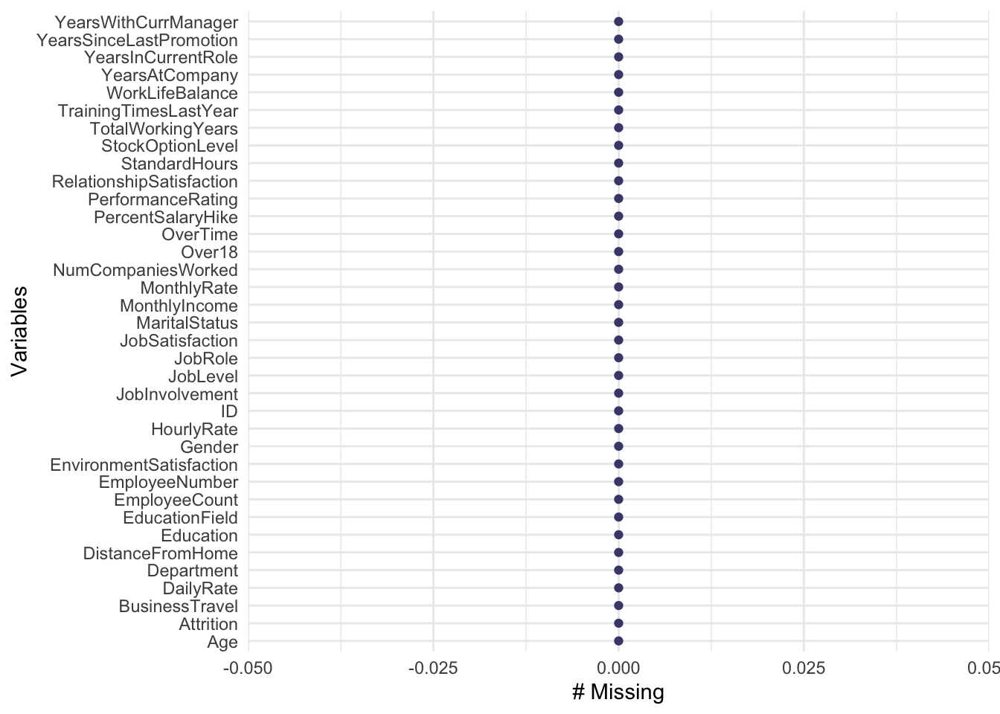
employee_train = employee_data[,-1]## Removes the ID term from the Data Set
employee_train = employee_train[,-22] ## Removes "Over 18" Variable
employee_train$BusinessTravel = as.factor(employee_train$BusinessTravel)
employee_train$Department = as.factor(employee_train$Department)
employee_train$JobLevel = as.factor(employee_train$JobLevel)
employee_train$EducationField = as.factor(employee_train$EducationField)
employee_train$Gender = as.factor(employee_train$Gender)
employee_train$JobRole = as.factor(employee_train$JobRole)
employee_train$MaritalStatus = as.factor(employee_train$MaritalStatus)
employee_train$OverTime = as.factor(employee_train$OverTime)
employee_train$Attrition = as.factor(employee_train$Attrition)no_attrition_test = no_attrition_data[,-1] ## Removes the ID term from the Data Set
no_attrition_test$BusinessTravel = as.factor(no_attrition_test$BusinessTravel)
no_attrition_test$Department = as.factor(no_attrition_test$Department)
no_attrition_test$JobLevel = as.factor(no_attrition_test$JobLevel)
no_attrition_test$EducationField = as.factor(no_attrition_test$EducationField)
no_attrition_test$Gender = as.factor(no_attrition_test$Gender)
no_attrition_test$JobRole = as.factor(no_attrition_test$JobRole)
no_attrition_test$MaritalStatus = as.factor(no_attrition_test$MaritalStatus)
no_attrition_test$OverTime = as.factor(no_attrition_test$OverTime)no_salary_test = no_salary_data[,-1] ## Removes the ID term from the Data Set
no_salary_test$BusinessTravel = as.factor(no_salary_test$BusinessTravel)
no_salary_test$Department = as.factor(no_salary_test$Department)
no_salary_test$EducationField = as.factor(no_salary_test$EducationField)
no_salary_test$Gender = as.factor(no_salary_test$Gender)
no_salary_test$JobLevel = as.factor(no_salary_test$JobLevel)
no_salary_test$JobRole = as.factor(no_salary_test$JobRole)
no_salary_test$MaritalStatus = as.factor(no_salary_test$MaritalStatus)
no_salary_test$OverTime = as.factor(no_salary_test$OverTime)
no_salary_test$Attrition = as.factor(no_salary_test$Attrition)corr_data = employee_train[, c(1,4,6,7.9,10,11,13,14,17,19,20,21,23,24,25,27,28,29,30,31,32,33,34)] ## Puts on the continuous variables into a data set
cormat = round(cor(corr_data),2) ## Setting up data set
melt_cormat = melt(cormat) ## Setting up data set
melt_cormat %>% ggplot(aes(x=X1, y=X2, fill=value)) + geom_tile() + ggtitle("Correlation Between Variables") ## Create correlation matrix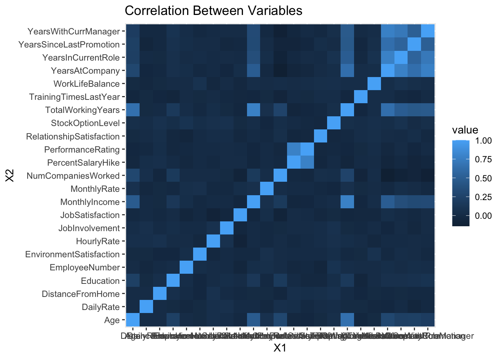
##Graphs for important variables in relation to Attrition
employee_train %>% ggplot(aes(x=Age, color = Attrition)) + geom_boxplot() + ggtitle("Age vs Attrition") ## Plots age vs attrition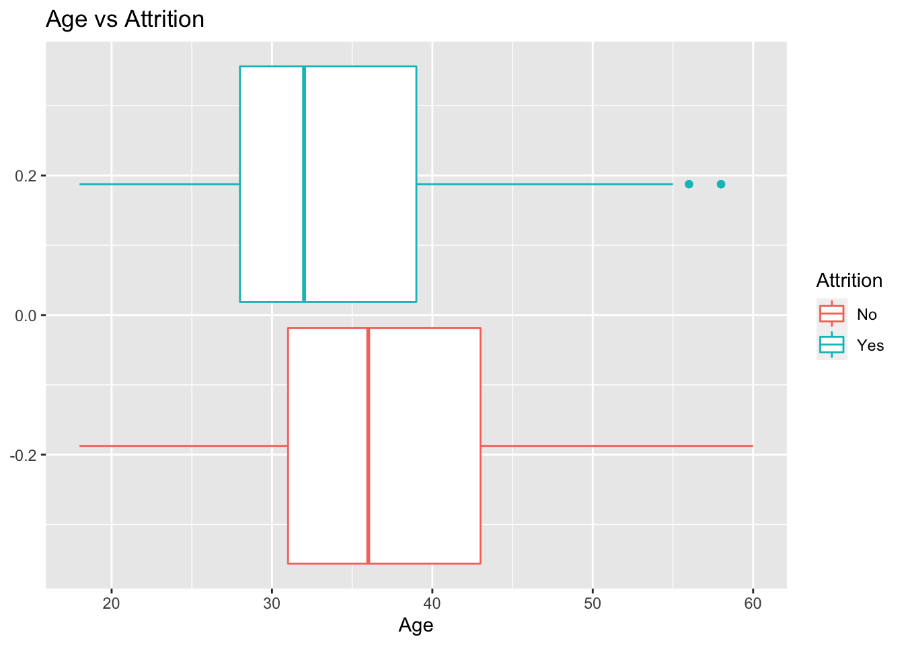
employee_train %>% ggplot(aes(x=MonthlyIncome, color = Attrition)) + geom_boxplot() + ggtitle("Monthly Income vs Attrition") ## Plots monthly income vs attrition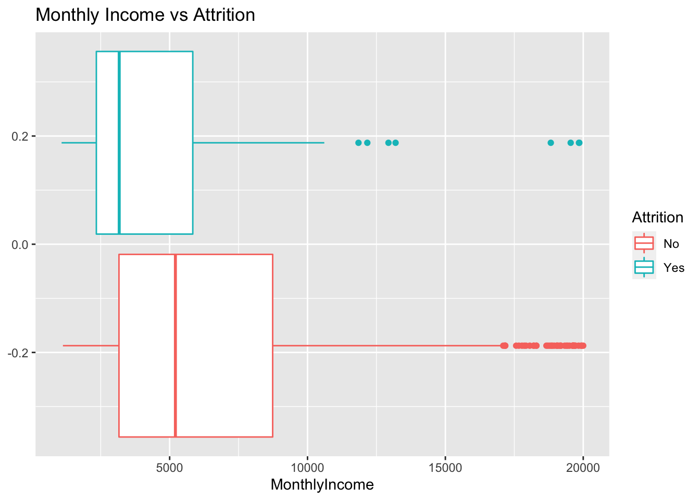
employee_train %>% ggplot(aes(x=TotalWorkingYears, color = Attrition)) + geom_boxplot() + ggtitle("Total Working Years vs Attrition") ## Plots total working years vs attrition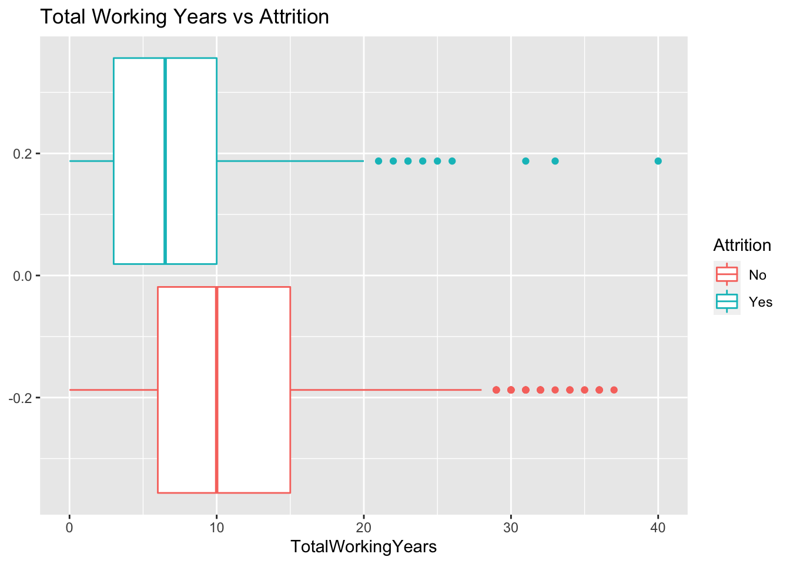
employee_train %>% ggplot(aes(x=YearsAtCompany, color = Attrition)) + geom_boxplot() + ggtitle("Years at the Company vs Attrition") ## Plots years at the company vs attrition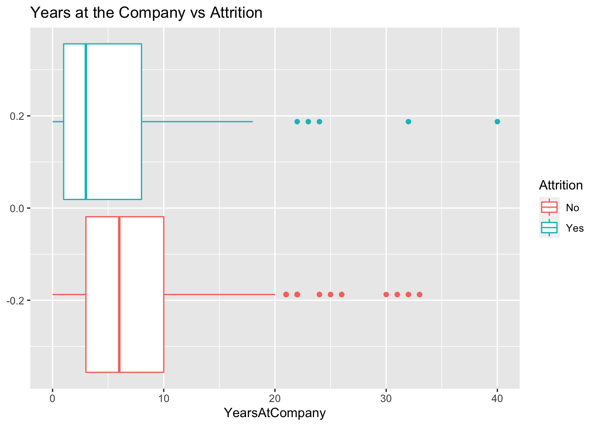
employee_train %>% ggplot(aes(x=DailyRate, color = Attrition)) + geom_boxplot() + ggtitle("Daily Rate vs Attrition") ## Plots daily rate vs attrition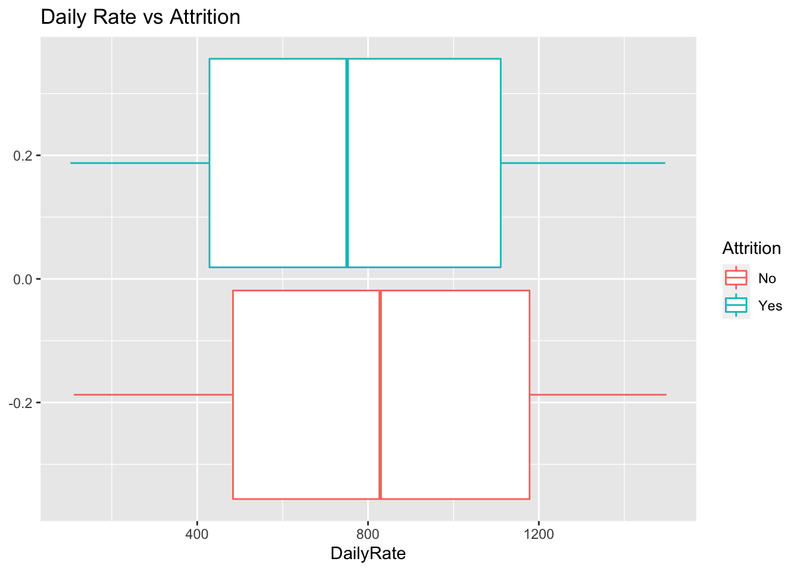
employee_train %>% ggplot(aes(x=DistanceFromHome, color = Attrition)) + geom_boxplot() + ggtitle("Distance from Home vs Attrition") ## Plots distance from home vs attrition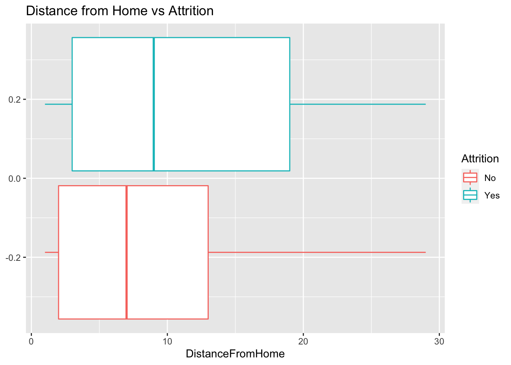
##Graphs for important variables in relation to Monthly Income
employee_train %>% ggplot(aes(x=MonthlyIncome, color = JobLevel)) + geom_boxplot() + ggtitle("Salary vs Job Level") ## Plots monthly income vs job level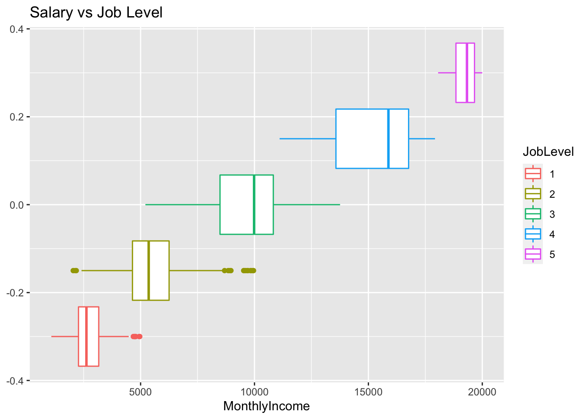
employee_train %>% ggplot(aes(x=MonthlyIncome, color = JobRole)) + geom_boxplot() + ggtitle("Salary vs Job Role") ## Plots monthly income vs job role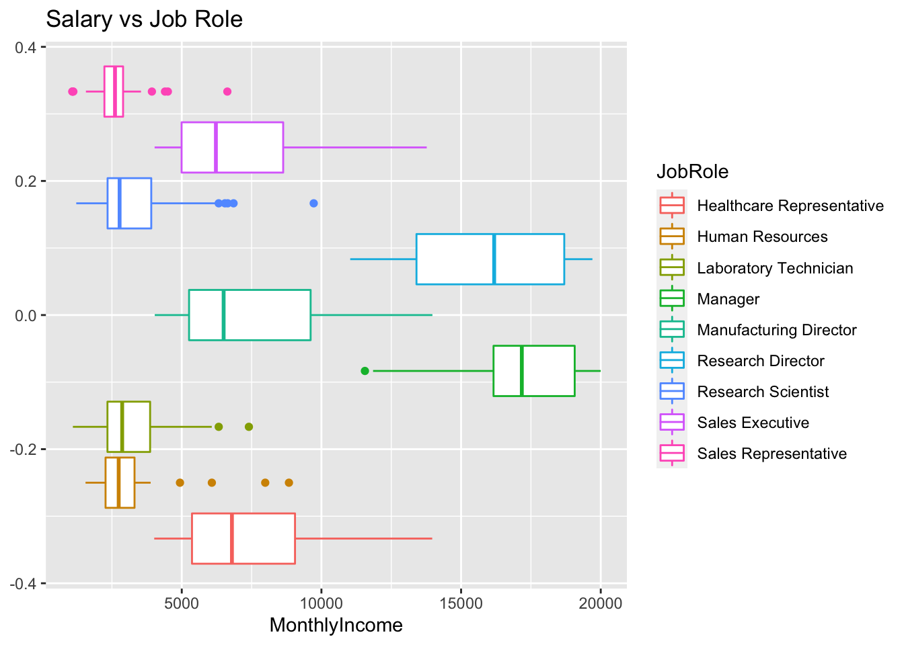
employee_train %>% ggplot(aes(x=MonthlyIncome, color = Gender)) + geom_boxplot() + ggtitle("Salary vs Gender") ## Plots monthly income vs job level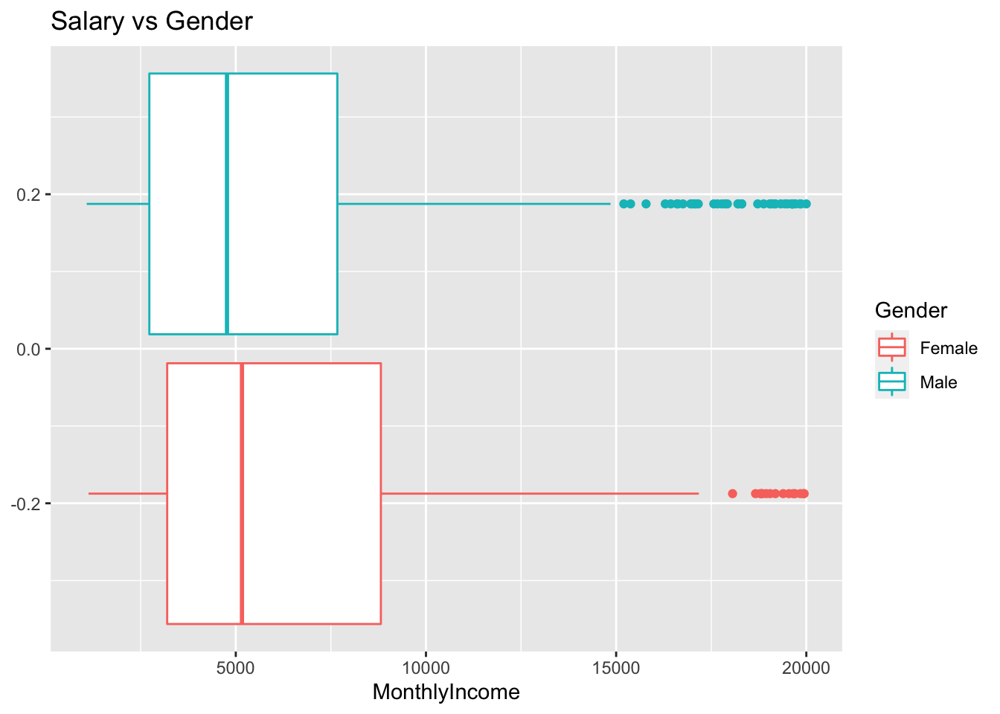
employee_train %>% ggplot(aes(x=MonthlyIncome, y=TotalWorkingYears, color=Gender)) + geom_point() + ggtitle("Salary vs Total Working Years") ## Plots monthly income vs total working years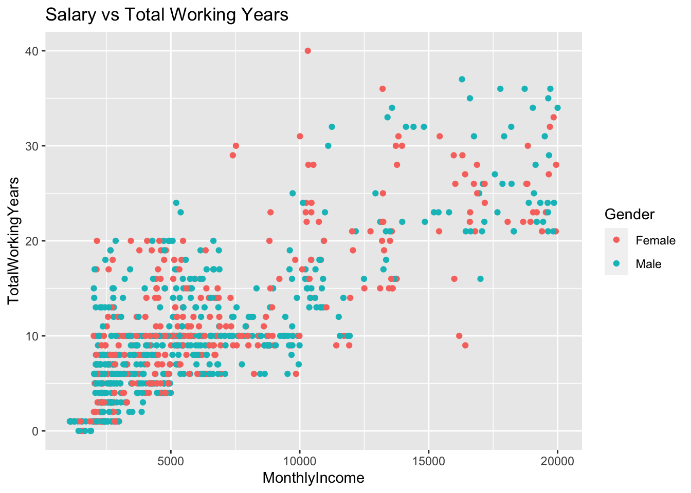
employee_train %>% ggplot(aes(x=MonthlyIncome, color = BusinessTravel)) + geom_boxplot() + ggtitle("Salary vs Travel Amount") ## Plots monthly income vs travel amount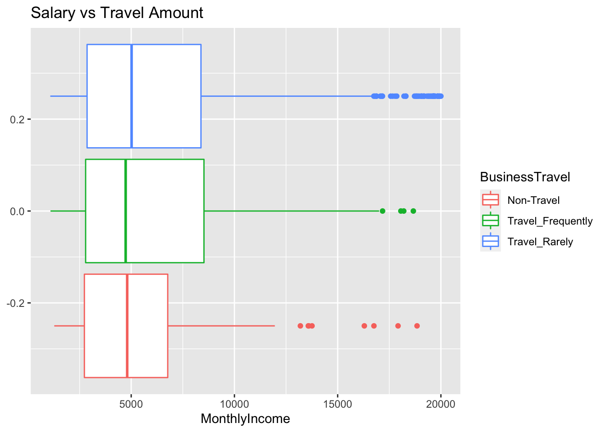
set.seed(10000) ## Sets seed
splitPerc = .70 ## Determines test and train data split
trainIndices = sample(1:dim(employee_train)[1],round(splitPerc * dim(employee_train)[1])) ## Splits data set into training and test sets
train = employee_train[trainIndices,]
test = employee_train[-trainIndices,]nb_model = naive_bayes(as.factor(Attrition)~., data = employee_train) ## creates naive bayes model
nb_classifications = predict(nb_model,test) ## Predicts using model ## Warning: predict.naive_bayes(): more features in the newdata are provided as
## there are probability tables in the object. Calculation is performed based on
## features to be found in the tables.table(test$Attrition,nb_classifications) ## Generates the table of predicted vs actual## nb_classifications
## No Yes
## No 193 29
## Yes 13 26nb_CM = confusionMatrix(table(test$Attrition,nb_classifications)) ## Creates a confusion matrix
print(nb_CM) ## Prints all the models statistics including sensitivity and specificity ## Confusion Matrix and Statistics
##
## nb_classifications
## No Yes
## No 193 29
## Yes 13 26
##
## Accuracy : 0.8391
## 95% CI : (0.7888, 0.8815)
## No Information Rate : 0.7893
## P-Value [Acc > NIR] : 0.02614
##
## Kappa : 0.4585
##
## Mcnemar's Test P-Value : 0.02064
##
## Sensitivity : 0.9369
## Specificity : 0.4727
## Pos Pred Value : 0.8694
## Neg Pred Value : 0.6667
## Prevalence : 0.7893
## Detection Rate : 0.7395
## Detection Prevalence : 0.8506
## Balanced Accuracy : 0.7048
##
## 'Positive' Class : No
## rf_model = randomForest(as.factor(Attrition)~., data = train) ## creates random forest model
rf_classifications = predict(rf_model,test) ## Predicts using the random forest model
table(test$Attrition,rf_classifications) ## Generates the table of predicted vs actual## rf_classifications
## No Yes
## No 221 1
## Yes 34 5rf_CM = confusionMatrix(table(test$Attrition,rf_classifications)) ## Creates a confusion matrix
print(rf_CM) ## Prints all the models statistics including sensitivity and specificity ## Confusion Matrix and Statistics
##
## rf_classifications
## No Yes
## No 221 1
## Yes 34 5
##
## Accuracy : 0.8659
## 95% CI : (0.8185, 0.9048)
## No Information Rate : 0.977
## P-Value [Acc > NIR] : 1
##
## Kappa : 0.1899
##
## Mcnemar's Test P-Value : 6.338e-08
##
## Sensitivity : 0.8667
## Specificity : 0.8333
## Pos Pred Value : 0.9955
## Neg Pred Value : 0.1282
## Prevalence : 0.9770
## Detection Rate : 0.8467
## Detection Prevalence : 0.8506
## Balanced Accuracy : 0.8500
##
## 'Positive' Class : No
## attrition_pred = predict(rf_model, no_attrition_test) ## Predicts the attrition classifications of the data set that doesn't have attrition values. Uses the random forest model to handle the predictions
final_attrition_data = cbind(no_attrition_data, attrition_pred) ## Combines predicted attrition values with the data set with no attrition to have a finalized data set
write.csv(final_attrition_data, "") ## Saves the new data set to the file location given## "","ID","Age","BusinessTravel","DailyRate","Department","DistanceFromHome","Education","EducationField","EmployeeCount","EmployeeNumber","EnvironmentSatisfaction","Gender","HourlyRate","JobInvolvement","JobLevel","JobRole","JobSatisfaction","MaritalStatus","MonthlyIncome","MonthlyRate","NumCompaniesWorked","Over18","OverTime","PercentSalaryHike","PerformanceRating","RelationshipSatisfaction","StandardHours","StockOptionLevel","TotalWorkingYears","TrainingTimesLastYear","WorkLifeBalance","YearsAtCompany","YearsInCurrentRole","YearsSinceLastPromotion","YearsWithCurrManager","attrition_pred"
## "1",1171,35,"Travel_Rarely",750,"Research & Development",28,3,"Life Sciences",1,1596,2,"Male",46,4,2,"Laboratory Technician",3,"Married",3407,25348,1,"Y","No",17,3,4,80,2,10,3,2,10,9,6,8,"No"
## "2",1172,33,"Travel_Rarely",147,"Human Resources",2,3,"Human Resources",1,1207,2,"Male",99,3,1,"Human Resources",3,"Married",3600,8429,1,"Y","No",13,3,4,80,1,5,2,3,5,4,1,4,"No"
## "3",1173,26,"Travel_Rarely",1330,"Research & Development",21,3,"Medical",1,1107,1,"Male",37,3,1,"Laboratory Technician",3,"Divorced",2377,19373,1,"Y","No",20,4,3,80,1,1,0,2,1,1,0,0,"No"
## "4",1174,55,"Travel_Rarely",1311,"Research & Development",2,3,"Life Sciences",1,505,3,"Female",97,3,4,"Manager",4,"Single",16659,23258,2,"Y","Yes",13,3,3,80,0,30,2,3,5,4,1,2,"No"
## "5",1175,29,"Travel_Rarely",1246,"Sales",19,3,"Life Sciences",1,1497,3,"Male",77,2,2,"Sales Executive",3,"Divorced",8620,23757,1,"Y","No",14,3,3,80,2,10,3,3,10,7,0,4,"No"
## "6",1176,51,"Travel_Frequently",1456,"Research & Development",1,4,"Medical",1,145,1,"Female",30,2,3,"Healthcare Representative",1,"Single",7484,25796,3,"Y","No",20,4,3,80,0,23,1,2,13,12,12,8,"No"
## "7",1177,52,"Non-Travel",585,"Sales",29,4,"Life Sciences",1,2019,1,"Male",40,3,1,"Sales Representative",4,"Divorced",3482,19788,2,"Y","No",15,3,2,80,2,16,3,2,9,8,0,0,"No"
## "8",1178,39,"Travel_Rarely",1387,"Research & Development",10,5,"Medical",1,1618,2,"Male",76,3,2,"Manufacturing Director",1,"Married",5377,3835,2,"Y","No",13,3,4,80,3,10,3,3,7,7,7,7,"No"
## "9",1179,31,"Travel_Rarely",1062,"Research & Development",24,3,"Medical",1,1252,3,"Female",96,2,2,"Healthcare Representative",1,"Single",6812,17198,1,"Y","No",19,3,2,80,0,10,2,3,10,9,1,8,"No"
## "10",1180,31,"Travel_Frequently",534,"Research & Development",20,3,"Life Sciences",1,587,1,"Male",66,3,3,"Healthcare Representative",3,"Married",9824,22908,3,"Y","No",12,3,1,80,0,12,2,3,1,0,0,0,"No"
## "11",1181,40,"Travel_Frequently",1469,"Research & Development",9,4,"Medical",1,964,4,"Male",35,3,1,"Research Scientist",2,"Divorced",3617,25063,8,"Y","Yes",14,3,4,80,1,3,2,3,1,1,0,0,"No"
## "12",1182,31,"Travel_Rarely",1082,"Research & Development",1,4,"Medical",1,95,3,"Male",87,3,1,"Research Scientist",2,"Single",2501,18775,1,"Y","No",17,3,2,80,0,1,4,3,1,1,1,0,"No"
## "13",1183,33,"Non-Travel",775,"Research & Development",4,3,"Technical Degree",1,1771,4,"Male",90,3,2,"Research Scientist",2,"Divorced",3055,6194,5,"Y","No",15,3,4,80,2,11,2,2,9,8,1,7,"No"
## "14",1184,50,"Travel_Rarely",691,"Research & Development",2,3,"Medical",1,815,3,"Male",64,3,4,"Research Director",3,"Married",17639,6881,5,"Y","No",16,3,4,80,0,30,3,3,4,3,0,3,"No"
## "15",1185,33,"Travel_Rarely",516,"Research & Development",8,5,"Life Sciences",1,1515,4,"Male",69,3,2,"Healthcare Representative",3,"Single",6388,22049,2,"Y","Yes",17,3,1,80,0,14,6,3,0,0,0,0,"No"
## "16",1186,42,"Non-Travel",335,"Research & Development",23,2,"Life Sciences",1,1976,4,"Male",37,2,2,"Research Scientist",3,"Single",4332,14811,1,"Y","No",12,3,4,80,0,20,2,3,20,9,3,7,"No"
## "17",1187,33,"Travel_Rarely",575,"Research & Development",25,3,"Life Sciences",1,1545,4,"Male",44,2,2,"Manufacturing Director",2,"Single",4320,24152,1,"Y","No",13,3,4,80,0,5,2,3,5,3,0,2,"No"
## "18",1188,29,"Travel_Rarely",694,"Research & Development",1,3,"Life Sciences",1,1264,4,"Female",87,2,4,"Research Director",4,"Divorced",16124,3423,3,"Y","No",14,3,2,80,2,9,2,2,7,7,1,7,"No"
## "19",1189,55,"Travel_Rarely",436,"Sales",2,1,"Medical",1,842,3,"Male",37,3,2,"Sales Executive",4,"Single",5160,21519,4,"Y","No",16,3,3,80,0,12,3,2,9,7,7,3,"No"
## "20",1190,49,"Travel_Rarely",1184,"Sales",11,3,"Marketing",1,840,3,"Female",43,3,3,"Sales Executive",4,"Married",7654,5860,1,"Y","No",18,3,1,80,2,9,3,4,9,8,7,7,"No"
## "21",1191,32,"Travel_Rarely",267,"Research & Development",29,4,"Life Sciences",1,2010,3,"Female",49,2,1,"Laboratory Technician",2,"Single",2837,15919,1,"Y","No",13,3,3,80,0,6,3,3,6,2,4,1,"No"
## "22",1192,50,"Travel_Rarely",1126,"Research & Development",1,2,"Medical",1,997,4,"Male",66,3,4,"Research Director",4,"Divorced",17399,6615,9,"Y","No",22,4,3,80,1,32,1,2,5,4,1,3,"No"
## "23",1193,54,"Travel_Rarely",157,"Research & Development",10,3,"Medical",1,1980,3,"Female",77,3,2,"Manufacturing Director",1,"Single",4440,25198,6,"Y","Yes",19,3,4,80,0,9,3,3,5,2,1,4,"No"
## "24",1194,24,"Travel_Frequently",897,"Human Resources",10,3,"Medical",1,1746,1,"Male",59,3,1,"Human Resources",4,"Married",2145,2097,0,"Y","No",14,3,4,80,1,3,2,3,2,2,2,1,"No"
## "25",1195,45,"Travel_Rarely",1038,"Research & Development",20,3,"Medical",1,1460,2,"Male",95,1,3,"Healthcare Representative",1,"Divorced",10851,19863,2,"Y","Yes",18,3,2,80,1,24,2,3,7,7,0,7,"No"
## "26",1196,36,"Non-Travel",635,"Sales",10,4,"Medical",1,592,2,"Male",32,3,3,"Sales Executive",4,"Single",9980,15318,1,"Y","No",14,3,4,80,0,10,3,2,10,3,9,7,"No"
## "27",1197,41,"Non-Travel",552,"Human Resources",4,3,"Human Resources",1,1722,3,"Male",60,1,2,"Human Resources",2,"Married",6430,20794,6,"Y","No",19,3,2,80,1,10,4,3,3,2,1,2,"No"
## "28",1198,21,"Travel_Rarely",1343,"Sales",22,1,"Technical Degree",1,669,3,"Male",49,3,1,"Sales Representative",3,"Single",3447,24444,1,"Y","No",11,3,3,80,0,3,2,3,3,2,1,2,"No"
## "29",1199,36,"Travel_Rarely",335,"Sales",17,2,"Marketing",1,1908,3,"Male",33,2,2,"Sales Executive",2,"Married",5507,16822,2,"Y","No",16,3,3,80,2,12,1,1,4,2,1,3,"No"
## "30",1200,30,"Travel_Frequently",109,"Research & Development",5,3,"Medical",1,1017,2,"Female",60,3,1,"Laboratory Technician",2,"Single",2422,25725,0,"Y","No",17,3,1,80,0,4,3,3,3,2,1,2,"No"
## "31",1201,35,"Travel_Frequently",146,"Research & Development",2,4,"Medical",1,1704,1,"Male",79,2,1,"Research Scientist",4,"Single",4930,13970,0,"Y","Yes",14,3,3,80,0,6,2,4,5,4,1,4,"No"
## "32",1202,46,"Travel_Rarely",717,"Research & Development",13,4,"Life Sciences",1,1727,3,"Male",34,3,2,"Healthcare Representative",2,"Single",5562,9697,6,"Y","No",14,3,4,80,0,19,3,3,10,7,0,9,"No"
## "33",1203,39,"Travel_Rarely",903,"Sales",2,5,"Life Sciences",1,985,1,"Male",41,4,3,"Sales Executive",3,"Single",7880,2560,0,"Y","No",18,3,4,80,0,9,3,3,8,7,0,7,"No"
## "34",1204,35,"Travel_Rarely",185,"Research & Development",23,4,"Medical",1,1826,2,"Male",91,1,1,"Laboratory Technician",3,"Married",2705,9696,0,"Y","No",16,3,2,80,1,6,2,4,5,4,0,3,"No"
## "35",1205,21,"Travel_Rarely",1334,"Research & Development",10,3,"Life Sciences",1,1079,3,"Female",36,2,1,"Laboratory Technician",1,"Single",1416,17258,1,"Y","No",13,3,1,80,0,1,6,2,1,0,1,0,"Yes"
## "36",1206,30,"Travel_Rarely",1358,"Sales",16,1,"Life Sciences",1,1479,4,"Male",96,3,2,"Sales Executive",3,"Married",5301,2939,8,"Y","No",15,3,3,80,2,4,2,2,2,1,2,2,"No"
## "37",1207,42,"Travel_Frequently",555,"Sales",26,3,"Marketing",1,404,3,"Female",77,3,4,"Sales Executive",2,"Married",13525,14864,5,"Y","No",14,3,4,80,1,23,2,4,20,4,4,8,"No"
## "38",1208,45,"Travel_Frequently",1297,"Research & Development",1,4,"Medical",1,1922,2,"Male",44,3,2,"Healthcare Representative",3,"Single",5399,14511,4,"Y","No",12,3,3,80,0,12,3,3,4,2,0,3,"No"
## "39",1209,39,"Travel_Frequently",672,"Research & Development",7,2,"Medical",1,444,3,"Male",54,2,5,"Manager",4,"Married",19272,21141,1,"Y","No",15,3,1,80,1,21,2,3,21,9,13,3,"No"
## "40",1210,48,"Travel_Rarely",715,"Research & Development",1,3,"Life Sciences",1,1263,4,"Male",76,2,5,"Research Director",4,"Single",18265,8733,6,"Y","No",12,3,3,80,0,25,3,4,1,0,0,0,"No"
## "41",1211,38,"Travel_Rarely",364,"Research & Development",3,5,"Technical Degree",1,193,4,"Female",32,3,2,"Research Scientist",3,"Single",4317,2302,3,"Y","Yes",20,4,2,80,0,19,2,3,3,2,2,2,"No"
## "42",1212,21,"Travel_Rarely",546,"Research & Development",5,1,"Medical",1,1623,3,"Male",97,3,1,"Research Scientist",4,"Single",3117,26009,1,"Y","No",18,3,3,80,0,3,2,3,2,2,2,2,"No"
## "43",1213,55,"Travel_Rarely",836,"Research & Development",8,3,"Medical",1,84,4,"Female",33,3,4,"Manager",3,"Divorced",14756,19730,2,"Y","Yes",14,3,3,80,3,21,2,3,5,0,0,2,"No"
## "44",1214,59,"Travel_Rarely",1429,"Research & Development",18,4,"Medical",1,1283,4,"Male",67,3,3,"Manufacturing Director",4,"Single",10512,20002,6,"Y","No",12,3,4,80,0,25,6,2,9,7,5,4,"No"
## "45",1215,58,"Travel_Rarely",1145,"Research & Development",9,3,"Medical",1,214,2,"Female",75,2,1,"Research Scientist",2,"Married",3346,11873,4,"Y","Yes",20,4,2,80,1,9,3,2,1,0,0,0,"No"
## "46",1216,49,"Travel_Frequently",1064,"Research & Development",2,1,"Life Sciences",1,1941,2,"Male",42,3,5,"Research Director",4,"Married",19161,13738,3,"Y","No",15,3,4,80,0,28,3,3,5,4,4,3,"No"
## "47",1217,52,"Travel_Rarely",1490,"Research & Development",4,2,"Life Sciences",1,546,4,"Female",30,3,4,"Manager",4,"Married",16555,10310,2,"Y","No",13,3,4,80,0,31,2,1,5,2,1,4,"No"
## "48",1218,37,"Travel_Rarely",589,"Sales",9,2,"Marketing",1,1787,2,"Male",46,2,2,"Sales Executive",2,"Married",4189,8800,1,"Y","No",14,3,1,80,2,5,2,3,5,2,0,3,"No"
## "49",1219,37,"Non-Travel",1413,"Research & Development",5,2,"Technical Degree",1,1440,3,"Male",84,4,1,"Laboratory Technician",3,"Single",3500,25470,0,"Y","No",14,3,1,80,0,7,2,1,6,5,1,3,"No"
## "50",1220,26,"Travel_Frequently",921,"Research & Development",1,1,"Medical",1,1068,1,"Female",66,2,1,"Research Scientist",3,"Divorced",2007,25265,1,"Y","No",13,3,3,80,2,5,5,3,5,3,1,3,"No"
## "51",1221,52,"Travel_Rarely",621,"Sales",3,4,"Marketing",1,776,3,"Male",31,2,4,"Manager",1,"Married",16856,10084,1,"Y","No",11,3,1,80,0,34,3,4,34,6,1,16,"No"
## "52",1222,33,"Travel_Frequently",1392,"Research & Development",3,4,"Life Sciences",1,5,4,"Female",56,3,1,"Research Scientist",3,"Married",2909,23159,1,"Y","Yes",11,3,3,80,0,8,3,3,8,7,3,0,"No"
## "53",1223,32,"Non-Travel",300,"Research & Development",1,3,"Life Sciences",1,882,4,"Male",61,3,1,"Laboratory Technician",4,"Divorced",2314,9148,0,"Y","No",12,3,2,80,1,4,2,3,3,0,0,2,"No"
## "54",1224,51,"Travel_Rarely",1178,"Sales",14,2,"Life Sciences",1,500,3,"Female",87,3,2,"Sales Executive",4,"Married",4936,14862,4,"Y","No",11,3,3,80,1,18,2,2,7,7,0,7,"No"
## "55",1225,39,"Travel_Rarely",1329,"Sales",4,4,"Life Sciences",1,182,4,"Female",47,2,2,"Sales Executive",3,"Married",5902,14590,4,"Y","No",14,3,3,80,1,17,1,4,15,11,5,9,"No"
## "56",1226,39,"Travel_Frequently",1218,"Research & Development",1,1,"Life Sciences",1,531,2,"Male",52,3,5,"Manager",3,"Divorced",19197,8213,1,"Y","Yes",14,3,3,80,1,21,3,3,21,8,1,6,"No"
## "57",1227,33,"Travel_Rarely",527,"Research & Development",1,4,"Other",1,780,4,"Male",63,3,1,"Research Scientist",4,"Single",2686,5207,1,"Y","Yes",13,3,3,80,0,10,2,2,10,9,7,8,"No"
## "58",1228,30,"Non-Travel",1400,"Research & Development",3,3,"Life Sciences",1,562,3,"Male",53,3,1,"Laboratory Technician",4,"Married",2097,16734,4,"Y","No",15,3,3,80,1,9,3,1,5,3,1,4,"No"
## "59",1229,30,"Travel_Rarely",979,"Sales",15,2,"Marketing",1,1754,3,"Male",94,2,3,"Sales Executive",1,"Divorced",7140,3088,2,"Y","No",11,3,1,80,1,12,2,3,7,7,1,7,"No"
## "60",1230,44,"Travel_Rarely",986,"Research & Development",8,4,"Life Sciences",1,874,1,"Male",62,4,1,"Laboratory Technician",4,"Married",2818,5044,2,"Y","Yes",24,4,3,80,1,10,2,2,3,2,0,2,"No"
## "61",1231,40,"Travel_Rarely",1398,"Sales",2,4,"Life Sciences",1,558,3,"Female",79,3,5,"Manager",3,"Married",18041,13022,0,"Y","No",14,3,4,80,0,21,2,3,20,15,1,12,"No"
## "62",1232,31,"Travel_Rarely",741,"Research & Development",2,4,"Life Sciences",1,1721,2,"Male",69,3,1,"Laboratory Technician",3,"Married",3477,18103,1,"Y","No",14,3,4,80,1,6,2,4,5,2,0,3,"No"
## "63",1233,20,"Travel_Rarely",1097,"Research & Development",11,3,"Medical",1,1016,4,"Female",98,2,1,"Research Scientist",1,"Single",2600,18275,1,"Y","Yes",15,3,1,80,0,1,2,3,1,0,0,0,"Yes"
## "64",1234,42,"Travel_Frequently",481,"Sales",12,3,"Life Sciences",1,1167,3,"Male",44,3,4,"Sales Executive",1,"Single",13758,2447,0,"Y","Yes",12,3,2,80,0,22,2,2,21,9,13,14,"No"
## "65",1235,32,"Travel_Rarely",495,"Research & Development",10,3,"Medical",1,1516,3,"Male",64,3,3,"Manager",4,"Single",11244,21072,2,"Y","No",25,4,2,80,0,10,5,4,5,2,0,0,"No"
## "66",1236,33,"Travel_Rarely",118,"Sales",16,3,"Marketing",1,819,1,"Female",69,3,2,"Sales Executive",1,"Single",5324,26507,5,"Y","No",15,3,3,80,0,6,3,3,3,2,0,2,"No"
## "67",1237,53,"Travel_Rarely",102,"Research & Development",23,4,"Life Sciences",1,901,4,"Female",72,3,4,"Research Director",4,"Single",14275,20206,6,"Y","No",18,3,3,80,0,33,0,3,12,9,3,8,"No"
## "68",1238,33,"Travel_Frequently",1111,"Sales",5,1,"Life Sciences",1,1395,2,"Male",61,3,2,"Sales Executive",4,"Married",9998,19293,6,"Y","No",13,3,1,80,0,8,2,4,5,4,1,2,"No"
## "69",1239,24,"Travel_Frequently",535,"Sales",24,3,"Medical",1,632,4,"Male",38,3,1,"Sales Representative",4,"Married",2400,5530,0,"Y","No",13,3,3,80,2,3,3,3,2,2,2,1,"No"
## "70",1240,42,"Travel_Rarely",603,"Research & Development",7,4,"Medical",1,1292,2,"Female",78,4,2,"Research Scientist",2,"Married",2372,5628,6,"Y","Yes",16,3,4,80,0,18,2,3,1,0,0,0,"No"
## "71",1241,35,"Travel_Rarely",755,"Research & Development",9,4,"Life Sciences",1,496,3,"Male",97,2,2,"Healthcare Representative",2,"Single",6540,19394,9,"Y","No",19,3,3,80,0,10,5,3,1,1,0,0,"No"
## "72",1242,44,"Travel_Rarely",200,"Research & Development",29,4,"Other",1,1225,4,"Male",32,3,2,"Research Scientist",4,"Single",4541,7744,1,"Y","No",25,4,2,80,0,20,3,3,20,11,13,17,"No"
## "73",1243,54,"Travel_Rarely",376,"Research & Development",19,4,"Medical",1,799,4,"Female",95,3,2,"Manufacturing Director",1,"Divorced",5485,22670,9,"Y","Yes",11,3,2,80,2,9,4,3,5,3,1,4,"No"
## "74",1244,37,"Travel_Rarely",783,"Research & Development",7,4,"Medical",1,1885,4,"Male",78,3,2,"Research Scientist",1,"Married",4284,13588,5,"Y","Yes",22,4,3,80,1,16,2,3,5,3,0,4,"No"
## "75",1245,43,"Travel_Frequently",422,"Research & Development",1,3,"Life Sciences",1,902,4,"Female",33,3,2,"Healthcare Representative",4,"Married",5562,21782,4,"Y","No",13,3,2,80,1,12,2,2,5,2,2,2,"No"
## "76",1246,28,"Travel_Rarely",640,"Research & Development",1,3,"Technical Degree",1,1301,4,"Male",84,3,1,"Research Scientist",1,"Single",2080,4732,2,"Y","No",11,3,2,80,0,5,2,2,3,2,1,2,"No"
## "77",1247,57,"Travel_Rarely",593,"Research & Development",1,4,"Medical",1,482,4,"Male",88,3,2,"Healthcare Representative",3,"Married",6755,2967,2,"Y","No",11,3,3,80,0,15,2,3,3,2,1,2,"No"
## "78",1248,30,"Travel_Frequently",1312,"Research & Development",2,4,"Technical Degree",1,1745,4,"Female",78,2,1,"Research Scientist",1,"Single",4968,26427,0,"Y","No",16,3,4,80,0,10,2,3,9,7,0,7,"No"
## "79",1249,36,"Travel_Frequently",469,"Research & Development",3,3,"Technical Degree",1,1257,3,"Male",46,3,1,"Research Scientist",2,"Married",3692,9256,1,"Y","No",12,3,3,80,0,12,2,2,11,10,0,7,"No"
## "80",1250,36,"Travel_Rarely",1041,"Human Resources",13,3,"Human Resources",1,829,3,"Male",36,3,1,"Human Resources",2,"Married",2143,25527,4,"Y","No",13,3,2,80,1,8,2,3,5,2,0,4,"No"
## "81",1251,34,"Travel_Rarely",285,"Research & Development",29,3,"Medical",1,1377,2,"Male",86,3,2,"Laboratory Technician",3,"Married",5429,17491,4,"Y","No",13,3,1,80,2,10,1,3,8,7,7,7,"No"
## "82",1252,34,"Travel_Rarely",216,"Sales",1,4,"Marketing",1,1047,2,"Male",75,4,2,"Sales Executive",4,"Divorced",9725,12278,0,"Y","No",11,3,4,80,1,16,2,2,15,1,0,9,"No"
## "83",1253,41,"Travel_Rarely",1411,"Research & Development",19,2,"Life Sciences",1,334,3,"Male",36,3,2,"Research Scientist",1,"Divorced",3072,19877,2,"Y","No",16,3,1,80,2,17,2,2,1,0,0,0,"No"
## "84",1254,34,"Travel_Frequently",648,"Human Resources",11,3,"Life Sciences",1,1289,3,"Male",56,2,2,"Human Resources",2,"Married",4490,21833,4,"Y","No",11,3,4,80,2,14,5,4,10,9,1,8,"No"
## "85",1255,55,"Travel_Rarely",147,"Research & Development",20,2,"Technical Degree",1,389,2,"Male",37,3,2,"Laboratory Technician",4,"Married",5415,15972,3,"Y","Yes",19,3,4,80,1,12,4,3,10,7,0,8,"No"
## "86",1256,52,"Travel_Frequently",322,"Research & Development",28,2,"Medical",1,1401,4,"Female",59,4,4,"Manufacturing Director",3,"Married",13247,9731,2,"Y","Yes",11,3,2,80,1,24,3,2,5,3,0,2,"No"
## "87",1257,34,"Travel_Rarely",419,"Research & Development",7,4,"Life Sciences",1,28,1,"Female",53,3,3,"Research Director",2,"Single",11994,21293,0,"Y","No",11,3,3,80,0,13,4,3,12,6,2,11,"No"
## "88",1258,52,"Non-Travel",771,"Sales",2,4,"Life Sciences",1,329,1,"Male",79,2,5,"Manager",3,"Single",19068,21030,1,"Y","Yes",18,3,4,80,0,33,2,4,33,7,15,12,"No"
## "89",1259,49,"Travel_Rarely",1261,"Research & Development",7,3,"Other",1,499,2,"Male",31,2,3,"Healthcare Representative",3,"Single",10965,12066,8,"Y","No",24,4,3,80,0,26,2,3,5,2,0,0,"No"
## "90",1260,26,"Travel_Rarely",1146,"Sales",8,3,"Technical Degree",1,796,4,"Male",38,2,2,"Sales Executive",1,"Single",5326,3064,6,"Y","No",17,3,3,80,0,6,2,2,4,3,1,2,"No"
## "91",1261,44,"Travel_Rarely",921,"Research & Development",2,3,"Life Sciences",1,1703,3,"Female",96,4,3,"Healthcare Representative",4,"Married",7879,14810,1,"Y","Yes",19,3,2,80,1,9,2,3,8,7,6,7,"No"
## "92",1262,39,"Non-Travel",792,"Research & Development",1,3,"Life Sciences",1,1737,4,"Male",77,3,2,"Laboratory Technician",4,"Married",6472,8989,1,"Y","Yes",15,3,4,80,1,9,2,3,9,8,5,8,"No"
## "93",1263,27,"Travel_Rarely",1054,"Research & Development",8,3,"Medical",1,1751,3,"Female",67,3,1,"Research Scientist",4,"Single",3445,6152,1,"Y","No",11,3,3,80,0,6,5,2,6,2,1,4,"No"
## "94",1264,50,"Travel_Frequently",1115,"Research & Development",1,3,"Life Sciences",1,141,1,"Female",73,3,5,"Research Director",2,"Married",18172,9755,3,"Y","Yes",19,3,1,80,0,28,1,2,8,3,0,7,"No"
## "95",1265,40,"Travel_Rarely",118,"Sales",14,2,"Life Sciences",1,1598,4,"Female",84,3,2,"Sales Executive",1,"Married",4639,11262,1,"Y","No",15,3,3,80,1,5,2,3,5,4,1,2,"No"
## "96",1266,39,"Travel_Frequently",766,"Sales",20,3,"Life Sciences",1,1812,3,"Male",83,3,2,"Sales Executive",4,"Divorced",4127,19188,2,"Y","No",18,3,4,80,1,7,6,3,2,1,2,2,"No"
## "97",1267,60,"Travel_Rarely",370,"Research & Development",1,4,"Medical",1,1697,3,"Male",92,1,3,"Healthcare Representative",4,"Divorced",10883,20467,3,"Y","No",20,4,3,80,1,19,2,4,1,0,0,0,"No"
## "98",1268,39,"Travel_Rarely",867,"Research & Development",9,2,"Medical",1,1936,1,"Male",87,3,2,"Manufacturing Director",1,"Married",5151,12315,1,"Y","No",25,4,4,80,1,10,3,3,10,0,7,9,"No"
## "99",1269,29,"Travel_Rarely",992,"Research & Development",1,3,"Technical Degree",1,300,3,"Male",85,3,1,"Research Scientist",3,"Single",2058,19757,0,"Y","No",14,3,4,80,0,7,1,2,6,2,1,5,"No"
## "100",1270,31,"Travel_Rarely",202,"Research & Development",8,3,"Life Sciences",1,1433,1,"Female",34,2,1,"Research Scientist",2,"Single",1261,22262,1,"Y","No",12,3,3,80,0,1,3,4,1,0,0,0,"No"
## "101",1271,41,"Travel_Rarely",896,"Sales",6,3,"Life Sciences",1,298,4,"Female",75,3,3,"Manager",4,"Single",13591,14674,3,"Y","Yes",18,3,3,80,0,16,3,3,1,0,0,0,"No"
## "102",1272,30,"Non-Travel",829,"Research & Development",1,1,"Life Sciences",1,292,3,"Male",88,2,3,"Manufacturing Director",3,"Single",8474,20925,1,"Y","No",22,4,3,80,0,12,2,3,11,8,5,8,"No"
## "103",1273,25,"Travel_Rarely",1219,"Research & Development",4,1,"Technical Degree",1,1106,4,"Male",32,3,1,"Laboratory Technician",4,"Married",3691,4605,1,"Y","Yes",15,3,2,80,1,7,3,4,7,7,5,6,"No"
## "104",1274,53,"Travel_Rarely",1070,"Research & Development",3,4,"Medical",1,386,3,"Male",45,3,4,"Research Director",3,"Married",17584,21016,3,"Y","Yes",16,3,4,80,3,21,5,2,5,3,1,3,"No"
## "105",1275,30,"Travel_Frequently",448,"Sales",12,4,"Life Sciences",1,648,2,"Male",74,2,1,"Sales Representative",1,"Married",2033,14470,1,"Y","No",18,3,3,80,1,1,2,4,1,0,0,0,"No"
## "106",1276,26,"Travel_Rarely",1066,"Research & Development",2,2,"Medical",1,1018,4,"Male",32,4,2,"Manufacturing Director",4,"Married",5472,3334,1,"Y","No",12,3,2,80,0,8,2,3,8,7,1,3,"No"
## "107",1277,36,"Travel_Frequently",1302,"Research & Development",6,4,"Life Sciences",1,1594,1,"Male",80,4,2,"Laboratory Technician",1,"Married",5562,19711,3,"Y","Yes",13,3,4,80,1,9,3,3,3,2,0,2,"No"
## "108",1278,31,"Travel_Rarely",1079,"Sales",10,2,"Medical",1,1912,3,"Female",86,3,2,"Sales Executive",4,"Divorced",6583,20115,2,"Y","Yes",11,3,4,80,1,8,2,3,5,2,1,4,"No"
## "109",1279,37,"Travel_Rarely",807,"Human Resources",6,4,"Human Resources",1,133,3,"Male",63,3,1,"Human Resources",1,"Divorced",2073,23648,4,"Y","Yes",22,4,4,80,0,7,3,3,3,2,0,2,"No"
## "110",1280,54,"Non-Travel",142,"Human Resources",26,3,"Human Resources",1,148,4,"Female",30,4,4,"Manager",4,"Single",17328,13871,2,"Y","Yes",12,3,3,80,0,23,3,3,5,3,4,4,"No"
## "111",1281,35,"Travel_Frequently",662,"Sales",18,4,"Marketing",1,1380,4,"Female",67,3,2,"Sales Executive",3,"Married",4614,23288,0,"Y","Yes",18,3,3,80,1,5,0,2,4,2,3,2,"No"
## "112",1282,35,"Travel_Rarely",1296,"Research & Development",5,4,"Technical Degree",1,464,3,"Male",62,3,3,"Manufacturing Director",2,"Single",8095,18264,0,"Y","No",13,3,4,80,0,17,5,3,16,6,0,13,"No"
## "113",1283,37,"Travel_Rarely",367,"Research & Development",25,2,"Medical",1,1161,3,"Female",52,2,2,"Healthcare Representative",4,"Divorced",5731,17171,7,"Y","No",13,3,3,80,2,9,2,3,6,2,1,3,"No"
## "114",1284,38,"Travel_Rarely",1084,"Research & Development",29,3,"Technical Degree",1,273,4,"Male",54,3,2,"Manufacturing Director",4,"Married",6261,4185,3,"Y","No",18,3,1,80,1,9,3,1,7,7,1,7,"No"
## "115",1285,58,"Travel_Rarely",605,"Sales",21,3,"Life Sciences",1,1938,4,"Female",72,3,4,"Manager",4,"Married",17875,11761,4,"Y","Yes",13,3,3,80,1,29,2,2,1,0,0,0,"No"
## "116",1286,43,"Travel_Frequently",775,"Sales",15,3,"Life Sciences",1,754,4,"Male",47,2,2,"Sales Executive",4,"Married",6804,23683,3,"Y","No",18,3,3,80,1,7,5,3,2,2,2,2,"No"
## "117",1287,30,"Travel_Rarely",1465,"Research & Development",1,3,"Medical",1,1241,4,"Male",63,3,1,"Research Scientist",2,"Married",3579,9369,0,"Y","Yes",21,4,1,80,1,12,2,3,11,9,5,7,"No"
## "118",1288,29,"Travel_Rarely",121,"Sales",27,3,"Marketing",1,283,2,"Female",35,3,3,"Sales Executive",4,"Married",7639,24525,1,"Y","No",22,4,4,80,3,10,3,2,10,4,1,9,"No"
## "119",1289,24,"Non-Travel",1092,"Research & Development",9,3,"Life Sciences",1,812,3,"Male",60,2,1,"Laboratory Technician",2,"Divorced",2694,26551,1,"Y","No",11,3,3,80,3,1,4,3,1,0,0,0,"No"
## "120",1290,58,"Travel_Rarely",682,"Sales",10,4,"Medical",1,131,4,"Male",37,3,4,"Sales Executive",3,"Single",13872,24409,0,"Y","No",13,3,3,80,0,38,1,2,37,10,1,8,"No"
## "121",1291,38,"Travel_Rarely",1321,"Sales",1,4,"Life Sciences",1,1995,4,"Male",86,3,2,"Sales Executive",2,"Married",4440,7636,0,"Y","No",15,3,1,80,2,16,3,3,15,13,5,8,"No"
## "122",1292,52,"Travel_Rarely",319,"Research & Development",3,3,"Medical",1,543,4,"Male",39,2,3,"Manufacturing Director",3,"Married",7969,19609,2,"Y","Yes",14,3,3,80,0,28,4,3,5,4,0,4,"No"
## "123",1293,50,"Travel_Rarely",264,"Sales",9,3,"Marketing",1,1591,3,"Male",59,3,5,"Manager",3,"Married",19331,19519,4,"Y","Yes",16,3,3,80,1,27,2,3,1,0,0,0,"No"
## "124",1294,36,"Travel_Frequently",884,"Research & Development",23,2,"Medical",1,2061,3,"Male",41,4,2,"Laboratory Technician",4,"Married",2571,12290,4,"Y","No",17,3,3,80,1,17,3,3,5,2,0,3,"No"
## "125",1295,36,"Travel_Frequently",607,"Sales",7,3,"Marketing",1,1362,1,"Female",83,4,2,"Sales Executive",1,"Married",4639,2261,2,"Y","No",16,3,4,80,1,17,2,2,15,7,6,13,"No"
## "126",1296,53,"Travel_Rarely",868,"Sales",8,3,"Marketing",1,897,1,"Male",73,3,4,"Sales Executive",4,"Married",11836,22789,5,"Y","No",14,3,3,80,1,28,3,3,2,0,2,2,"No"
## "127",1297,29,"Travel_Rarely",1396,"Sales",10,3,"Life Sciences",1,749,3,"Male",99,3,1,"Sales Representative",3,"Single",2642,2755,1,"Y","No",11,3,3,80,0,1,6,3,1,0,0,0,"No"
## "128",1298,50,"Travel_Rarely",1099,"Research & Development",29,4,"Life Sciences",1,569,2,"Male",88,2,4,"Manager",3,"Married",17046,9314,0,"Y","No",15,3,2,80,1,28,2,3,27,10,15,7,"No"
## "129",1299,54,"Travel_Rarely",821,"Research & Development",5,2,"Medical",1,522,1,"Male",86,3,5,"Research Director",1,"Married",19406,8509,4,"Y","No",11,3,3,80,1,24,4,2,4,2,1,2,"No"
## "130",1300,36,"Non-Travel",894,"Research & Development",1,4,"Medical",1,1662,4,"Female",33,2,2,"Manufacturing Director",3,"Married",4374,15411,0,"Y","No",15,3,3,80,0,4,6,3,3,2,1,2,"No"
## "131",1301,56,"Travel_Rarely",310,"Research & Development",7,2,"Technical Degree",1,2032,4,"Male",72,3,1,"Laboratory Technician",3,"Married",2339,3666,8,"Y","No",11,3,4,80,1,14,4,1,10,9,9,8,"No"
## "132",1302,44,"Travel_Rarely",136,"Research & Development",28,3,"Life Sciences",1,1523,4,"Male",32,3,4,"Research Director",1,"Married",16328,22074,3,"Y","No",13,3,3,80,1,24,1,4,20,6,14,17,"No"
## "133",1303,49,"Travel_Rarely",1091,"Research & Development",1,2,"Technical Degree",1,431,3,"Female",90,2,4,"Healthcare Representative",3,"Single",13964,17810,7,"Y","Yes",12,3,4,80,0,25,2,3,7,1,0,7,"No"
## "134",1304,32,"Travel_Rarely",414,"Sales",2,4,"Marketing",1,1862,3,"Male",82,2,2,"Sales Executive",2,"Single",9907,26186,7,"Y","Yes",12,3,3,80,0,7,3,2,2,2,2,2,"No"
## "135",1305,55,"Travel_Rarely",111,"Sales",1,2,"Life Sciences",1,106,1,"Male",70,3,3,"Sales Executive",4,"Married",10239,18092,3,"Y","No",14,3,4,80,1,24,4,3,1,0,1,0,"No"
## "136",1306,35,"Travel_Rarely",1315,"Research & Development",22,3,"Life Sciences",1,381,2,"Female",71,4,3,"Manager",2,"Divorced",11996,19100,7,"Y","No",18,3,2,80,1,10,6,2,7,7,6,2,"No"
## "137",1307,36,"Travel_Rarely",1425,"Research & Development",14,1,"Life Sciences",1,924,3,"Male",68,3,2,"Healthcare Representative",4,"Married",6586,4821,0,"Y","Yes",17,3,1,80,1,17,2,2,16,8,4,11,"No"
## "138",1308,42,"Travel_Rarely",1210,"Research & Development",2,3,"Medical",1,1542,3,"Male",68,2,1,"Laboratory Technician",2,"Married",4841,24052,4,"Y","No",14,3,2,80,1,4,3,3,1,0,0,0,"No"
## "139",1309,27,"Non-Travel",1277,"Research & Development",8,5,"Life Sciences",1,1094,1,"Male",87,1,1,"Laboratory Technician",3,"Married",4621,5869,1,"Y","No",19,3,4,80,3,3,4,3,3,2,1,2,"No"
## "140",1310,46,"Non-Travel",849,"Sales",26,2,"Life Sciences",1,1801,2,"Male",98,2,2,"Sales Executive",2,"Single",7991,25166,8,"Y","No",15,3,3,80,0,6,3,3,2,2,2,2,"No"
## "141",1311,45,"Travel_Rarely",194,"Research & Development",9,3,"Life Sciences",1,206,2,"Male",60,3,2,"Laboratory Technician",2,"Divorced",2348,10901,8,"Y","No",18,3,3,80,1,20,2,1,17,9,0,15,"No"
## "142",1312,42,"Travel_Frequently",570,"Research & Development",8,3,"Life Sciences",1,809,2,"Male",66,3,5,"Manager",4,"Divorced",18430,16225,1,"Y","No",13,3,2,80,1,24,4,2,24,7,14,9,"No"
## "143",1313,40,"Travel_Rarely",448,"Research & Development",16,3,"Life Sciences",1,1641,3,"Female",84,3,3,"Manufacturing Director",4,"Single",7945,19948,6,"Y","Yes",15,3,4,80,0,18,2,2,4,2,3,3,"No"
## "144",1314,32,"Travel_Rarely",120,"Research & Development",6,5,"Life Sciences",1,231,3,"Male",43,3,1,"Research Scientist",3,"Single",3038,12430,3,"Y","No",20,4,1,80,0,8,2,3,5,4,1,4,"No"
## "145",1315,45,"Travel_Rarely",538,"Research & Development",1,4,"Technical Degree",1,1553,1,"Male",66,3,3,"Healthcare Representative",2,"Divorced",7441,20933,1,"Y","No",12,3,1,80,3,10,4,3,10,8,7,7,"No"
## "146",1316,41,"Travel_Frequently",143,"Sales",4,3,"Marketing",1,488,1,"Male",56,3,2,"Sales Executive",2,"Single",9355,9558,1,"Y","No",18,3,3,80,0,8,5,3,8,7,7,7,"No"
## "147",1317,42,"Travel_Rarely",188,"Research & Development",29,3,"Medical",1,1148,2,"Male",56,1,2,"Laboratory Technician",4,"Single",4272,9558,4,"Y","No",19,3,1,80,0,16,3,3,1,0,0,0,"No"
## "148",1318,31,"Travel_Frequently",667,"Sales",1,4,"Life Sciences",1,1427,2,"Female",50,1,1,"Sales Representative",3,"Single",1359,16154,1,"Y","No",12,3,2,80,0,1,3,3,1,0,0,0,"Yes"
## "149",1319,28,"Travel_Rarely",1117,"Research & Development",8,2,"Life Sciences",1,395,4,"Female",66,3,1,"Research Scientist",4,"Single",3310,4488,1,"Y","No",21,4,4,80,0,5,3,3,5,3,0,2,"No"
## "150",1320,55,"Travel_Rarely",685,"Sales",26,5,"Marketing",1,1578,3,"Male",60,2,5,"Manager",4,"Married",19586,23037,1,"Y","No",21,4,3,80,1,36,3,3,36,6,2,13,"No"
## "151",1321,33,"Travel_Rarely",832,"Research & Development",5,4,"Life Sciences",1,338,3,"Female",63,2,1,"Research Scientist",4,"Married",2911,14776,1,"Y","No",13,3,3,80,1,2,2,2,2,2,0,2,"No"
## "152",1322,53,"Travel_Rarely",346,"Research & Development",6,3,"Life Sciences",1,769,4,"Male",86,3,2,"Laboratory Technician",4,"Single",2450,10919,2,"Y","No",17,3,4,80,0,19,4,3,2,2,2,2,"No"
## "153",1323,40,"Travel_Frequently",530,"Research & Development",1,4,"Life Sciences",1,119,3,"Male",78,2,4,"Healthcare Representative",2,"Married",13503,14115,1,"Y","No",22,4,4,80,1,22,3,2,22,3,11,11,"No"
## "154",1324,30,"Travel_Rarely",1092,"Research & Development",10,3,"Medical",1,1816,1,"Female",64,3,3,"Manufacturing Director",3,"Single",9667,2739,9,"Y","No",14,3,2,80,0,9,3,3,7,7,0,2,"No"
## "155",1325,40,"Travel_Rarely",804,"Research & Development",2,1,"Medical",1,763,4,"Female",86,2,1,"Research Scientist",4,"Single",2342,22929,0,"Y","Yes",20,4,4,80,0,5,2,2,4,2,2,3,"No"
## "156",1326,31,"Travel_Rarely",329,"Research & Development",1,2,"Life Sciences",1,530,4,"Male",98,2,1,"Laboratory Technician",1,"Married",2218,16193,1,"Y","No",12,3,3,80,1,4,3,3,4,2,3,2,"No"
## "157",1327,34,"Non-Travel",999,"Research & Development",26,1,"Technical Degree",1,1374,1,"Female",92,2,1,"Research Scientist",3,"Divorced",2029,15891,1,"Y","No",20,4,3,80,3,5,2,3,5,4,0,0,"No"
## "158",1328,40,"Travel_Rarely",299,"Sales",25,4,"Marketing",1,1318,4,"Male",57,2,3,"Sales Executive",2,"Single",9094,17235,2,"Y","Yes",12,3,3,80,0,9,2,3,5,4,1,0,"No"
## "159",1329,21,"Travel_Rarely",391,"Research & Development",15,2,"Life Sciences",1,30,3,"Male",96,3,1,"Research Scientist",4,"Single",1232,19281,1,"Y","No",14,3,4,80,0,0,6,3,0,0,0,0,"Yes"
## "160",1330,35,"Non-Travel",1097,"Research & Development",11,2,"Medical",1,70,3,"Male",79,2,3,"Healthcare Representative",1,"Married",9884,8302,2,"Y","Yes",13,3,3,80,1,10,3,3,4,0,2,3,"No"
## "161",1331,40,"Travel_Rarely",369,"Research & Development",8,2,"Life Sciences",1,1724,2,"Female",92,3,2,"Manufacturing Director",1,"Married",6516,5041,2,"Y","Yes",16,3,2,80,1,18,3,3,1,0,0,0,"No"
## "162",1332,28,"Travel_Rarely",1083,"Research & Development",29,1,"Life Sciences",1,1514,3,"Male",96,1,2,"Manufacturing Director",2,"Married",6549,3173,1,"Y","No",14,3,2,80,2,8,2,2,8,6,1,7,"No"
## "163",1333,34,"Travel_Rarely",699,"Research & Development",6,1,"Medical",1,31,2,"Male",83,3,1,"Research Scientist",1,"Single",2960,17102,2,"Y","No",11,3,3,80,0,8,2,3,4,2,1,3,"No"
## "164",1334,29,"Travel_Rarely",806,"Research & Development",7,3,"Technical Degree",1,1299,2,"Female",39,3,1,"Laboratory Technician",3,"Divorced",3339,17285,3,"Y","Yes",13,3,1,80,2,10,2,3,7,7,7,7,"No"
## "165",1335,42,"Travel_Rarely",1265,"Research & Development",3,3,"Life Sciences",1,894,3,"Female",95,4,2,"Laboratory Technician",4,"Married",5231,23726,2,"Y","Yes",13,3,2,80,1,17,1,2,5,3,1,3,"No"
## "166",1336,29,"Travel_Rarely",1283,"Research & Development",23,3,"Life Sciences",1,495,4,"Male",54,3,1,"Research Scientist",4,"Single",2201,18168,9,"Y","No",16,3,4,80,0,6,4,3,3,2,1,2,"No"
## "167",1337,51,"Travel_Frequently",237,"Sales",9,3,"Life Sciences",1,1282,4,"Male",83,3,5,"Manager",2,"Divorced",19847,19196,4,"Y","Yes",24,4,1,80,1,31,5,2,29,10,11,10,"No"
## "168",1338,27,"Non-Travel",210,"Sales",1,1,"Marketing",1,449,3,"Male",73,3,2,"Sales Executive",2,"Married",6349,22107,0,"Y","Yes",13,3,4,80,1,6,0,3,5,4,1,4,"No"
## "169",1339,50,"Travel_Rarely",1207,"Research & Development",28,1,"Medical",1,716,4,"Male",74,4,1,"Laboratory Technician",3,"Married",3221,3297,1,"Y","Yes",11,3,3,80,3,20,3,3,20,8,3,8,"No"
## "170",1340,35,"Travel_Rarely",195,"Sales",1,3,"Medical",1,620,1,"Female",80,3,2,"Sales Executive",3,"Single",4859,6698,1,"Y","No",16,3,4,80,0,5,3,3,5,4,0,3,"No"
## "171",1341,25,"Travel_Rarely",180,"Research & Development",2,1,"Medical",1,854,1,"Male",65,4,1,"Research Scientist",1,"Single",3424,21632,7,"Y","No",13,3,3,80,0,6,3,2,4,3,0,1,"No"
## "172",1342,44,"Travel_Rarely",935,"Research & Development",3,3,"Life Sciences",1,1333,1,"Male",89,3,1,"Laboratory Technician",1,"Married",2362,14669,4,"Y","No",12,3,3,80,0,10,4,4,3,2,1,2,"No"
## "173",1343,27,"Travel_Rarely",975,"Research & Development",7,3,"Medical",1,764,4,"Female",55,2,2,"Healthcare Representative",1,"Single",6811,23398,8,"Y","No",19,3,1,80,0,9,2,1,7,6,0,7,"No"
## "174",1344,38,"Travel_Rarely",1380,"Research & Development",9,2,"Life Sciences",1,245,3,"Female",75,3,1,"Laboratory Technician",4,"Single",2288,6319,1,"Y","No",12,3,3,80,0,2,3,3,2,2,2,1,"No"
## "175",1345,27,"Travel_Rarely",1469,"Research & Development",1,2,"Medical",1,497,4,"Male",82,3,1,"Laboratory Technician",2,"Divorced",3816,17881,1,"Y","No",11,3,2,80,1,5,2,3,5,2,0,4,"No"
## "176",1346,49,"Travel_Frequently",279,"Research & Development",8,1,"Life Sciences",1,2,3,"Male",61,2,2,"Research Scientist",2,"Married",5130,24907,1,"Y","No",23,4,4,80,1,10,3,3,10,7,1,7,"No"
## "177",1347,49,"Travel_Rarely",1418,"Research & Development",1,3,"Technical Degree",1,887,3,"Female",36,3,1,"Research Scientist",1,"Married",3580,10554,2,"Y","No",16,3,2,80,1,7,2,3,4,2,0,2,"No"
## "178",1348,35,"Travel_Rarely",1349,"Research & Development",7,2,"Life Sciences",1,1601,3,"Male",63,2,1,"Laboratory Technician",4,"Married",2690,7713,1,"Y","No",18,3,4,80,1,1,5,2,1,0,0,1,"No"
## "179",1349,44,"Travel_Rarely",1315,"Research & Development",3,4,"Other",1,671,4,"Male",35,3,5,"Manager",4,"Married",19513,9358,4,"Y","Yes",12,3,1,80,1,26,2,4,2,2,0,1,"No"
## "180",1350,44,"Travel_Rarely",1448,"Sales",28,3,"Medical",1,1039,4,"Female",53,4,4,"Sales Executive",4,"Married",13320,11737,3,"Y","Yes",18,3,3,80,1,23,2,3,12,11,11,11,"No"
## "181",1351,26,"Travel_Frequently",575,"Research & Development",1,2,"Life Sciences",1,792,1,"Female",71,1,1,"Laboratory Technician",4,"Divorced",4364,5288,3,"Y","No",14,3,1,80,1,5,2,3,2,2,2,0,"No"
## "182",1352,43,"Travel_Rarely",1273,"Research & Development",2,2,"Medical",1,46,4,"Female",72,4,1,"Research Scientist",3,"Divorced",2645,21923,1,"Y","No",12,3,4,80,2,6,3,2,5,3,1,4,"No"
## "183",1353,50,"Travel_Rarely",328,"Research & Development",1,3,"Medical",1,249,3,"Male",86,2,1,"Laboratory Technician",3,"Married",3690,3425,2,"Y","No",15,3,4,80,1,5,2,2,3,2,0,2,"No"
## "184",1354,41,"Travel_Rarely",930,"Sales",3,3,"Life Sciences",1,2037,3,"Male",57,2,2,"Sales Executive",2,"Divorced",8938,12227,2,"Y","No",11,3,3,80,1,14,5,3,5,4,0,4,"No"
## "185",1355,43,"Travel_Rarely",982,"Research & Development",12,3,"Life Sciences",1,520,1,"Male",59,2,4,"Research Director",2,"Divorced",14336,4345,1,"Y","No",11,3,3,80,1,25,3,3,25,10,3,9,"No"
## "186",1356,53,"Travel_Rarely",238,"Sales",1,1,"Medical",1,682,4,"Female",34,3,2,"Sales Executive",1,"Single",8381,7507,7,"Y","No",20,4,4,80,0,18,2,4,14,7,8,10,"No"
## "187",1357,45,"Travel_Rarely",1005,"Research & Development",28,2,"Technical Degree",1,1719,4,"Female",48,2,4,"Research Director",2,"Single",16704,17119,1,"Y","No",11,3,3,80,0,21,2,3,21,6,8,6,"No"
## "188",1358,20,"Travel_Rarely",805,"Research & Development",3,3,"Life Sciences",1,1198,1,"Male",87,2,1,"Laboratory Technician",3,"Single",3033,12828,1,"Y","No",12,3,1,80,0,2,2,2,2,2,1,2,"No"
## "189",1359,54,"Travel_Frequently",966,"Research & Development",1,4,"Life Sciences",1,1245,4,"Female",53,3,3,"Manufacturing Director",3,"Divorced",10502,9659,7,"Y","No",17,3,1,80,1,33,2,1,5,4,1,4,"No"
## "190",1360,39,"Travel_Rarely",524,"Research & Development",18,2,"Life Sciences",1,1322,1,"Male",32,3,2,"Manufacturing Director",3,"Single",4534,13352,0,"Y","No",11,3,1,80,0,9,6,3,8,7,1,7,"No"
## "191",1361,30,"Travel_Rarely",1334,"Sales",4,2,"Medical",1,121,3,"Female",63,2,2,"Sales Executive",2,"Divorced",5209,19760,1,"Y","Yes",12,3,2,80,3,11,4,2,11,8,2,7,"No"
## "192",1362,39,"Travel_Rarely",170,"Research & Development",3,2,"Medical",1,1627,3,"Male",76,2,2,"Laboratory Technician",3,"Divorced",3069,10302,0,"Y","No",15,3,4,80,1,11,3,3,10,8,0,7,"No"
## "193",1363,35,"Travel_Rarely",819,"Research & Development",18,5,"Life Sciences",1,1621,2,"Male",48,4,2,"Research Scientist",1,"Married",5208,26312,1,"Y","No",11,3,4,80,0,16,2,3,16,15,1,10,"No"
## "194",1364,38,"Travel_Frequently",1186,"Research & Development",3,4,"Other",1,1060,3,"Male",44,3,1,"Research Scientist",3,"Married",2821,2997,3,"Y","No",16,3,1,80,1,8,2,3,2,2,2,2,"No"
## "195",1365,25,"Travel_Rarely",622,"Sales",13,1,"Medical",1,645,2,"Male",40,3,1,"Sales Representative",3,"Married",2096,26376,1,"Y","No",11,3,3,80,0,7,1,3,7,4,0,6,"No"
## "196",1366,29,"Travel_Rarely",738,"Research & Development",9,5,"Other",1,455,2,"Male",30,2,1,"Laboratory Technician",4,"Single",3983,7621,0,"Y","No",17,3,3,80,0,4,2,3,3,2,2,2,"No"
## "197",1367,34,"Travel_Frequently",988,"Human Resources",23,3,"Human Resources",1,590,2,"Female",43,3,3,"Human Resources",1,"Divorced",9950,11533,9,"Y","Yes",15,3,3,80,3,11,2,3,3,2,0,2,"No"
## "198",1368,31,"Non-Travel",979,"Research & Development",1,4,"Medical",1,308,3,"Male",90,1,2,"Manufacturing Director",3,"Married",4345,4381,0,"Y","No",12,3,4,80,1,6,2,3,5,4,1,4,"No"
## "199",1369,51,"Travel_Rarely",770,"Human Resources",5,3,"Life Sciences",1,1352,3,"Male",84,3,4,"Manager",2,"Divorced",14026,17588,1,"Y","Yes",11,3,2,80,1,33,2,3,33,9,0,10,"No"
## "200",1370,54,"Travel_Rarely",155,"Research & Development",9,2,"Life Sciences",1,1969,1,"Female",67,3,2,"Research Scientist",3,"Married",2897,22474,3,"Y","No",11,3,3,80,2,9,6,2,4,3,2,3,"No"
## "201",1371,41,"Travel_Frequently",840,"Research & Development",9,3,"Medical",1,999,1,"Male",64,3,5,"Research Director",3,"Divorced",19419,3735,2,"Y","No",17,3,2,80,1,21,2,4,18,16,0,11,"No"
## "202",1372,28,"Travel_Rarely",1181,"Research & Development",1,3,"Life Sciences",1,1799,3,"Male",82,3,1,"Research Scientist",4,"Married",2044,5531,1,"Y","No",11,3,3,80,1,5,6,4,5,3,0,3,"No"
## "203",1373,39,"Travel_Rarely",1431,"Research & Development",1,4,"Medical",1,332,3,"Female",96,3,1,"Laboratory Technician",3,"Divorced",2232,15417,7,"Y","No",14,3,3,80,3,7,1,3,3,2,1,2,"No"
## "204",1374,36,"Travel_Rarely",363,"Research & Development",1,3,"Technical Degree",1,1237,3,"Female",77,1,3,"Manufacturing Director",1,"Divorced",10252,4235,2,"Y","Yes",21,4,3,80,1,17,2,3,7,7,7,7,"No"
## "205",1375,53,"Non-Travel",661,"Research & Development",1,4,"Medical",1,1775,1,"Female",60,2,4,"Manufacturing Director",3,"Married",12965,22308,4,"Y","Yes",20,4,4,80,3,27,2,2,3,2,0,2,"No"
## "206",1376,31,"Travel_Rarely",140,"Research & Development",12,1,"Medical",1,246,3,"Female",95,3,1,"Research Scientist",4,"Married",3929,6984,8,"Y","Yes",23,4,3,80,1,7,0,3,4,2,0,2,"No"
## "207",1377,28,"Travel_Rarely",304,"Sales",9,4,"Life Sciences",1,498,2,"Male",92,3,2,"Sales Executive",4,"Single",5253,20750,1,"Y","No",16,3,4,80,0,7,1,3,7,5,0,7,"No"
## "208",1378,33,"Non-Travel",1283,"Sales",2,3,"Marketing",1,1756,4,"Female",62,3,2,"Sales Executive",2,"Single",5147,10697,8,"Y","No",15,3,4,80,0,13,2,2,11,7,1,7,"No"
## "209",1379,38,"Travel_Rarely",437,"Sales",16,3,"Life Sciences",1,1583,2,"Female",90,3,2,"Sales Executive",2,"Single",4198,16379,2,"Y","No",12,3,2,80,0,8,5,4,3,2,1,2,"No"
## "210",1380,50,"Travel_Rarely",854,"Sales",1,4,"Medical",1,323,4,"Female",68,3,5,"Manager",4,"Divorced",19517,24118,3,"Y","No",11,3,3,80,1,32,3,2,7,0,0,6,"No"
## "211",1381,26,"Travel_Frequently",575,"Research & Development",3,1,"Technical Degree",1,510,3,"Male",73,3,1,"Research Scientist",1,"Single",3102,6582,0,"Y","No",22,4,3,80,0,7,2,3,6,4,0,4,"No"
## "212",1382,45,"Travel_Rarely",549,"Research & Development",8,4,"Other",1,452,4,"Male",75,3,2,"Research Scientist",4,"Married",3697,9278,9,"Y","No",14,3,1,80,2,12,3,3,10,9,9,8,"No"
## "213",1383,38,"Travel_Frequently",240,"Research & Development",2,4,"Life Sciences",1,803,1,"Female",75,4,2,"Manufacturing Director",1,"Single",5980,26085,6,"Y","Yes",12,3,4,80,0,17,2,3,15,7,4,12,"No"
## "214",1384,32,"Travel_Rarely",638,"Research & Development",8,2,"Medical",1,865,3,"Female",91,4,2,"Research Scientist",3,"Married",5175,22162,5,"Y","No",12,3,3,80,1,9,3,2,5,3,1,3,"No"
## "215",1385,42,"Travel_Rarely",201,"Research & Development",1,4,"Life Sciences",1,517,2,"Female",95,3,1,"Laboratory Technician",1,"Divorced",2576,20490,3,"Y","No",16,3,2,80,1,8,5,3,5,2,1,2,"No"
## "216",1386,34,"Travel_Rarely",1440,"Sales",7,2,"Technical Degree",1,1541,2,"Male",55,3,1,"Sales Representative",3,"Married",2308,4944,0,"Y","Yes",25,4,2,80,1,12,4,3,11,10,5,7,"No"
## "217",1387,29,"Travel_Rarely",598,"Research & Development",9,3,"Life Sciences",1,1558,3,"Male",91,4,1,"Research Scientist",3,"Married",2451,22376,6,"Y","No",18,3,1,80,2,5,2,2,1,0,0,0,"No"
## "218",1388,31,"Travel_Rarely",330,"Research & Development",22,4,"Medical",1,1389,4,"Male",98,3,2,"Manufacturing Director",3,"Married",6179,21057,1,"Y","Yes",15,3,4,80,2,10,3,2,10,2,6,7,"No"
## "219",1389,23,"Travel_Rarely",1309,"Research & Development",26,1,"Life Sciences",1,465,3,"Male",83,3,1,"Research Scientist",4,"Divorced",2904,16092,1,"Y","No",12,3,3,80,2,4,2,2,4,2,0,2,"No"
## "220",1390,36,"Non-Travel",217,"Research & Development",18,4,"Life Sciences",1,1133,1,"Male",78,3,2,"Manufacturing Director",4,"Single",7779,23238,2,"Y","No",20,4,1,80,0,18,0,3,11,9,0,9,"No"
## "221",1391,30,"Travel_Rarely",570,"Sales",5,3,"Marketing",1,456,4,"Female",30,2,2,"Sales Executive",3,"Divorced",6118,5431,1,"Y","No",13,3,3,80,3,10,2,3,10,9,1,2,"No"
## "222",1392,29,"Travel_Rarely",1090,"Sales",10,3,"Marketing",1,766,4,"Male",83,3,1,"Sales Representative",2,"Divorced",2297,17967,1,"Y","No",14,3,4,80,2,2,2,3,2,2,2,2,"No"
## "223",1393,42,"Travel_Rarely",532,"Research & Development",4,2,"Technical Degree",1,319,3,"Male",58,3,5,"Manager",4,"Married",19232,4933,1,"Y","No",11,3,4,80,0,22,3,3,22,17,11,15,"No"
## "224",1394,51,"Travel_Rarely",684,"Research & Development",6,3,"Life Sciences",1,162,1,"Male",51,3,5,"Research Director",3,"Single",19537,6462,7,"Y","No",13,3,3,80,0,23,5,3,20,18,15,15,"No"
## "225",1395,22,"Travel_Rarely",1230,"Research & Development",1,2,"Life Sciences",1,872,4,"Male",33,2,2,"Manufacturing Director",4,"Married",4775,19146,6,"Y","No",22,4,1,80,2,4,2,1,2,2,2,2,"No"
## "226",1396,35,"Travel_Rarely",1276,"Research & Development",16,3,"Life Sciences",1,586,4,"Male",72,3,3,"Healthcare Representative",3,"Married",7632,14295,4,"Y","Yes",12,3,3,80,0,10,2,3,8,7,0,0,"No"
## "227",1397,35,"Travel_Frequently",482,"Research & Development",4,4,"Life Sciences",1,1350,3,"Male",87,3,2,"Research Scientist",3,"Single",4249,2690,1,"Y","Yes",11,3,2,80,0,9,3,3,9,6,1,1,"No"
## "228",1398,35,"Travel_Frequently",1199,"Research & Development",18,4,"Life Sciences",1,2049,3,"Male",80,3,2,"Healthcare Representative",3,"Married",5689,24594,1,"Y","Yes",14,3,4,80,2,10,2,4,10,2,0,2,"No"
## "229",1399,40,"Travel_Rarely",1124,"Sales",1,2,"Medical",1,453,2,"Male",57,1,2,"Sales Executive",4,"Married",7457,13273,2,"Y","Yes",22,4,3,80,3,6,2,2,4,3,0,2,"No"
## "230",1400,37,"Travel_Rarely",1107,"Research & Development",14,3,"Life Sciences",1,515,4,"Female",95,3,1,"Laboratory Technician",1,"Divorced",3034,26914,1,"Y","No",12,3,3,80,1,18,2,2,18,7,12,17,"No"
## "231",1401,35,"Travel_Rarely",104,"Research & Development",2,3,"Life Sciences",1,1569,1,"Female",69,3,1,"Laboratory Technician",1,"Divorced",2074,26619,1,"Y","Yes",12,3,4,80,1,1,2,3,1,0,0,0,"No"
## "232",1402,25,"Travel_Rarely",141,"Sales",3,1,"Other",1,879,3,"Male",98,3,2,"Sales Executive",1,"Married",4194,14363,1,"Y","Yes",18,3,4,80,0,5,3,3,5,3,0,3,"No"
## "233",1403,44,"Travel_Rarely",1199,"Research & Development",4,2,"Life Sciences",1,1288,3,"Male",92,4,5,"Manager",1,"Divorced",19190,17477,1,"Y","No",14,3,4,80,2,26,4,2,25,9,14,13,"No"
## "234",1404,35,"Travel_Rarely",144,"Research & Development",22,3,"Life Sciences",1,577,4,"Male",46,1,1,"Laboratory Technician",3,"Single",4230,19225,0,"Y","No",15,3,3,80,0,6,2,3,5,4,4,3,"No"
## "235",1405,31,"Travel_Frequently",754,"Sales",26,4,"Marketing",1,1967,1,"Male",63,3,2,"Sales Executive",4,"Married",5617,21075,1,"Y","Yes",11,3,3,80,0,10,4,3,10,7,0,8,"No"
## "236",1406,35,"Travel_Rarely",1258,"Research & Development",1,4,"Life Sciences",1,826,4,"Female",40,4,1,"Research Scientist",3,"Single",2506,13301,3,"Y","No",13,3,3,80,0,7,0,3,2,2,2,2,"No"
## "237",1407,33,"Travel_Rarely",924,"Research & Development",2,3,"Medical",1,39,3,"Male",78,3,1,"Laboratory Technician",4,"Single",2496,6670,4,"Y","No",11,3,4,80,0,7,3,3,1,1,0,0,"No"
## "238",1408,29,"Travel_Rarely",441,"Research & Development",8,1,"Other",1,1544,3,"Female",39,1,2,"Healthcare Representative",1,"Married",9715,7288,3,"Y","No",13,3,3,80,1,9,3,3,7,7,0,7,"No"
## "239",1409,55,"Travel_Rarely",452,"Research & Development",1,3,"Medical",1,374,4,"Male",81,3,5,"Manager",1,"Single",19045,18938,0,"Y","Yes",14,3,3,80,0,37,2,3,36,10,4,13,"No"
## "240",1410,55,"Travel_Rarely",1117,"Sales",18,5,"Life Sciences",1,597,1,"Female",83,3,4,"Manager",2,"Single",16835,9873,3,"Y","No",23,4,4,80,0,37,2,3,10,9,7,7,"No"
## "241",1411,22,"Travel_Rarely",581,"Research & Development",1,2,"Life Sciences",1,2007,4,"Male",63,3,1,"Research Scientist",3,"Single",3375,17624,0,"Y","No",12,3,4,80,0,4,2,4,3,2,1,2,"No"
## "242",1412,32,"Non-Travel",953,"Research & Development",5,4,"Technical Degree",1,1764,2,"Male",65,3,1,"Research Scientist",2,"Single",2718,17674,2,"Y","No",14,3,2,80,0,12,3,3,7,7,0,7,"No"
## "243",1413,50,"Travel_Rarely",1464,"Research & Development",2,4,"Medical",1,1061,2,"Male",62,3,5,"Research Director",3,"Married",19237,12853,2,"Y","Yes",11,3,4,80,1,29,2,2,8,1,7,7,"No"
## "244",1414,36,"Travel_Rarely",1174,"Sales",3,4,"Marketing",1,1425,1,"Female",99,3,2,"Sales Executive",2,"Single",9278,20763,3,"Y","Yes",16,3,4,80,0,15,3,3,5,4,0,1,"No"
## "245",1415,40,"Travel_Frequently",1395,"Research & Development",26,3,"Medical",1,202,2,"Female",54,3,2,"Research Scientist",2,"Divorced",5605,8504,1,"Y","No",11,3,1,80,1,20,2,3,20,7,2,13,"No"
## "246",1416,33,"Travel_Frequently",827,"Research & Development",1,4,"Other",1,998,3,"Female",84,4,2,"Healthcare Representative",2,"Married",5488,20161,1,"Y","Yes",13,3,1,80,1,6,2,3,6,5,1,2,"No"
## "247",1417,31,"Travel_Frequently",523,"Research & Development",2,3,"Life Sciences",1,1464,2,"Male",94,3,1,"Laboratory Technician",4,"Married",3722,21081,6,"Y","Yes",13,3,3,80,1,7,2,1,2,2,2,2,"No"
## "248",1418,26,"Travel_Rarely",991,"Research & Development",6,3,"Life Sciences",1,686,3,"Female",71,3,1,"Laboratory Technician",4,"Married",2659,17759,1,"Y","Yes",13,3,3,80,1,3,2,3,3,2,0,2,"No"
## "249",1419,31,"Travel_Frequently",1445,"Research & Development",1,5,"Life Sciences",1,1459,3,"Female",100,4,3,"Manufacturing Director",2,"Single",7446,8931,1,"Y","No",11,3,1,80,0,10,2,3,10,8,4,7,"No"
## "250",1420,35,"Travel_Rarely",735,"Research & Development",6,1,"Life Sciences",1,1291,3,"Male",66,3,1,"Research Scientist",3,"Married",3506,6020,0,"Y","Yes",14,3,4,80,0,4,3,3,3,2,2,2,"No"
## "251",1421,33,"Travel_Rarely",1017,"Research & Development",25,3,"Medical",1,1108,1,"Male",55,2,1,"Research Scientist",2,"Single",2313,2993,4,"Y","Yes",20,4,2,80,0,5,0,3,2,2,2,2,"Yes"
## "252",1422,41,"Non-Travel",247,"Research & Development",7,1,"Life Sciences",1,1035,2,"Female",55,1,5,"Research Director",3,"Divorced",19973,20284,1,"Y","No",22,4,2,80,2,21,3,3,21,16,5,10,"No"
## "253",1423,41,"Travel_Rarely",427,"Human Resources",10,4,"Human Resources",1,731,2,"Male",73,2,5,"Manager",4,"Divorced",19141,8861,3,"Y","No",15,3,2,80,3,23,2,2,21,6,12,6,"No"
## "254",1424,27,"Non-Travel",443,"Research & Development",3,3,"Medical",1,850,4,"Male",50,3,1,"Research Scientist",4,"Married",1706,16571,1,"Y","No",11,3,3,80,3,0,6,2,0,0,0,0,"No"
## "255",1425,46,"Travel_Rarely",406,"Sales",3,1,"Marketing",1,1124,1,"Male",52,3,4,"Manager",3,"Married",17465,15596,3,"Y","No",12,3,4,80,1,23,3,3,12,9,4,9,"No"
## "256",1426,50,"Travel_Rarely",1046,"Research & Development",10,3,"Technical Degree",1,491,4,"Male",100,2,3,"Healthcare Representative",4,"Single",10496,2755,6,"Y","No",15,3,4,80,0,20,2,3,4,3,1,3,"No"
## "257",1427,45,"Travel_Frequently",1199,"Research & Development",7,4,"Life Sciences",1,341,1,"Male",77,4,2,"Manufacturing Director",3,"Married",6434,5118,4,"Y","No",17,3,4,80,1,9,1,3,3,2,0,2,"No"
## "258",1428,30,"Non-Travel",879,"Research & Development",9,2,"Medical",1,1298,3,"Female",72,3,2,"Manufacturing Director",3,"Single",4695,12858,7,"Y","Yes",18,3,3,80,0,10,3,3,8,4,1,7,"No"
## "259",1429,26,"Travel_Rarely",950,"Sales",4,4,"Marketing",1,401,4,"Male",48,2,2,"Sales Executive",4,"Single",5828,8450,1,"Y","Yes",12,3,2,80,0,8,0,3,8,7,7,4,"No"
## "260",1430,40,"Travel_Rarely",1137,"Research & Development",1,4,"Life Sciences",1,1892,1,"Male",98,3,4,"Manager",1,"Divorced",16823,18991,2,"Y","No",11,3,1,80,1,22,3,3,19,7,11,16,"No"
## "261",1431,55,"Travel_Rarely",1136,"Research & Development",1,4,"Medical",1,1424,2,"Male",81,4,4,"Research Director",4,"Divorced",14732,12414,2,"Y","No",13,3,4,80,2,31,4,4,7,7,0,0,"No"
## "262",1432,31,"Non-Travel",587,"Sales",2,4,"Life Sciences",1,1324,4,"Female",57,3,3,"Sales Executive",3,"Divorced",9852,8935,1,"Y","Yes",19,3,1,80,1,10,5,2,10,8,9,6,"No"
## "263",1433,33,"Non-Travel",722,"Sales",17,3,"Life Sciences",1,992,4,"Male",38,3,4,"Manager",3,"Single",17444,20489,1,"Y","No",11,3,4,80,0,10,2,3,10,8,6,0,"No"
## "264",1434,50,"Travel_Frequently",878,"Sales",1,4,"Life Sciences",1,2044,2,"Male",94,3,2,"Sales Executive",3,"Divorced",6728,14255,7,"Y","No",12,3,4,80,2,12,3,3,6,3,0,1,"No"
## "265",1435,24,"Non-Travel",673,"Research & Development",11,2,"Other",1,26,1,"Female",96,4,2,"Manufacturing Director",3,"Divorced",4011,8232,0,"Y","No",18,3,4,80,1,5,5,2,4,2,1,3,"No"
## "266",1436,45,"Travel_Rarely",950,"Research & Development",28,3,"Technical Degree",1,1546,4,"Male",97,3,1,"Research Scientist",4,"Married",2132,4585,4,"Y","No",20,4,4,80,1,8,3,3,5,4,0,3,"No"
## "267",1437,53,"Travel_Rarely",1395,"Research & Development",24,4,"Medical",1,1689,2,"Male",48,4,3,"Healthcare Representative",4,"Married",7005,3458,3,"Y","No",15,3,3,80,0,11,2,3,4,3,1,2,"No"
## "268",1438,31,"Travel_Rarely",525,"Sales",6,4,"Medical",1,653,1,"Male",66,4,2,"Sales Executive",4,"Divorced",5460,6219,4,"Y","No",22,4,4,80,2,13,4,4,7,7,5,7,"No"
## "269",1439,39,"Non-Travel",592,"Research & Development",2,3,"Life Sciences",1,1458,1,"Female",54,2,1,"Laboratory Technician",1,"Single",3646,17181,2,"Y","Yes",23,4,2,80,0,11,2,4,1,0,0,0,"No"
## "270",1440,35,"Travel_Rarely",583,"Research & Development",25,4,"Medical",1,1014,3,"Female",57,3,3,"Healthcare Representative",3,"Divorced",10388,6975,1,"Y","Yes",11,3,3,80,1,16,3,2,16,10,10,1,"No"
## "271",1441,38,"Travel_Rarely",723,"Sales",2,4,"Marketing",1,1835,2,"Female",77,1,2,"Sales Representative",4,"Married",5405,4244,2,"Y","Yes",20,4,1,80,2,20,4,2,4,2,0,3,"No"
## "272",1442,23,"Travel_Rarely",1243,"Research & Development",6,3,"Life Sciences",1,811,3,"Male",63,4,1,"Laboratory Technician",1,"Married",1601,3445,1,"Y","Yes",21,4,3,80,2,1,2,3,0,0,0,0,"Yes"
## "273",1443,31,"Non-Travel",325,"Research & Development",5,3,"Medical",1,2057,2,"Male",74,3,2,"Manufacturing Director",1,"Single",9936,3787,0,"Y","No",19,3,2,80,0,10,2,3,9,4,1,7,"No"
## "274",1444,21,"Travel_Rarely",156,"Sales",12,3,"Life Sciences",1,494,3,"Female",90,4,1,"Sales Representative",2,"Single",2716,25422,1,"Y","No",15,3,4,80,0,1,0,3,1,0,0,0,"No"
## "275",1445,19,"Travel_Rarely",489,"Human Resources",2,2,"Technical Degree",1,566,1,"Male",52,2,1,"Human Resources",4,"Single",2564,18437,1,"Y","No",12,3,3,80,0,1,3,4,1,0,0,0,"Yes"
## "276",1446,29,"Travel_Rarely",592,"Research & Development",7,3,"Life Sciences",1,1883,4,"Male",59,3,1,"Laboratory Technician",1,"Single",2062,19384,3,"Y","No",14,3,2,80,0,11,2,3,3,2,1,2,"No"
## "277",1447,26,"Travel_Frequently",1283,"Sales",1,3,"Medical",1,956,3,"Male",52,2,2,"Sales Executive",1,"Single",4294,11148,1,"Y","No",12,3,2,80,0,7,2,3,7,7,0,7,"No"
## "278",1448,43,"Travel_Rarely",574,"Research & Development",11,3,"Life Sciences",1,1971,1,"Male",30,3,3,"Healthcare Representative",3,"Married",7510,16873,1,"Y","No",17,3,2,80,1,10,1,3,10,9,0,9,"No"
## "279",1449,32,"Travel_Rarely",371,"Sales",19,3,"Life Sciences",1,1739,4,"Male",80,1,3,"Sales Executive",3,"Married",9610,3840,3,"Y","No",13,3,3,80,1,10,2,1,4,3,0,2,"No"
## "280",1450,22,"Travel_Rarely",534,"Research & Development",15,3,"Medical",1,144,2,"Female",59,3,1,"Laboratory Technician",4,"Single",2871,23785,1,"Y","No",15,3,3,80,0,1,5,3,0,0,0,0,"No"
## "281",1451,28,"Travel_Rarely",1404,"Research & Development",17,3,"Technical Degree",1,1960,3,"Male",32,2,1,"Laboratory Technician",4,"Divorced",2367,18779,5,"Y","No",12,3,1,80,1,6,2,2,4,1,0,3,"No"
## "282",1452,29,"Travel_Frequently",806,"Research & Development",1,4,"Life Sciences",1,710,2,"Male",76,1,1,"Research Scientist",4,"Divorced",2720,18959,1,"Y","No",18,3,4,80,1,10,5,3,10,7,2,8,"No"
## "283",1453,54,"Travel_Rarely",1082,"Sales",2,4,"Life Sciences",1,1070,3,"Female",41,2,3,"Sales Executive",3,"Married",10686,8392,6,"Y","No",11,3,2,80,1,13,4,3,9,4,7,0,"No"
## "284",1454,56,"Travel_Frequently",1240,"Research & Development",9,3,"Medical",1,1071,1,"Female",63,3,1,"Research Scientist",3,"Married",2942,12154,2,"Y","No",19,3,2,80,1,18,4,3,5,4,0,3,"No"
## "285",1455,29,"Travel_Frequently",115,"Sales",13,3,"Technical Degree",1,1487,1,"Female",51,3,2,"Sales Executive",2,"Single",5765,17485,5,"Y","No",11,3,1,80,0,7,4,1,5,3,0,0,"No"
## "286",1456,23,"Travel_Rarely",1320,"Research & Development",8,1,"Medical",1,1684,4,"Male",93,2,1,"Laboratory Technician",3,"Single",3989,20586,1,"Y","Yes",11,3,1,80,0,5,2,3,5,4,1,2,"No"
## "287",1457,41,"Travel_Rarely",1085,"Research & Development",2,4,"Life Sciences",1,927,2,"Female",57,1,1,"Laboratory Technician",4,"Divorced",2778,17725,4,"Y","Yes",13,3,3,80,1,10,1,2,7,7,1,0,"No"
## "288",1458,27,"Travel_Rarely",1220,"Research & Development",5,3,"Life Sciences",1,434,3,"Female",85,3,1,"Research Scientist",2,"Single",2478,20938,1,"Y","Yes",12,3,2,80,0,4,2,2,4,3,1,2,"No"
## "289",1459,44,"Travel_Frequently",920,"Research & Development",24,3,"Life Sciences",1,392,4,"Male",43,3,1,"Laboratory Technician",3,"Divorced",3161,19920,3,"Y","Yes",22,4,4,80,1,19,0,1,1,0,0,0,"No"
## "290",1460,22,"Travel_Rarely",604,"Research & Development",6,1,"Medical",1,675,1,"Male",69,3,1,"Research Scientist",3,"Married",2773,12145,0,"Y","No",20,4,4,80,0,3,3,3,2,2,2,2,"No"
## "291",1461,44,"Travel_Rarely",625,"Research & Development",4,3,"Medical",1,852,4,"Male",50,3,2,"Healthcare Representative",2,"Single",5933,5197,9,"Y","No",12,3,4,80,0,10,2,2,5,2,2,3,"No"
## "292",1462,37,"Travel_Rarely",571,"Research & Development",10,1,"Life Sciences",1,802,4,"Female",82,3,1,"Research Scientist",1,"Divorced",2782,19905,0,"Y","Yes",13,3,2,80,2,6,3,2,5,3,4,3,"No"
## "293",1463,30,"Travel_Rarely",241,"Research & Development",7,3,"Medical",1,1609,2,"Male",48,2,1,"Research Scientist",2,"Married",2141,5348,1,"Y","No",12,3,2,80,1,6,3,2,6,4,1,1,"No"
## "294",1464,49,"Travel_Frequently",1023,"Sales",2,3,"Medical",1,2065,4,"Male",63,2,2,"Sales Executive",2,"Married",5390,13243,2,"Y","No",14,3,4,80,0,17,3,2,9,6,0,8,"No"
## "295",1465,26,"Travel_Rarely",474,"Research & Development",3,3,"Life Sciences",1,1581,1,"Female",89,3,1,"Research Scientist",4,"Married",2061,11133,1,"Y","No",21,4,1,80,0,1,5,3,1,0,0,0,"No"
## "296",1466,36,"Travel_Rarely",938,"Research & Development",2,4,"Medical",1,958,3,"Male",79,3,1,"Laboratory Technician",3,"Single",2519,12287,4,"Y","No",21,4,3,80,0,16,6,3,11,8,3,9,"No"
## "297",1467,32,"Travel_Rarely",1093,"Sales",6,4,"Medical",1,125,2,"Male",87,3,2,"Sales Executive",3,"Single",5010,24301,1,"Y","No",16,3,1,80,0,12,0,3,11,8,5,7,"No"
## "298",1468,26,"Travel_Rarely",1357,"Research & Development",25,3,"Life Sciences",1,55,1,"Male",48,1,1,"Laboratory Technician",3,"Single",2293,10558,1,"Y","No",12,3,3,80,0,1,2,2,1,0,0,1,"No"
## "299",1469,45,"Travel_Rarely",252,"Research & Development",1,3,"Other",1,336,3,"Male",70,4,5,"Manager",4,"Married",19202,15970,0,"Y","No",11,3,3,80,1,25,2,3,24,0,1,7,"No"
## "300",1470,47,"Travel_Rarely",249,"Sales",2,2,"Marketing",1,903,3,"Female",35,3,2,"Sales Executive",4,"Married",4537,17783,0,"Y","Yes",22,4,1,80,1,8,2,3,7,6,7,7,"No"lm_model = lm(MonthlyIncome~.,data = train) ## creates simple linear regression model
coef(lm_model) ## Looks at the coefficients of the variables being utilized## (Intercept) Age
## 3.469874e+03 9.250413e-01
## AttritionYes BusinessTravelTravel_Frequently
## 2.072955e+01 1.603347e+02
## BusinessTravelTravel_Rarely DailyRate
## 3.706336e+02 1.777819e-01
## DepartmentResearch & Development DepartmentSales
## 1.888853e+02 -5.648575e+02
## DistanceFromHome Education
## -1.038797e+01 -2.928846e+01
## EducationFieldLife Sciences EducationFieldMarketing
## 1.286055e+01 1.168000e+02
## EducationFieldMedical EducationFieldOther
## -2.556693e+01 -8.628664e+01
## EducationFieldTechnical Degree EmployeeCount
## -2.038949e+01 NA
## EmployeeNumber EnvironmentSatisfaction
## 9.972602e-02 -1.179423e+01
## GenderMale HourlyRate
## 1.557285e+02 5.415382e-01
## JobInvolvement JobLevel2
## -8.487549e+01 1.681424e+03
## JobLevel3 JobLevel4
## 4.988697e+03 8.428253e+03
## JobLevel5 JobRoleHuman Resources
## 1.075515e+04 -9.276777e+02
## JobRoleLaboratory Technician JobRoleManager
## -1.231342e+03 3.635413e+03
## JobRoleManufacturing Director JobRoleResearch Director
## 1.567193e+01 3.412870e+03
## JobRoleResearch Scientist JobRoleSales Executive
## -9.617210e+02 7.062946e+02
## JobRoleSales Representative JobSatisfaction
## -5.021379e+02 5.564375e+01
## MaritalStatusMarried MaritalStatusSingle
## 7.718404e+01 1.366781e+01
## MonthlyRate NumCompaniesWorked
## -6.262493e-03 5.192828e+00
## OverTimeYes PercentSalaryHike
## -4.689440e+00 1.855410e+01
## PerformanceRating RelationshipSatisfaction
## -2.572886e+02 3.459842e+00
## StandardHours StockOptionLevel
## NA 8.184849e+00
## TotalWorkingYears TrainingTimesLastYear
## 5.504744e+01 1.349143e+01
## WorkLifeBalance YearsAtCompany
## 1.997245e+01 -2.238232e+01
## YearsInCurrentRole YearsSinceLastPromotion
## 1.679773e+01 1.701514e+01
## YearsWithCurrManager
## -2.417153e+00summary(lm_model) ## Summaries the new linear model##
## Call:
## lm(formula = MonthlyIncome ~ ., data = train)
##
## Residuals:
## Min 1Q Median 3Q Max
## -3122.6 -601.6 -78.8 566.9 4156.2
##
## Coefficients: (2 not defined because of singularities)
## Estimate Std. Error t value Pr(>|t|)
## (Intercept) 3.470e+03 8.674e+02 4.000 7.18e-05 ***
## Age 9.250e-01 6.688e+00 0.138 0.8900
## AttritionYes 2.073e+01 1.340e+02 0.155 0.8771
## BusinessTravelTravel_Frequently 1.603e+02 1.682e+02 0.953 0.3409
## BusinessTravelTravel_Rarely 3.706e+02 1.442e+02 2.571 0.0104 *
## DailyRate 1.778e-01 1.052e-01 1.690 0.0916 .
## DepartmentResearch & Development 1.889e+02 5.040e+02 0.375 0.7080
## DepartmentSales -5.649e+02 5.307e+02 -1.064 0.2876
## DistanceFromHome -1.039e+01 5.295e+00 -1.962 0.0503 .
## Education -2.929e+01 4.305e+01 -0.680 0.4966
## EducationFieldLife Sciences 1.286e+01 4.006e+02 0.032 0.9744
## EducationFieldMarketing 1.168e+02 4.277e+02 0.273 0.7849
## EducationFieldMedical -2.557e+01 4.026e+02 -0.064 0.9494
## EducationFieldOther -8.629e+01 4.294e+02 -0.201 0.8408
## EducationFieldTechnical Degree -2.039e+01 4.199e+02 -0.049 0.9613
## EmployeeCount NA NA NA NA
## EmployeeNumber 9.973e-02 7.098e-02 1.405 0.1606
## EnvironmentSatisfaction -1.179e+01 3.919e+01 -0.301 0.7636
## GenderMale 1.557e+02 8.579e+01 1.815 0.0700 .
## HourlyRate 5.415e-01 2.176e+00 0.249 0.8035
## JobInvolvement -8.488e+01 6.224e+01 -1.364 0.1732
## JobLevel2 1.681e+03 1.719e+02 9.782 < 2e-16 ***
## JobLevel3 4.989e+03 2.312e+02 21.573 < 2e-16 ***
## JobLevel4 8.428e+03 3.582e+02 23.527 < 2e-16 ***
## JobLevel5 1.076e+04 4.357e+02 24.686 < 2e-16 ***
## JobRoleHuman Resources -9.277e+02 5.581e+02 -1.662 0.0970 .
## JobRoleLaboratory Technician -1.231e+03 2.160e+02 -5.700 1.94e-08 ***
## JobRoleManager 3.635e+03 3.525e+02 10.313 < 2e-16 ***
## JobRoleManufacturing Director 1.567e+01 1.944e+02 0.081 0.9358
## JobRoleResearch Director 3.413e+03 2.891e+02 11.803 < 2e-16 ***
## JobRoleResearch Scientist -9.617e+02 2.141e+02 -4.493 8.55e-06 ***
## JobRoleSales Executive 7.063e+02 4.339e+02 1.628 0.1042
## JobRoleSales Representative -5.021e+02 4.805e+02 -1.045 0.2964
## JobSatisfaction 5.564e+01 3.896e+01 1.428 0.1538
## MaritalStatusMarried 7.718e+01 1.137e+02 0.679 0.4977
## MaritalStatusSingle 1.367e+01 1.520e+02 0.090 0.9284
## MonthlyRate -6.262e-03 5.919e-03 -1.058 0.2905
## NumCompaniesWorked 5.193e+00 1.992e+01 0.261 0.7945
## OverTimeYes -4.689e+00 9.797e+01 -0.048 0.9618
## PercentSalaryHike 1.855e+01 1.816e+01 1.022 0.3073
## PerformanceRating -2.573e+02 1.848e+02 -1.392 0.1644
## RelationshipSatisfaction 3.460e+00 3.854e+01 0.090 0.9285
## StandardHours NA NA NA NA
## StockOptionLevel 8.185e+00 6.437e+01 0.127 0.8989
## TotalWorkingYears 5.505e+01 1.343e+01 4.098 4.79e-05 ***
## TrainingTimesLastYear 1.349e+01 3.366e+01 0.401 0.6887
## WorkLifeBalance 1.997e+01 5.958e+01 0.335 0.7376
## YearsAtCompany -2.238e+01 1.529e+01 -1.464 0.1437
## YearsInCurrentRole 1.680e+01 1.937e+01 0.867 0.3862
## YearsSinceLastPromotion 1.702e+01 1.764e+01 0.965 0.3352
## YearsWithCurrManager -2.417e+00 1.889e+01 -0.128 0.8982
## ---
## Signif. codes: 0 '***' 0.001 '**' 0.01 '*' 0.05 '.' 0.1 ' ' 1
##
## Residual standard error: 1012 on 560 degrees of freedom
## Multiple R-squared: 0.9534, Adjusted R-squared: 0.9494
## F-statistic: 238.5 on 48 and 560 DF, p-value: < 2.2e-16lm_predictions = predict(lm_model,test) ## Predictions monthly income of the test set using the linear model## Warning in predict.lm(lm_model, test): prediction from a rank-deficient fit may
## be misleadingRMSE(lm_predictions, test$MonthlyIncome) ## Prints the RSME of the model## [1] 1036.352salary_pred = predict(lm_model, no_salary_test) ## Predicts the monthly income of the incomplete salary data set## Warning in predict.lm(lm_model, no_salary_test): prediction from a rank-
## deficient fit may be misleadingfinal_salary_data = cbind(no_salary_data, salary_pred) ## Combines the incomplete salary data set and predicts into a single completed data set
write.csv(final_salary_data, "") ## Saves the new data set to the file location given## "","ID","Age","Attrition","BusinessTravel","DailyRate","Department","DistanceFromHome","Education","EducationField","EmployeeCount","EmployeeNumber","EnvironmentSatisfaction","Gender","HourlyRate","JobInvolvement","JobLevel","JobRole","JobSatisfaction","MaritalStatus","MonthlyRate","NumCompaniesWorked","Over18","OverTime","PercentSalaryHike","PerformanceRating","RelationshipSatisfaction","StandardHours","StockOptionLevel","TotalWorkingYears","TrainingTimesLastYear","WorkLifeBalance","YearsAtCompany","YearsInCurrentRole","YearsSinceLastPromotion","YearsWithCurrManager","salary_pred"
## "1",871,43,"No","Travel_Frequently",1422,"Sales",2,4,"Life Sciences",1,1849,1,"Male",92,3,2,"Sales Executive",4,"Married",19246,1,"Y","No",20,4,3,80,1,7,5,3,7,7,7,7,5864.82209341104
## "2",872,33,"No","Travel_Rarely",461,"Research & Development",13,1,"Life Sciences",1,995,2,"Female",53,3,1,"Research Scientist",4,"Single",17241,3,"Y","No",18,3,1,80,0,5,4,3,3,2,0,2,2938.549697813
## "3",873,55,"Yes","Travel_Rarely",267,"Sales",13,4,"Marketing",1,1372,1,"Male",85,4,4,"Sales Executive",3,"Single",9277,6,"Y","Yes",17,3,3,80,0,24,2,2,19,7,3,8,13196.1585195383
## "4",874,36,"No","Non-Travel",1351,"Research & Development",9,4,"Life Sciences",1,1949,1,"Male",66,4,1,"Laboratory Technician",2,"Married",9238,1,"Y","No",22,4,2,80,0,5,3,3,5,4,0,2,2385.49765771001
## "5",875,27,"No","Travel_Rarely",1302,"Research & Development",19,3,"Other",1,1619,4,"Male",67,2,1,"Laboratory Technician",1,"Divorced",16290,1,"Y","No",11,3,1,80,2,7,3,3,7,7,0,7,2660.10651995447
## "6",876,39,"Yes","Travel_Rarely",895,"Sales",5,3,"Technical Degree",1,42,4,"Male",56,3,2,"Sales Representative",4,"Married",3335,3,"Y","No",14,3,3,80,1,19,6,4,1,0,0,0,5384.36771364513
## "7",877,33,"No","Non-Travel",750,"Sales",22,2,"Marketing",1,160,3,"Male",95,3,2,"Sales Executive",2,"Married",15480,0,"Y","No",13,3,1,80,1,8,2,4,7,7,0,7,5283.15742423313
## "8",878,21,"Yes","Travel_Frequently",251,"Research & Development",10,2,"Life Sciences",1,1279,1,"Female",45,2,1,"Laboratory Technician",3,"Single",25308,1,"Y","No",20,4,3,80,0,2,2,1,2,2,2,2,2047.99294122545
## "9",879,30,"No","Travel_Frequently",1312,"Research & Development",23,3,"Life Sciences",1,159,1,"Male",96,1,1,"Research Scientist",3,"Divorced",22310,1,"Y","No",25,4,3,80,3,10,2,2,10,7,0,9,2922.79699324476
## "10",880,51,"No","Travel_Rarely",1405,"Research & Development",11,2,"Technical Degree",1,1367,4,"Female",82,2,4,"Manufacturing Director",2,"Single",24439,3,"Y","No",16,3,2,80,0,29,1,2,5,2,0,3,13624.4960262361
## "11",881,46,"Yes","Travel_Rarely",377,"Sales",9,3,"Marketing",1,1457,1,"Male",52,3,3,"Sales Executive",4,"Divorced",15986,4,"Y","No",11,3,1,80,1,28,1,4,7,7,4,3,10342.6924518155
## "12",882,40,"No","Travel_Rarely",329,"Research & Development",1,4,"Life Sciences",1,1361,2,"Male",88,3,1,"Laboratory Technician",2,"Married",6762,3,"Y","No",22,4,3,80,1,7,3,3,4,2,0,3,2821.59918468823
## "13",883,29,"No","Travel_Rarely",1176,"Sales",3,2,"Medical",1,690,2,"Female",62,3,2,"Sales Executive",3,"Married",3487,1,"Y","No",14,3,1,80,1,6,5,2,6,0,1,2,5650.71074983097
## "14",884,27,"No","Travel_Frequently",829,"Sales",8,1,"Marketing",1,800,3,"Male",84,3,2,"Sales Executive",4,"Married",24008,0,"Y","No",19,3,2,80,1,5,3,3,4,2,1,1,5700.29289606136
## "15",885,29,"No","Travel_Rarely",1210,"Sales",2,3,"Medical",1,366,1,"Male",78,2,2,"Sales Executive",2,"Married",3687,2,"Y","No",19,3,2,80,2,10,2,3,0,0,0,0,6241.11917464542
## "16",886,22,"Yes","Travel_Rarely",617,"Research & Development",3,1,"Life Sciences",1,926,2,"Female",34,3,2,"Manufacturing Director",3,"Married",10022,0,"Y","Yes",19,3,1,80,1,4,3,4,3,2,0,2,5733.35053498196
## "17",887,29,"No","Travel_Rarely",726,"Research & Development",29,1,"Life Sciences",1,1859,4,"Male",93,1,2,"Healthcare Representative",3,"Divorced",21143,8,"Y","No",17,3,4,80,2,11,3,3,7,0,1,6,6010.04182687311
## "18",888,34,"No","Travel_Rarely",167,"Research & Development",8,5,"Life Sciences",1,775,2,"Female",32,3,2,"Manufacturing Director",1,"Divorced",4187,3,"Y","No",14,3,3,80,1,7,3,3,0,0,0,0,5424.52711510401
## "19",889,31,"No","Travel_Rarely",655,"Research & Development",7,4,"Life Sciences",1,76,4,"Male",48,3,2,"Laboratory Technician",4,"Divorced",9528,3,"Y","No",22,4,4,80,1,10,3,2,7,7,1,7,4506.52870932672
## "20",890,35,"No","Travel_Rarely",528,"Human Resources",8,4,"Technical Degree",1,1164,3,"Male",100,3,1,"Human Resources",3,"Single",7108,1,"Y","No",17,3,2,80,0,6,2,1,5,4,1,4,2885.99926973792
## "21",891,40,"No","Travel_Rarely",523,"Research & Development",2,3,"Life Sciences",1,1346,3,"Male",98,3,2,"Research Scientist",4,"Single",22455,1,"Y","No",13,3,3,80,0,9,4,3,9,8,8,8,5075.88124743981
## "22",892,30,"No","Travel_Rarely",1288,"Sales",29,4,"Technical Degree",1,1568,3,"Male",33,3,3,"Sales Executive",2,"Married",17799,3,"Y","No",12,3,2,80,1,9,3,3,4,2,1,3,8936.66177099929
## "23",893,46,"Yes","Travel_Rarely",669,"Sales",9,2,"Medical",1,118,3,"Male",64,2,3,"Sales Executive",4,"Single",13596,1,"Y","No",16,3,4,80,0,9,3,3,9,8,4,7,9247.27406412138
## "24",894,27,"No","Travel_Frequently",1410,"Sales",3,1,"Medical",1,714,4,"Female",71,4,2,"Sales Executive",4,"Divorced",16673,1,"Y","Yes",20,4,2,80,2,6,3,3,6,5,0,4,5220.25697770875
## "25",895,49,"No","Travel_Rarely",1490,"Research & Development",7,4,"Life Sciences",1,1484,3,"Male",35,3,3,"Healthcare Representative",2,"Divorced",20948,3,"Y","No",14,3,2,80,2,29,3,3,8,7,0,7,10309.2021019236
## "26",896,46,"No","Travel_Rarely",706,"Research & Development",2,2,"Life Sciences",1,1857,4,"Male",82,3,3,"Manufacturing Director",4,"Divorced",19989,3,"Y","No",14,3,3,80,1,12,4,2,9,8,4,7,9576.84721853059
## "27",897,33,"Yes","Travel_Rarely",211,"Sales",16,3,"Life Sciences",1,1758,1,"Female",74,3,3,"Sales Executive",1,"Single",10092,2,"Y","Yes",20,4,3,80,0,11,2,2,0,0,0,0,8803.73157461783
## "28",898,42,"No","Non-Travel",495,"Research & Development",2,1,"Life Sciences",1,1334,3,"Male",37,3,4,"Manager",3,"Married",26582,0,"Y","Yes",13,3,4,80,0,21,3,2,20,8,2,10,16320.0078640098
## "29",899,34,"No","Travel_Rarely",507,"Sales",15,2,"Medical",1,1356,3,"Female",66,3,2,"Sales Executive",1,"Single",23553,1,"Y","No",12,3,4,80,0,10,6,4,10,8,9,6,5578.08433741444
## "30",900,36,"No","Travel_Rarely",329,"Research & Development",2,3,"Life Sciences",1,501,4,"Female",96,3,1,"Research Scientist",3,"Married",11868,4,"Y","No",13,3,2,80,1,6,3,3,2,2,2,2,2987.53790814458
## "31",901,27,"No","Travel_Rarely",591,"Research & Development",2,1,"Medical",1,7,1,"Male",40,3,1,"Laboratory Technician",2,"Married",16632,9,"Y","No",12,3,4,80,1,6,3,3,2,2,2,2,2816.69205792208
## "32",902,44,"No","Travel_Frequently",383,"Sales",1,5,"Marketing",1,1481,1,"Female",79,3,2,"Sales Executive",3,"Married",9282,7,"Y","No",12,3,3,80,1,11,4,2,1,0,0,0,5814.62137543185
## "33",903,48,"No","Travel_Rarely",492,"Sales",16,4,"Life Sciences",1,1557,3,"Female",96,3,2,"Sales Executive",3,"Divorced",13693,8,"Y","No",14,3,3,80,1,18,2,3,8,7,7,7,6189.63356380979
## "34",904,40,"No","Travel_Rarely",543,"Research & Development",1,4,"Life Sciences",1,2012,1,"Male",83,3,1,"Laboratory Technician",4,"Married",4060,8,"Y","No",19,3,3,80,2,8,3,2,1,0,0,0,3373.51472467614
## "35",905,45,"No","Travel_Rarely",1234,"Sales",11,2,"Life Sciences",1,1045,4,"Female",90,3,4,"Manager",4,"Married",5404,3,"Y","No",13,3,2,80,1,26,4,4,9,3,1,1,16486.065986824
## "36",906,33,"No","Travel_Frequently",970,"Sales",7,3,"Life Sciences",1,1114,4,"Female",30,3,2,"Sales Executive",2,"Married",13401,0,"Y","No",17,3,3,80,1,4,3,3,3,2,0,2,5282.72325209438
## "37",907,46,"No","Travel_Frequently",638,"Research & Development",1,3,"Medical",1,124,3,"Male",40,2,3,"Healthcare Representative",1,"Married",3142,2,"Y","Yes",13,3,3,80,1,21,5,2,10,9,9,5,9763.12362217115
## "38",908,37,"No","Travel_Rarely",1192,"Research & Development",5,2,"Medical",1,460,4,"Male",61,3,2,"Manufacturing Director",4,"Divorced",23177,7,"Y","No",16,3,3,80,2,8,2,2,6,2,0,4,5831.84877455989
## "39",909,28,"Yes","Travel_Rarely",1434,"Research & Development",5,4,"Technical Degree",1,65,3,"Male",50,3,1,"Laboratory Technician",3,"Single",11179,1,"Y","Yes",13,3,3,80,0,2,3,2,2,2,2,2,2608.76799409674
## "40",910,32,"No","Travel_Rarely",827,"Research & Development",1,1,"Life Sciences",1,134,4,"Male",71,3,1,"Research Scientist",1,"Single",15178,1,"Y","No",13,3,4,80,0,1,2,3,1,0,0,0,2705.41459145504
## "41",911,43,"No","Travel_Rarely",920,"Research & Development",3,3,"Life Sciences",1,1255,3,"Male",96,1,5,"Research Director",4,"Married",18625,3,"Y","No",14,3,2,80,1,25,2,3,8,7,0,7,19593.5759757105
## "42",912,38,"No","Travel_Frequently",1444,"Human Resources",1,4,"Other",1,1972,4,"Male",88,3,1,"Human Resources",2,"Married",5224,0,"Y","Yes",11,3,2,80,1,7,2,3,6,2,1,2,2860.92618375529
## "43",913,40,"No","Travel_Rarely",616,"Research & Development",2,2,"Life Sciences",1,1802,3,"Female",99,3,1,"Laboratory Technician",1,"Married",25605,4,"Y","No",17,3,4,80,1,7,5,2,4,3,0,2,2828.97313354984
## "44",914,34,"No","Travel_Rarely",1354,"Research & Development",5,3,"Medical",1,153,3,"Female",45,2,3,"Manager",1,"Single",5615,2,"Y","No",12,3,4,80,0,14,6,3,11,10,5,8,13002.9883593491
## "45",915,41,"No","Travel_Rarely",549,"Research & Development",7,2,"Medical",1,1025,4,"Female",42,3,2,"Manufacturing Director",3,"Single",23371,6,"Y","No",14,3,2,80,0,8,6,3,2,2,2,1,5690.2145054732
## "46",916,23,"No","Travel_Rarely",507,"Research & Development",20,1,"Life Sciences",1,1533,1,"Male",97,3,2,"Laboratory Technician",3,"Single",24812,0,"Y","No",14,3,2,80,0,5,2,3,4,3,1,2,4316.62379921369
## "47",917,28,"No","Travel_Rarely",1217,"Research & Development",1,3,"Medical",1,1834,3,"Female",67,3,1,"Research Scientist",1,"Married",12719,1,"Y","No",25,4,3,80,1,3,3,3,3,2,1,2,2871.07805200338
## "48",918,26,"No","Travel_Rarely",572,"Sales",10,3,"Medical",1,1836,3,"Male",46,3,2,"Sales Executive",4,"Single",9125,1,"Y","No",13,3,1,80,0,5,4,3,5,3,1,2,5642.39644008753
## "49",919,28,"No","Travel_Rarely",1144,"Sales",10,1,"Medical",1,1056,4,"Male",74,3,1,"Sales Representative",2,"Married",23384,1,"Y","No",22,4,2,80,0,1,5,3,1,0,0,0,2436.58722987543
## "50",920,59,"No","Travel_Rarely",1324,"Research & Development",3,3,"Medical",1,10,3,"Female",81,4,1,"Laboratory Technician",1,"Married",9964,4,"Y","Yes",20,4,1,80,3,12,3,2,1,0,0,0,2788.45085948659
## "51",921,30,"No","Travel_Rarely",413,"Sales",7,1,"Marketing",1,585,4,"Male",57,3,1,"Sales Representative",2,"Single",18398,0,"Y","No",14,3,1,80,0,4,3,3,3,2,1,2,2632.91529038878
## "52",922,35,"No","Travel_Rarely",1229,"Research & Development",8,1,"Life Sciences",1,63,4,"Male",36,4,1,"Laboratory Technician",4,"Married",4892,1,"Y","No",19,3,4,80,0,1,2,3,1,0,0,1,2730.18272419848
## "53",923,36,"Yes","Travel_Rarely",660,"Research & Development",15,3,"Other",1,1052,1,"Male",81,3,2,"Laboratory Technician",3,"Divorced",7858,7,"Y","No",14,3,2,80,1,9,3,2,1,0,0,0,4569.48527637281
## "54",924,42,"No","Non-Travel",179,"Human Resources",2,5,"Medical",1,1231,4,"Male",79,4,2,"Human Resources",1,"Married",12858,7,"Y","No",16,3,1,80,1,10,3,4,4,3,0,3,4285.85348749099
## "55",925,54,"No","Travel_Rarely",584,"Research & Development",22,5,"Medical",1,1665,2,"Female",91,3,4,"Manager",3,"Married",18685,3,"Y","No",25,4,3,80,1,36,6,3,10,8,4,7,17463.6136089455
## "56",926,40,"No","Travel_Rarely",1171,"Research & Development",10,4,"Life Sciences",1,483,4,"Female",46,4,1,"Laboratory Technician",3,"Married",22495,3,"Y","Yes",13,3,3,80,1,10,3,3,7,7,1,7,2735.36211903551
## "57",927,32,"No","Travel_Rarely",604,"Sales",8,3,"Medical",1,1304,3,"Male",56,4,2,"Sales Executive",4,"Married",11693,1,"Y","No",15,3,3,80,2,10,4,4,10,7,0,8,5868.69995554522
## "58",928,38,"No","Travel_Rarely",201,"Research & Development",10,3,"Medical",1,2015,2,"Female",99,1,3,"Research Director",3,"Married",3376,3,"Y","No",12,3,1,80,1,20,3,3,18,16,1,11,13189.2574841881
## "59",929,22,"No","Non-Travel",1123,"Research & Development",16,2,"Medical",1,22,4,"Male",96,4,1,"Laboratory Technician",4,"Divorced",7324,1,"Y","Yes",13,3,2,80,2,1,2,2,1,0,0,0,1989.72875167721
## "60",930,32,"No","Travel_Frequently",1005,"Research & Development",2,2,"Life Sciences",1,8,4,"Male",79,3,1,"Laboratory Technician",4,"Single",11864,0,"Y","No",13,3,3,80,0,8,2,2,7,7,3,6,2773.45549332602
## "61",931,34,"No","Non-Travel",1375,"Sales",10,3,"Life Sciences",1,1774,4,"Male",87,3,2,"Sales Executive",3,"Divorced",12313,1,"Y","Yes",14,3,3,80,1,15,3,3,15,14,0,7,5873.10203212714
## "62",932,32,"No","Travel_Rarely",1018,"Research & Development",3,2,"Life Sciences",1,727,3,"Female",39,3,3,"Research Director",4,"Single",19373,3,"Y","No",15,3,4,80,0,10,6,3,7,7,7,7,12773.4908826101
## "63",933,41,"No","Travel_Rarely",645,"Sales",1,3,"Marketing",1,534,2,"Male",49,4,3,"Sales Executive",1,"Married",19566,1,"Y","No",16,3,3,80,1,10,2,3,10,7,0,7,9087.4792674804
## "64",934,58,"Yes","Travel_Frequently",781,"Research & Development",2,1,"Life Sciences",1,918,4,"Male",57,2,1,"Laboratory Technician",4,"Divorced",13384,9,"Y","Yes",14,3,4,80,1,3,3,2,1,0,0,0,2738.89329926401
## "65",935,20,"Yes","Travel_Rarely",129,"Research & Development",4,3,"Technical Degree",1,960,1,"Male",84,3,1,"Laboratory Technician",1,"Single",13008,1,"Y","No",19,3,2,80,0,1,2,3,1,0,0,0,2441.13132008249
## "66",936,24,"Yes","Travel_Frequently",381,"Research & Development",9,3,"Medical",1,1494,2,"Male",89,3,1,"Laboratory Technician",1,"Single",16998,2,"Y","Yes",11,3,3,80,0,4,2,2,0,0,0,0,2264.47874545685
## "67",937,46,"No","Travel_Rarely",644,"Research & Development",1,4,"Medical",1,288,4,"Male",97,3,3,"Healthcare Representative",1,"Divorced",12368,7,"Y","No",16,3,3,80,1,17,3,3,4,2,0,3,9488.31557070994
## "68",938,51,"Yes","Travel_Frequently",1150,"Research & Development",8,4,"Life Sciences",1,179,1,"Male",53,1,3,"Manufacturing Director",4,"Single",25150,2,"Y","No",15,3,4,80,0,18,2,3,4,2,0,3,9638.01314745771
## "69",939,39,"No","Travel_Rarely",116,"Research & Development",24,1,"Life Sciences",1,2014,1,"Male",52,3,2,"Research Scientist",4,"Single",5340,7,"Y","No",13,3,1,80,0,18,2,3,7,7,1,7,5409.07720842725
## "70",940,28,"No","Travel_Rarely",1172,"Sales",3,3,"Medical",1,1875,2,"Female",78,3,1,"Sales Representative",2,"Married",3692,1,"Y","No",19,3,4,80,1,1,3,3,1,0,0,0,2720.47480328346
## "71",941,40,"Yes","Travel_Rarely",676,"Research & Development",9,4,"Life Sciences",1,1534,4,"Male",86,3,1,"Laboratory Technician",1,"Single",21831,3,"Y","No",14,3,2,80,0,15,3,1,5,4,1,0,3133.09235187142
## "72",942,39,"No","Travel_Rarely",1462,"Sales",6,3,"Medical",1,1588,4,"Male",38,4,3,"Sales Executive",3,"Married",4658,2,"Y","No",11,3,1,80,1,11,3,3,7,6,7,6,9462.69870544454
## "73",943,59,"No","Travel_Rarely",1435,"Sales",25,3,"Life Sciences",1,81,1,"Female",99,3,3,"Sales Executive",1,"Single",2354,7,"Y","No",11,3,4,80,0,28,3,2,21,16,7,9,9795.72311362642
## "74",944,27,"No","Travel_Rarely",1055,"Research & Development",2,4,"Life Sciences",1,1027,1,"Female",47,3,2,"Manufacturing Director",4,"Married",4658,0,"Y","No",18,3,2,80,1,4,2,3,3,2,2,2,5825.94115964852
## "75",945,18,"No","Travel_Rarely",812,"Sales",10,3,"Medical",1,411,4,"Female",69,2,1,"Sales Representative",3,"Single",9724,1,"Y","No",12,3,1,80,0,0,2,3,0,0,0,0,2244.67392795585
## "76",946,29,"No","Travel_Frequently",995,"Research & Development",2,1,"Life Sciences",1,1590,1,"Male",87,3,2,"Healthcare Representative",4,"Divorced",24483,1,"Y","No",19,3,4,80,1,6,0,4,6,4,1,3,5791.98392273436
## "77",947,21,"Yes","Travel_Rarely",337,"Sales",7,1,"Marketing",1,1780,2,"Male",31,3,1,"Sales Representative",2,"Single",4567,1,"Y","No",13,3,2,80,0,1,3,3,1,0,1,0,2688.06536867462
## "78",948,26,"No","Travel_Rarely",1349,"Research & Development",23,3,"Life Sciences",1,560,1,"Female",90,3,1,"Research Scientist",4,"Divorced",3032,1,"Y","No",22,4,2,80,2,3,3,1,3,2,0,2,2654.09478849392
## "79",949,26,"Yes","Travel_Frequently",426,"Human Resources",17,4,"Life Sciences",1,608,2,"Female",58,3,1,"Human Resources",3,"Divorced",22808,0,"Y","Yes",11,3,2,80,1,8,2,2,7,7,1,0,2307.95609076763
## "80",950,47,"Yes","Travel_Frequently",719,"Sales",27,2,"Life Sciences",1,785,2,"Female",77,4,2,"Sales Executive",3,"Single",10339,4,"Y","Yes",12,3,4,80,0,8,2,3,5,4,1,3,5164.68128964129
## "81",951,42,"No","Non-Travel",355,"Research & Development",10,4,"Technical Degree",1,1854,3,"Male",38,3,1,"Research Scientist",3,"Married",6161,3,"Y","No",22,4,2,80,2,10,1,2,6,3,3,3,2816.00858362567
## "82",952,40,"No","Travel_Rarely",300,"Sales",26,3,"Marketing",1,1066,3,"Male",74,3,2,"Sales Executive",1,"Married",22217,1,"Y","No",14,3,2,80,1,8,3,2,7,7,7,5,5615.26298483012
## "83",953,37,"No","Travel_Rarely",124,"Research & Development",3,3,"Other",1,1062,4,"Female",35,3,2,"Healthcare Representative",2,"Single",13848,3,"Y","No",15,3,1,80,0,8,3,2,4,3,0,1,5427.79373566197
## "84",954,27,"No","Travel_Frequently",1297,"Research & Development",5,2,"Life Sciences",1,1850,4,"Female",53,3,1,"Laboratory Technician",4,"Single",19826,0,"Y","Yes",14,3,3,80,0,6,3,2,5,4,0,2,2623.85944741192
## "85",955,39,"No","Non-Travel",439,"Research & Development",9,3,"Life Sciences",1,1132,3,"Male",70,3,2,"Laboratory Technician",2,"Single",8770,9,"Y","No",15,3,3,80,0,9,2,2,5,4,0,3,4214.96134702166
## "86",956,45,"No","Travel_Rarely",176,"Human Resources",4,3,"Life Sciences",1,1744,3,"Female",56,1,3,"Human Resources",3,"Married",6595,4,"Y","No",21,4,3,80,2,9,2,4,5,0,0,3,8035.82918594677
## "87",957,56,"No","Travel_Rarely",1400,"Research & Development",7,3,"Life Sciences",1,112,4,"Male",49,1,3,"Manufacturing Director",4,"Single",21698,4,"Y","No",11,3,1,80,0,37,3,2,6,4,0,2,10850.1753258526
## "88",958,32,"No","Non-Travel",1109,"Research & Development",29,4,"Medical",1,1046,4,"Female",69,3,1,"Laboratory Technician",3,"Single",11135,9,"Y","No",12,3,2,80,0,10,2,3,8,7,7,7,2343.47374137922
## "89",959,41,"No","Travel_Rarely",1206,"Sales",23,2,"Life Sciences",1,1678,4,"Male",80,3,3,"Sales Executive",3,"Single",11591,3,"Y","Yes",16,3,4,80,0,21,2,3,2,0,0,2,9853.95777774615
## "90",960,58,"Yes","Travel_Rarely",286,"Research & Development",2,4,"Life Sciences",1,825,4,"Male",31,3,5,"Research Director",2,"Single",25761,7,"Y","Yes",12,3,4,80,0,40,2,3,31,15,13,8,19659.2349358524
## "91",961,29,"No","Travel_Rarely",665,"Research & Development",15,3,"Life Sciences",1,346,3,"Male",60,3,1,"Research Scientist",4,"Single",22673,1,"Y","No",19,3,1,80,0,6,1,3,6,5,1,5,2956.50062513502
## "92",962,40,"No","Travel_Rarely",1300,"Research & Development",24,2,"Technical Degree",1,335,1,"Male",62,3,2,"Research Scientist",4,"Divorced",24447,1,"Y","No",17,3,1,80,2,9,3,3,9,8,4,7,4863.179745878
## "93",963,38,"No","Travel_Frequently",471,"Research & Development",12,3,"Life Sciences",1,837,1,"Male",45,2,2,"Healthcare Representative",1,"Divorced",4284,2,"Y","No",15,3,3,80,1,13,3,2,4,3,1,2,5835.05909503385
## "94",964,39,"No","Travel_Rarely",141,"Human Resources",3,3,"Human Resources",1,760,3,"Female",44,4,2,"Human Resources",2,"Married",18767,9,"Y","No",15,3,3,80,1,12,3,1,8,3,3,6,4532.68523290349
## "95",965,25,"No","Travel_Rarely",1280,"Research & Development",7,1,"Medical",1,143,4,"Male",64,2,1,"Research Scientist",4,"Married",26897,1,"Y","No",11,3,3,80,2,2,2,3,2,2,2,1,2991.43412427767
## "96",966,50,"No","Travel_Rarely",989,"Research & Development",7,2,"Medical",1,80,2,"Female",43,2,5,"Research Director",3,"Divorced",16701,5,"Y","Yes",12,3,4,80,1,29,2,2,27,3,13,8,18968.2089301888
## "97",967,29,"No","Travel_Rarely",468,"Research & Development",28,4,"Medical",1,2054,4,"Female",73,2,1,"Research Scientist",1,"Single",8489,1,"Y","No",14,3,2,80,0,5,3,1,5,4,0,4,2569.00524730066
## "98",968,36,"No","Travel_Rarely",164,"Sales",2,2,"Medical",1,513,2,"Male",61,2,3,"Sales Executive",3,"Married",3809,1,"Y","No",13,3,2,80,2,10,2,3,10,9,9,0,9410.70983248231
## "99",969,50,"No","Travel_Frequently",1421,"Research & Development",2,3,"Medical",1,1215,4,"Female",30,3,4,"Manager",1,"Married",9490,2,"Y","No",22,4,3,80,1,32,3,3,2,2,2,2,17244.3599775064
## "100",970,26,"Yes","Travel_Rarely",1449,"Research & Development",16,4,"Medical",1,394,1,"Male",45,3,1,"Laboratory Technician",2,"Divorced",14180,2,"Y","Yes",13,3,4,80,1,5,2,3,3,2,0,2,2587.77308608951
## "101",971,27,"No","Travel_Rarely",954,"Sales",9,3,"Marketing",1,1965,4,"Male",44,3,2,"Sales Executive",4,"Single",5099,1,"Y","No",14,3,1,80,0,7,5,3,7,7,0,7,6024.65496367748
## "102",972,31,"No","Travel_Rarely",616,"Research & Development",12,3,"Medical",1,961,4,"Female",41,3,2,"Healthcare Representative",4,"Married",17369,0,"Y","Yes",11,3,3,80,2,10,2,1,9,7,8,5,5710.03839749203
## "103",973,28,"No","Travel_Frequently",791,"Research & Development",1,4,"Medical",1,1286,4,"Male",44,3,1,"Laboratory Technician",3,"Single",6842,0,"Y","Yes",11,3,3,80,0,5,2,2,4,2,0,2,2464.23763157591
## "104",974,20,"No","Travel_Rarely",959,"Research & Development",1,3,"Life Sciences",1,657,4,"Female",83,2,1,"Research Scientist",2,"Single",11757,1,"Y","No",13,3,4,80,0,1,0,4,1,0,0,0,2717.0639182898
## "105",975,24,"No","Travel_Rarely",1206,"Research & Development",17,1,"Medical",1,1009,4,"Female",41,2,2,"Manufacturing Director",3,"Divorced",24117,1,"Y","No",15,3,2,80,2,5,6,3,4,2,3,2,5594.74962366407
## "106",976,29,"Yes","Travel_Rarely",896,"Research & Development",18,1,"Medical",1,315,3,"Male",86,2,1,"Research Scientist",4,"Single",14961,1,"Y","Yes",13,3,3,80,0,4,3,2,4,3,0,1,2943.08745110844
## "107",977,48,"No","Travel_Rarely",277,"Research & Development",6,3,"Life Sciences",1,1022,1,"Male",97,2,2,"Healthcare Representative",3,"Single",13119,2,"Y","No",13,3,4,80,0,19,0,3,2,2,2,2,6511.61369609065
## "108",978,39,"Yes","Travel_Rarely",360,"Research & Development",23,3,"Medical",1,1310,3,"Male",93,3,1,"Research Scientist",1,"Single",22154,0,"Y","No",13,3,1,80,0,6,2,3,5,2,0,3,2617.83376009905
## "109",979,35,"No","Travel_Rarely",607,"Research & Development",9,3,"Life Sciences",1,880,4,"Female",66,2,3,"Manufacturing Director",3,"Married",23457,1,"Y","Yes",20,4,2,80,1,17,2,3,17,14,5,15,9293.07269914818
## "110",980,49,"No","Travel_Rarely",1098,"Research & Development",4,2,"Medical",1,1256,1,"Male",85,2,5,"Manager",3,"Married",12124,2,"Y","No",13,3,3,80,1,23,2,4,1,0,0,0,19697.3149265544
## "111",981,35,"No","Travel_Rarely",1402,"Sales",28,4,"Life Sciences",1,1554,2,"Female",98,2,1,"Sales Representative",3,"Married",26204,0,"Y","No",23,4,1,80,2,6,5,3,5,3,4,2,2631.48681217989
## "112",982,46,"No","Travel_Rarely",1125,"Sales",10,3,"Marketing",1,580,3,"Female",94,2,3,"Sales Executive",4,"Married",11563,2,"Y","Yes",19,3,3,80,1,15,3,3,3,2,1,2,9778.8657498493
## "113",983,52,"No","Travel_Rarely",1323,"Research & Development",2,3,"Life Sciences",1,316,3,"Female",89,2,1,"Laboratory Technician",4,"Single",3300,7,"Y","No",15,3,2,80,0,6,3,2,2,2,2,2,3054.17678872176
## "114",984,26,"No","Travel_Rarely",1167,"Sales",5,3,"Other",1,2060,4,"Female",30,2,1,"Sales Representative",3,"Single",21378,0,"Y","No",18,3,4,80,0,5,2,3,4,2,0,0,2712.56679686356
## "115",985,36,"No","Travel_Rarely",1120,"Sales",11,4,"Marketing",1,2045,2,"Female",100,2,2,"Sales Executive",4,"Married",14369,4,"Y","No",13,3,1,80,1,8,2,2,6,3,0,0,5980.85175489937
## "116",986,32,"Yes","Travel_Frequently",238,"Research & Development",5,2,"Life Sciences",1,1939,1,"Female",47,4,1,"Research Scientist",3,"Single",15318,3,"Y","Yes",14,3,1,80,0,8,2,3,4,1,0,3,2754.09157342836
## "117",987,22,"Yes","Travel_Frequently",1256,"Research & Development",3,4,"Life Sciences",1,1203,3,"Male",48,2,1,"Research Scientist",4,"Married",4223,0,"Y","Yes",11,3,2,80,1,1,5,3,0,0,0,0,2981.22779541733
## "118",988,32,"No","Travel_Rarely",601,"Sales",7,5,"Marketing",1,1446,4,"Male",97,3,2,"Sales Executive",4,"Married",23343,4,"Y","No",12,3,3,80,1,7,3,2,4,3,0,3,5811.17337540069
## "119",989,39,"No","Travel_Frequently",945,"Research & Development",22,3,"Medical",1,1043,4,"Female",82,3,3,"Manufacturing Director",1,"Single",5083,1,"Y","Yes",13,3,3,80,0,21,2,3,21,6,2,8,8938.23914586481
## "120",990,31,"No","Travel_Rarely",408,"Research & Development",9,4,"Life Sciences",1,493,3,"Male",42,2,1,"Research Scientist",2,"Single",7551,0,"Y","Yes",16,3,4,80,0,3,5,3,2,2,2,2,2915.96263332688
## "121",991,39,"No","Travel_Rarely",1383,"Human Resources",2,3,"Life Sciences",1,909,4,"Female",42,2,2,"Human Resources",4,"Married",7790,8,"Y","No",11,3,3,80,2,13,2,3,5,4,0,4,5176.51272406434
## "122",992,24,"No","Travel_Rarely",581,"Research & Development",9,3,"Medical",1,1707,3,"Male",62,4,1,"Research Scientist",3,"Married",17616,1,"Y","No",16,3,4,80,1,5,1,3,5,3,0,4,2934.36220838929
## "123",993,30,"No","Travel_Rarely",1240,"Human Resources",9,3,"Human Resources",1,184,3,"Male",48,3,2,"Human Resources",4,"Married",13982,0,"Y","Yes",19,3,4,80,0,12,2,1,11,9,4,7,5036.80824249136
## "124",994,40,"No","Travel_Frequently",1184,"Sales",2,4,"Medical",1,1212,2,"Male",62,3,2,"Sales Executive",2,"Married",25440,5,"Y","No",12,3,4,80,3,5,2,3,0,0,0,0,5475.45791584189
## "125",995,38,"No","Non-Travel",152,"Sales",10,3,"Technical Degree",1,983,3,"Female",85,3,2,"Sales Executive",4,"Single",19899,1,"Y","Yes",13,3,2,80,0,6,1,3,5,3,1,3,4937.15190527007
## "126",996,34,"No","Travel_Rarely",665,"Research & Development",6,4,"Other",1,138,1,"Female",41,3,2,"Research Scientist",3,"Single",12482,1,"Y","No",14,3,3,80,0,16,3,3,16,13,2,10,4859.70590037971
## "127",997,38,"No","Travel_Frequently",1391,"Research & Development",10,1,"Medical",1,1006,3,"Male",66,3,1,"Research Scientist",3,"Married",12127,0,"Y","No",17,3,2,80,1,3,0,2,2,1,0,2,2881.98331919144
## "128",998,54,"No","Travel_Rarely",971,"Research & Development",1,3,"Medical",1,1422,4,"Female",54,3,4,"Research Director",4,"Single",5652,6,"Y","No",19,3,4,80,0,29,3,2,20,7,12,7,17199.0228942854
## "129",999,35,"No","Travel_Rarely",882,"Sales",3,4,"Life Sciences",1,984,4,"Male",92,3,3,"Sales Executive",4,"Divorced",6812,6,"Y","No",13,3,2,80,1,12,2,3,10,9,0,8,9377.24363326078
## "130",1000,32,"Yes","Travel_Rarely",374,"Research & Development",25,4,"Life Sciences",1,911,1,"Male",87,3,1,"Laboratory Technician",4,"Single",18016,1,"Y","Yes",24,4,3,80,0,1,2,1,1,0,0,1,2205.79947237232
## "131",1001,46,"No","Travel_Rarely",945,"Human Resources",5,2,"Medical",1,103,2,"Male",80,3,2,"Human Resources",2,"Divorced",10425,8,"Y","Yes",22,4,4,80,1,16,2,3,4,2,0,2,4990.63959682531
## "132",1002,47,"No","Travel_Frequently",1309,"Sales",4,1,"Medical",1,467,2,"Male",99,3,2,"Sales Representative",3,"Single",25751,3,"Y","No",19,3,1,80,0,5,3,3,0,0,0,0,4396.78424354064
## "133",1003,32,"No","Travel_Rarely",977,"Research & Development",2,3,"Medical",1,1671,4,"Male",45,3,2,"Research Scientist",2,"Divorced",25518,0,"Y","No",13,3,3,80,2,10,4,2,9,5,1,6,4840.1313042615
## "134",1004,47,"No","Travel_Rarely",983,"Research & Development",2,2,"Medical",1,574,1,"Female",65,3,2,"Manufacturing Director",4,"Divorced",7389,5,"Y","No",13,3,3,80,3,20,2,3,5,0,0,4,6438.63357695556
## "135",1005,48,"No","Travel_Rarely",1108,"Research & Development",15,4,"Other",1,1576,3,"Female",65,3,1,"Research Scientist",1,"Married",16530,8,"Y","No",12,3,4,80,1,10,3,2,8,2,7,6,2985.84734924166
## "136",1006,34,"No","Travel_Rarely",735,"Sales",3,1,"Medical",1,1915,4,"Female",75,2,2,"Sales Executive",4,"Married",16495,3,"Y","Yes",12,3,3,80,0,9,3,2,4,2,0,1,5940.13965550534
## "137",1007,20,"No","Travel_Rarely",1141,"Sales",2,3,"Medical",1,1657,3,"Female",31,3,1,"Sales Representative",3,"Single",13251,1,"Y","No",19,3,1,80,0,2,3,3,2,2,2,2,2668.12093990035
## "138",1008,38,"No","Travel_Rarely",688,"Research & Development",23,4,"Life Sciences",1,393,4,"Male",82,3,2,"Healthcare Representative",4,"Divorced",18899,9,"Y","No",14,3,2,80,1,10,2,3,2,2,1,2,5754.92728027822
## "139",1009,53,"No","Travel_Rarely",1223,"Research & Development",7,2,"Medical",1,1201,4,"Female",50,3,5,"Manager",3,"Divorced",18640,3,"Y","No",18,3,2,80,1,26,6,3,7,7,4,7,19601.7278215891
## "140",1010,53,"No","Travel_Rarely",1436,"Sales",6,2,"Marketing",1,205,2,"Male",34,3,2,"Sales Representative",3,"Married",16047,2,"Y","Yes",20,4,4,80,1,13,3,1,7,7,4,5,4977.73828821988
## "141",1011,37,"Yes","Travel_Frequently",504,"Research & Development",10,3,"Medical",1,342,1,"Male",61,3,3,"Manufacturing Director",3,"Divorced",22573,6,"Y","No",11,3,2,80,2,17,5,3,1,0,0,0,9260.19877748947
## "142",1012,34,"No","Travel_Rarely",1031,"Research & Development",6,4,"Life Sciences",1,151,3,"Female",45,2,2,"Research Scientist",2,"Divorced",15000,6,"Y","No",15,3,3,80,1,12,3,3,1,0,0,0,4943.6092696683
## "143",1013,32,"No","Travel_Rarely",588,"Sales",8,2,"Technical Degree",1,436,3,"Female",65,2,2,"Sales Executive",2,"Married",24624,1,"Y","Yes",11,3,4,80,0,13,2,3,13,12,11,9,5868.35007643787
## "144",1014,34,"Yes","Travel_Frequently",234,"Research & Development",9,4,"Life Sciences",1,1807,4,"Male",93,3,2,"Laboratory Technician",1,"Married",6208,4,"Y","No",17,3,3,80,1,11,3,2,7,1,0,7,4455.64862882154
## "145",1015,30,"Yes","Travel_Frequently",334,"Sales",26,4,"Marketing",1,299,3,"Female",52,2,2,"Sales Executive",1,"Single",22967,5,"Y","No",15,3,3,80,0,9,5,2,6,3,0,1,5128.11434124757
## "146",1016,43,"No","Travel_Rarely",990,"Research & Development",27,3,"Technical Degree",1,1599,4,"Male",87,4,1,"Laboratory Technician",2,"Divorced",5855,5,"Y","No",12,3,3,80,1,8,0,3,6,4,0,2,2599.01901200407
## "147",1017,42,"No","Travel_Rarely",269,"Research & Development",2,3,"Medical",1,351,4,"Female",56,2,1,"Laboratory Technician",1,"Divorced",8007,0,"Y","Yes",11,3,3,80,1,10,4,3,9,6,7,8,2713.99572991683
## "148",1018,35,"No","Travel_Rarely",662,"Sales",1,5,"Marketing",1,204,3,"Male",94,3,3,"Sales Executive",2,"Married",11439,1,"Y","No",13,3,1,80,2,10,3,3,10,8,0,6,9175.7634985041
## "149",1019,30,"No","Travel_Rarely",1339,"Sales",5,3,"Life Sciences",1,228,2,"Female",41,3,3,"Sales Executive",4,"Married",8053,2,"Y","No",12,3,3,80,1,12,2,3,10,9,7,4,9389.54724539788
## "150",1020,18,"No","Non-Travel",287,"Research & Development",5,2,"Life Sciences",1,1012,2,"Male",73,3,1,"Research Scientist",4,"Single",13493,1,"Y","No",15,3,4,80,0,0,2,3,0,0,0,0,2449.14544730239
## "151",1021,45,"No","Travel_Rarely",561,"Sales",2,3,"Other",1,606,4,"Male",61,3,2,"Sales Executive",2,"Married",16177,0,"Y","No",19,3,2,80,1,9,3,4,8,7,3,7,5828.56788591016
## "152",1022,36,"No","Non-Travel",845,"Sales",1,5,"Medical",1,479,4,"Female",45,3,2,"Sales Executive",4,"Single",15276,4,"Y","No",15,3,2,80,0,7,6,3,1,0,0,0,5242.72906628753
## "153",1023,39,"No","Travel_Rarely",835,"Research & Development",19,4,"Other",1,1871,4,"Male",41,3,2,"Research Scientist",4,"Divorced",5141,8,"Y","No",14,3,2,80,3,7,2,3,2,2,2,2,4837.07102366916
## "154",1024,45,"No","Non-Travel",1238,"Research & Development",1,1,"Life Sciences",1,1712,3,"Male",74,2,3,"Healthcare Representative",3,"Married",3395,3,"Y","No",23,4,4,80,1,25,3,2,23,15,14,4,10124.1281639506
## "155",1025,41,"No","Travel_Frequently",857,"Research & Development",10,3,"Life Sciences",1,199,4,"Male",91,2,4,"Manager",1,"Divorced",12888,4,"Y","No",13,3,2,80,1,21,2,2,7,6,7,7,16651.4525175874
## "156",1026,39,"No","Non-Travel",105,"Research & Development",9,3,"Life Sciences",1,2022,4,"Male",87,3,5,"Manager",4,"Single",15302,2,"Y","No",13,3,3,80,0,21,3,2,6,0,1,3,18780.6518837684
## "157",1027,31,"No","Travel_Rarely",106,"Human Resources",2,3,"Human Resources",1,424,1,"Male",62,2,2,"Human Resources",1,"Married",17822,3,"Y","No",12,3,4,80,0,9,1,3,2,2,1,0,4659.27671114266
## "158",1028,25,"No","Travel_Rarely",891,"Sales",4,2,"Life Sciences",1,527,2,"Female",99,2,2,"Sales Executive",4,"Single",12090,1,"Y","Yes",11,3,2,80,0,5,3,3,5,4,1,3,5611.31207981303
## "159",1029,24,"Yes","Travel_Rarely",693,"Sales",3,2,"Life Sciences",1,720,1,"Female",65,3,2,"Sales Executive",3,"Single",24785,9,"Y","No",14,3,1,80,0,4,3,3,2,2,2,0,5500.11638126003
## "160",1030,44,"Yes","Travel_Rarely",1376,"Human Resources",1,2,"Medical",1,1098,2,"Male",91,2,3,"Human Resources",1,"Married",2326,9,"Y","No",14,3,4,80,1,24,1,3,20,6,3,6,8993.36431597552
## "161",1031,32,"No","Travel_Rarely",499,"Sales",2,1,"Marketing",1,1396,3,"Male",36,3,2,"Sales Executive",2,"Married",20497,0,"Y","Yes",13,3,1,80,3,4,3,2,3,2,1,2,5704.86088589714
## "162",1032,43,"No","Travel_Rarely",244,"Human Resources",2,3,"Life Sciences",1,1778,2,"Male",97,3,1,"Human Resources",4,"Single",5033,0,"Y","No",13,3,2,80,0,10,5,3,9,7,1,8,3280.21072703114
## "163",1033,27,"No","Travel_Rarely",269,"Research & Development",5,1,"Technical Degree",1,844,3,"Male",42,2,3,"Research Director",4,"Divorced",8842,1,"Y","Yes",16,3,2,80,1,9,3,3,9,8,0,8,12676.8809036092
## "164",1034,26,"No","Travel_Rarely",482,"Research & Development",1,2,"Life Sciences",1,1893,2,"Female",90,2,1,"Research Scientist",3,"Married",14908,1,"Y","Yes",13,3,3,80,1,1,3,2,1,0,1,0,2934.74819892035
## "165",1035,40,"No","Non-Travel",663,"Research & Development",9,4,"Other",1,1449,3,"Male",81,3,2,"Laboratory Technician",3,"Divorced",23099,3,"Y","No",11,3,3,80,2,11,2,4,8,7,0,7,4151.69836127842
## "166",1036,20,"Yes","Travel_Rarely",1362,"Research & Development",10,1,"Medical",1,701,4,"Male",32,3,1,"Research Scientist",3,"Single",26999,1,"Y","Yes",11,3,4,80,0,1,5,3,1,0,1,1,2764.19559771763
## "167",1037,25,"No","Travel_Rarely",883,"Sales",26,1,"Medical",1,781,3,"Female",32,3,2,"Sales Executive",4,"Single",22807,1,"Y","No",23,4,2,80,0,6,5,2,6,5,1,4,5221.58400068596
## "168",1038,54,"No","Travel_Rarely",397,"Human Resources",19,4,"Medical",1,698,3,"Male",88,3,3,"Human Resources",2,"Married",6729,2,"Y","No",15,3,3,80,1,16,1,4,9,7,7,1,8353.64846490661
## "169",1039,39,"No","Travel_Rarely",1253,"Research & Development",10,1,"Medical",1,1800,3,"Male",65,3,3,"Research Director",3,"Single",7914,7,"Y","No",21,4,3,80,0,9,3,3,4,3,2,2,12735.6145131166
## "170",1040,29,"No","Travel_Rarely",657,"Research & Development",27,3,"Medical",1,793,2,"Female",66,3,2,"Healthcare Representative",3,"Married",25549,4,"Y","No",12,3,1,80,1,11,3,2,8,7,1,1,5503.52637084395
## "171",1041,31,"Yes","Travel_Frequently",307,"Research & Development",29,2,"Medical",1,355,3,"Male",71,2,1,"Laboratory Technician",2,"Single",11652,0,"Y","No",11,3,2,80,0,6,2,4,5,4,1,4,2221.70542104664
## "172",1042,33,"No","Travel_Rarely",1198,"Research & Development",1,4,"Other",1,939,3,"Male",100,2,1,"Research Scientist",1,"Single",3339,3,"Y","Yes",11,3,2,80,0,6,1,3,3,2,0,2,3059.49019450492
## "173",1043,36,"No","Travel_Rarely",557,"Sales",3,3,"Medical",1,2024,1,"Female",94,2,3,"Sales Executive",4,"Married",12695,0,"Y","No",19,3,3,80,2,10,2,3,9,7,3,4,9452.13851031304
## "174",1044,36,"No","Travel_Rarely",928,"Sales",1,2,"Life Sciences",1,857,2,"Male",56,3,2,"Sales Executive",4,"Married",2823,1,"Y","Yes",14,3,4,80,1,18,1,2,18,14,4,11,6509.40012631721
## "175",1045,28,"No","Non-Travel",1103,"Research & Development",16,3,"Medical",1,1947,3,"Male",49,3,1,"Research Scientist",3,"Single",2122,1,"Y","No",14,3,3,80,0,5,3,2,5,3,1,4,2698.07234560393
## "176",1046,28,"Yes","Travel_Frequently",1009,"Research & Development",1,3,"Medical",1,1111,1,"Male",45,2,1,"Laboratory Technician",2,"Divorced",7160,1,"Y","No",15,3,1,80,2,1,2,3,1,0,0,0,2516.77388518059
## "177",1047,38,"Yes","Travel_Rarely",903,"Research & Development",2,3,"Medical",1,1573,3,"Male",81,3,2,"Manufacturing Director",2,"Married",7653,4,"Y","No",11,3,1,80,2,7,2,3,5,2,1,4,5889.78917770232
## "178",1048,33,"No","Travel_Frequently",553,"Research & Development",5,4,"Life Sciences",1,428,4,"Female",74,3,3,"Manager",2,"Married",23364,6,"Y","No",11,3,2,80,2,12,2,3,10,6,8,8,12466.8101131373
## "179",1049,27,"Yes","Travel_Rarely",135,"Research & Development",17,4,"Life Sciences",1,1405,4,"Female",51,3,1,"Research Scientist",3,"Single",25681,1,"Y","Yes",13,3,4,80,0,8,2,3,8,2,7,7,2709.87377679834
## "180",1050,35,"Yes","Travel_Rarely",763,"Sales",15,2,"Medical",1,1645,1,"Male",59,1,2,"Sales Executive",4,"Divorced",22098,6,"Y","Yes",14,3,4,80,2,7,2,2,2,2,2,2,5966.258875902
## "181",1051,53,"Yes","Travel_Rarely",607,"Research & Development",2,5,"Technical Degree",1,1572,3,"Female",78,2,3,"Manufacturing Director",4,"Married",14618,0,"Y","No",16,3,2,80,1,34,4,3,33,7,1,9,10125.7422488182
## "182",1052,36,"No","Travel_Frequently",635,"Research & Development",18,1,"Medical",1,286,2,"Female",73,3,1,"Laboratory Technician",4,"Single",7703,1,"Y","No",13,3,1,80,0,8,2,3,8,1,1,7,2313.05208172522
## "183",1053,43,"No","Travel_Rarely",1473,"Research & Development",8,4,"Other",1,526,3,"Female",74,3,2,"Healthcare Representative",3,"Divorced",2227,4,"Y","Yes",14,3,4,80,0,8,3,3,5,2,0,2,5656.86095453834
## "184",1054,28,"No","Travel_Rarely",995,"Research & Development",9,3,"Medical",1,930,3,"Female",77,3,1,"Research Scientist",3,"Divorced",9834,5,"Y","No",18,3,2,80,1,6,2,3,2,2,2,2,3051.71026245083
## "185",1055,27,"No","Travel_Frequently",591,"Research & Development",2,3,"Medical",1,1648,4,"Male",87,3,1,"Research Scientist",4,"Single",6297,2,"Y","No",13,3,3,80,0,6,0,2,4,2,1,2,2931.9840497392
## "186",1056,25,"Yes","Travel_Rarely",688,"Research & Development",3,3,"Medical",1,538,1,"Male",91,3,1,"Laboratory Technician",1,"Married",9396,5,"Y","No",13,3,3,80,1,6,5,3,2,2,0,2,2841.37162098252
## "187",1057,27,"No","Travel_Frequently",472,"Research & Development",1,1,"Technical Degree",1,274,3,"Male",60,2,2,"Manufacturing Director",1,"Married",9679,5,"Y","No",19,3,3,80,1,6,1,3,2,2,2,0,5699.38342281399
## "188",1058,43,"No","Travel_Rarely",1034,"Sales",16,3,"Marketing",1,327,4,"Female",80,3,4,"Manager",4,"Married",7744,5,"Y","Yes",22,4,3,80,1,22,3,3,17,13,1,9,16014.4798854536
## "189",1059,37,"No","Travel_Rarely",1239,"Human Resources",8,2,"Other",1,1794,3,"Male",89,3,2,"Human Resources",2,"Divorced",12832,2,"Y","No",13,3,3,80,0,19,4,2,10,0,4,7,5201.76864692586
## "190",1060,28,"No","Travel_Rarely",1451,"Research & Development",2,1,"Life Sciences",1,1136,1,"Male",67,2,1,"Research Scientist",2,"Married",19911,0,"Y","No",17,3,1,80,0,6,2,1,5,3,0,4,3354.9310938441
## "191",1061,57,"No","Travel_Rarely",405,"Research & Development",1,2,"Life Sciences",1,1483,2,"Male",93,4,2,"Research Scientist",3,"Married",2721,0,"Y","No",24,4,1,80,1,13,2,2,12,9,2,8,5143.3083306235
## "192",1062,34,"No","Travel_Frequently",426,"Research & Development",10,4,"Life Sciences",1,1615,3,"Male",42,4,2,"Manufacturing Director",4,"Divorced",17000,1,"Y","No",13,3,1,80,1,9,3,3,9,7,7,2,5608.37047143407
## "193",1063,33,"No","Travel_Frequently",1296,"Research & Development",6,3,"Life Sciences",1,692,3,"Male",30,3,2,"Healthcare Representative",4,"Divorced",5335,3,"Y","No",23,4,3,80,1,15,2,1,13,11,4,7,6013.60247190151
## "194",1064,23,"Yes","Travel_Rarely",427,"Sales",7,3,"Life Sciences",1,1702,3,"Male",99,3,1,"Sales Representative",4,"Divorced",25103,1,"Y","Yes",21,4,2,80,1,3,2,3,3,2,0,2,2487.88876753141
## "195",1065,58,"No","Non-Travel",390,"Research & Development",1,4,"Life Sciences",1,422,4,"Male",32,1,2,"Healthcare Representative",3,"Divorced",17056,2,"Y","Yes",13,3,4,80,1,12,2,3,5,3,1,2,5686.88705680599
## "196",1066,23,"No","Travel_Rarely",650,"Research & Development",9,1,"Medical",1,758,2,"Male",37,3,1,"Laboratory Technician",1,"Married",4344,1,"Y","No",14,3,4,80,1,5,2,4,4,3,0,2,2718.55234154892
## "197",1067,40,"No","Travel_Rarely",1194,"Research & Development",2,4,"Medical",1,2051,3,"Female",98,3,1,"Research Scientist",3,"Married",12549,2,"Y","No",14,3,2,80,3,20,2,3,5,3,0,2,3937.82273205722
## "198",1068,60,"No","Travel_Rarely",422,"Research & Development",7,3,"Life Sciences",1,549,1,"Female",41,3,5,"Manager",1,"Married",3854,5,"Y","No",11,3,4,80,0,33,5,1,29,8,11,10,19346.2988348409
## "199",1069,33,"No","Travel_Frequently",430,"Sales",7,3,"Medical",1,1477,4,"Male",54,3,2,"Sales Executive",1,"Married",17456,0,"Y","No",14,3,1,80,2,5,2,3,4,3,0,3,5251.33842798769
## "200",1070,50,"No","Travel_Rarely",316,"Sales",8,4,"Marketing",1,738,4,"Male",54,3,1,"Sales Representative",2,"Married",9983,7,"Y","No",15,3,4,80,1,4,2,3,2,2,2,2,2765.14079754372
## "201",1071,27,"No","Travel_Rarely",1291,"Sales",11,3,"Medical",1,1364,3,"Female",98,4,1,"Sales Representative",4,"Married",6527,8,"Y","No",14,3,2,80,1,5,4,3,1,0,0,0,2784.6772173855
## "202",1072,31,"No","Travel_Rarely",480,"Research & Development",7,2,"Medical",1,524,2,"Female",31,3,2,"Manufacturing Director",1,"Married",4156,1,"Y","No",12,3,2,80,1,13,5,1,13,10,3,12,5754.44461977945
## "203",1073,20,"No","Travel_Rarely",654,"Sales",21,3,"Marketing",1,1226,3,"Male",43,4,1,"Sales Representative",4,"Single",5050,1,"Y","No",17,3,4,80,0,2,2,3,2,1,2,2,2610.89069199697
## "204",1074,30,"No","Travel_Rarely",305,"Research & Development",16,3,"Life Sciences",1,1763,3,"Male",58,4,2,"Healthcare Representative",3,"Married",9128,3,"Y","No",16,3,3,80,1,10,3,3,7,0,1,7,5780.02802277576
## "205",1075,56,"No","Travel_Rarely",1443,"Sales",11,5,"Marketing",1,1935,4,"Female",89,2,2,"Sales Executive",1,"Married",20328,4,"Y","No",16,3,3,80,1,6,3,3,0,0,0,0,5852.57470574071
## "206",1076,46,"No","Travel_Rarely",1402,"Sales",2,3,"Marketing",1,1204,3,"Female",69,3,4,"Manager",1,"Married",24097,8,"Y","No",23,4,1,80,0,28,2,3,26,15,15,9,16462.9428222262
## "207",1077,53,"No","Travel_Rarely",1282,"Research & Development",5,3,"Other",1,32,3,"Female",58,3,5,"Manager",3,"Divorced",10735,4,"Y","No",11,3,4,80,1,26,3,2,14,13,4,8,19255.516600138
## "208",1078,31,"No","Travel_Rarely",311,"Research & Development",20,3,"Life Sciences",1,1881,2,"Male",89,3,2,"Laboratory Technician",3,"Divorced",18624,1,"Y","No",11,3,1,80,1,10,2,3,10,8,0,2,4436.43690299313
## "209",1079,36,"No","Travel_Rarely",506,"Research & Development",3,3,"Technical Degree",1,397,3,"Male",30,3,2,"Research Scientist",2,"Single",26285,4,"Y","No",12,3,4,80,0,10,2,3,8,0,7,7,4660.73464999438
## "210",1080,42,"No","Travel_Frequently",532,"Research & Development",29,2,"Life Sciences",1,547,1,"Female",92,3,2,"Research Scientist",3,"Divorced",12932,2,"Y","No",11,3,2,80,1,19,3,3,5,4,0,2,4803.61427144032
## "211",1081,40,"No","Travel_Rarely",1322,"Research & Development",2,4,"Life Sciences",1,2048,3,"Male",52,2,1,"Research Scientist",3,"Single",2725,2,"Y","No",14,3,4,80,0,8,2,3,2,2,2,2,3618.58215996915
## "212",1082,35,"No","Travel_Rarely",287,"Research & Development",1,4,"Life Sciences",1,2052,3,"Female",62,1,1,"Research Scientist",4,"Married",8952,1,"Y","No",12,3,4,80,1,4,5,3,4,3,1,1,3199.06886956699
## "213",1083,23,"Yes","Travel_Frequently",638,"Sales",9,3,"Marketing",1,2023,4,"Male",33,3,1,"Sales Representative",1,"Married",26956,1,"Y","No",19,3,1,80,1,1,3,2,1,0,1,0,2419.24275924288
## "214",1084,35,"No","Travel_Rarely",619,"Sales",1,3,"Marketing",1,600,2,"Male",85,3,2,"Sales Executive",3,"Married",18659,9,"Y","No",11,3,3,80,0,15,2,3,11,9,6,9,6322.24866536656
## "215",1085,38,"No","Travel_Frequently",216,"Research & Development",23,3,"Life Sciences",1,12,4,"Male",44,2,3,"Manufacturing Director",3,"Single",8787,0,"Y","No",21,4,2,80,0,10,2,3,9,7,1,8,8591.07929937701
## "216",1086,40,"No","Travel_Frequently",580,"Sales",5,4,"Life Sciences",1,729,4,"Male",48,2,3,"Sales Executive",1,"Married",23772,5,"Y","Yes",21,4,3,80,1,20,2,3,18,13,1,12,9157.3425836089
## "217",1087,31,"No","Travel_Rarely",1003,"Sales",5,3,"Technical Degree",1,1749,1,"Male",51,3,2,"Sales Executive",3,"Married",20943,1,"Y","No",19,3,3,80,1,6,3,3,5,2,0,2,5866.41754065327
## "218",1088,38,"No","Travel_Rarely",268,"Research & Development",2,5,"Medical",1,773,4,"Male",92,3,1,"Research Scientist",3,"Married",20471,6,"Y","Yes",13,3,2,80,1,6,0,1,1,0,0,1,2890.80120900491
## "219",1089,31,"No","Travel_Rarely",691,"Research & Development",5,4,"Technical Degree",1,423,3,"Male",86,3,1,"Research Scientist",4,"Married",10077,0,"Y","Yes",12,3,3,80,1,6,4,3,5,2,0,3,3044.09791272635
## "220",1090,27,"No","Travel_Rarely",205,"Sales",10,3,"Marketing",1,1403,4,"Female",98,2,2,"Sales Executive",4,"Married",7100,1,"Y","Yes",11,3,4,80,0,6,3,3,6,2,4,4,5716.14057540199
## "221",1091,29,"No","Travel_Rarely",144,"Sales",10,1,"Marketing",1,463,4,"Female",39,2,2,"Sales Executive",2,"Divorced",11866,1,"Y","Yes",14,3,1,80,2,7,2,3,7,7,1,7,5528.22900612265
## "222",1092,36,"No","Non-Travel",301,"Sales",15,4,"Marketing",1,2036,4,"Male",88,1,2,"Sales Executive",4,"Divorced",10436,1,"Y","No",24,4,1,80,1,15,4,2,15,12,11,11,6033.98818146566
## "223",1093,37,"No","Travel_Frequently",663,"Research & Development",11,3,"Other",1,306,2,"Male",47,3,3,"Research Director",4,"Divorced",10056,1,"Y","Yes",14,3,3,80,3,10,1,3,10,8,0,7,12218.2685003178
## "224",1094,40,"No","Travel_Rarely",107,"Sales",10,3,"Technical Degree",1,1239,2,"Female",84,2,2,"Sales Executive",2,"Divorced",11591,7,"Y","No",12,3,2,80,1,7,2,4,5,1,1,3,5430.75994321453
## "225",1095,25,"No","Non-Travel",675,"Research & Development",5,2,"Life Sciences",1,369,2,"Male",85,4,2,"Healthcare Representative",1,"Divorced",18384,1,"Y","No",12,3,4,80,2,6,2,3,6,3,1,5,5026.03642973317
## "226",1096,37,"No","Travel_Rarely",446,"Research & Development",1,4,"Life Sciences",1,635,2,"Female",65,3,2,"Manufacturing Director",2,"Married",15701,6,"Y","No",12,3,2,80,1,8,2,2,6,5,4,3,5650.63604047179
## "227",1097,37,"No","Travel_Rarely",1017,"Research & Development",1,2,"Medical",1,340,3,"Female",83,2,1,"Research Scientist",1,"Married",18697,2,"Y","No",14,3,1,80,1,17,2,2,3,1,0,2,3535.10185697378
## "228",1098,30,"Yes","Travel_Frequently",600,"Human Resources",8,3,"Human Resources",1,1747,3,"Female",66,2,1,"Human Resources",4,"Divorced",9732,6,"Y","No",11,3,3,80,1,6,0,2,4,2,1,2,2661.59609908758
## "229",1099,32,"No","Travel_Rarely",1062,"Research & Development",2,3,"Medical",1,471,3,"Female",75,3,1,"Laboratory Technician",2,"Married",3956,1,"Y","No",13,3,3,80,1,8,4,3,8,0,0,7,2694.90132713751
## "230",1100,37,"Yes","Travel_Rarely",370,"Research & Development",10,4,"Medical",1,1809,4,"Male",58,3,2,"Manufacturing Director",1,"Single",4992,1,"Y","No",15,3,2,80,0,10,4,1,10,3,0,8,5654.61512120239
## "231",1101,40,"No","Travel_Rarely",989,"Research & Development",4,1,"Medical",1,253,4,"Female",46,3,5,"Manager",3,"Married",6499,1,"Y","No",14,3,2,80,1,21,2,3,20,8,9,9,19057.3282287723
## "232",1102,40,"No","Travel_Rarely",759,"Sales",2,2,"Marketing",1,516,4,"Female",46,3,2,"Sales Executive",2,"Divorced",22553,7,"Y","No",12,3,3,80,2,8,5,3,5,4,1,3,5664.04884422246
## "233",1103,38,"No","Non-Travel",1327,"Sales",2,2,"Life Sciences",1,361,4,"Male",39,2,2,"Sales Executive",4,"Married",19682,3,"Y","No",18,3,4,80,1,13,0,3,8,7,7,5,6090.52376345418
## "234",1104,53,"No","Travel_Rarely",661,"Sales",7,2,"Marketing",1,862,1,"Female",78,2,3,"Sales Executive",4,"Married",20715,7,"Y","Yes",18,3,4,80,1,35,3,3,5,2,0,4,10794.2394834377
## "235",1105,36,"No","Travel_Rarely",188,"Research & Development",7,4,"Other",1,949,2,"Male",65,3,1,"Research Scientist",4,"Single",23293,2,"Y","No",18,3,3,80,0,8,6,3,6,2,0,1,3016.96679158816
## "236",1106,29,"No","Travel_Frequently",490,"Research & Development",10,3,"Life Sciences",1,1143,4,"Female",61,3,1,"Research Scientist",2,"Divorced",17940,0,"Y","No",14,3,4,80,2,8,2,2,7,5,1,1,2603.90135377818
## "237",1107,27,"No","Travel_Rarely",1103,"Research & Development",14,3,"Life Sciences",1,1244,1,"Male",42,3,1,"Research Scientist",1,"Married",14377,1,"Y","Yes",14,3,4,80,2,9,3,2,9,7,6,8,3240.55508220043
## "238",1108,44,"No","Travel_Rarely",1112,"Human Resources",1,4,"Life Sciences",1,665,1,"Female",50,2,2,"Human Resources",3,"Single",26894,4,"Y","No",11,3,2,80,0,10,1,4,2,2,0,2,4729.7653944029
## "239",1109,27,"No","Travel_Frequently",1242,"Sales",20,3,"Life Sciences",1,293,4,"Female",90,3,2,"Sales Executive",3,"Single",12916,1,"Y","No",14,3,4,80,0,7,2,3,7,7,0,7,5215.0981019227
## "240",1110,35,"No","Travel_Rarely",682,"Sales",18,4,"Medical",1,1945,2,"Male",71,3,2,"Sales Executive",1,"Married",15975,0,"Y","No",16,3,4,80,1,6,2,1,5,3,0,4,5483.07936902094
## "241",1111,35,"No","Non-Travel",208,"Research & Development",8,4,"Life Sciences",1,1630,3,"Female",52,3,2,"Healthcare Representative",3,"Married",12250,1,"Y","No",12,3,4,80,1,15,5,3,14,11,2,9,5605.03030550596
## "242",1112,59,"No","Travel_Rarely",1089,"Sales",1,2,"Technical Degree",1,1048,2,"Male",66,3,3,"Manager",4,"Married",11038,3,"Y","Yes",14,3,3,80,1,14,1,1,6,4,0,4,12551.6901266107
## "243",1113,33,"Yes","Travel_Rarely",1277,"Research & Development",15,1,"Medical",1,582,2,"Male",56,3,3,"Manager",3,"Married",24619,7,"Y","Yes",12,3,4,80,0,15,2,4,7,6,7,7,13252.0933950184
## "244",1114,50,"Yes","Travel_Frequently",562,"Sales",8,2,"Technical Degree",1,723,2,"Male",50,3,2,"Sales Executive",3,"Married",23452,3,"Y","Yes",14,3,1,80,1,18,4,3,4,3,1,3,6117.62422089028
## "245",1115,47,"No","Travel_Rarely",1180,"Research & Development",25,3,"Medical",1,1993,1,"Male",84,3,3,"Healthcare Representative",3,"Single",13084,2,"Y","No",23,4,2,80,0,25,3,3,17,14,12,11,10054.1635114374
## "246",1116,27,"No","Travel_Frequently",1131,"Research & Development",15,3,"Life Sciences",1,1870,4,"Female",77,2,1,"Research Scientist",1,"Married",23844,0,"Y","No",19,3,4,80,1,8,2,2,7,6,7,3,3013.3169532411
## "247",1117,37,"No","Travel_Rarely",1305,"Research & Development",10,4,"Life Sciences",1,518,3,"Male",49,3,2,"Manufacturing Director",2,"Single",21123,2,"Y","Yes",12,3,4,80,0,18,2,2,1,0,0,1,6224.43434888759
## "248",1118,28,"No","Non-Travel",1476,"Research & Development",1,3,"Life Sciences",1,1315,3,"Female",55,1,2,"Laboratory Technician",4,"Married",16392,0,"Y","No",11,3,1,80,3,10,6,3,9,8,7,5,4741.07175634811
## "249",1119,58,"No","Travel_Rarely",1272,"Research & Development",5,3,"Technical Degree",1,940,3,"Female",37,2,3,"Healthcare Representative",2,"Divorced",9255,2,"Y","Yes",13,3,4,80,1,24,3,3,6,0,0,4,9874.2851295339
## "250",1120,34,"No","Travel_Rarely",204,"Sales",14,3,"Technical Degree",1,666,3,"Female",31,3,1,"Sales Representative",3,"Divorced",2912,1,"Y","Yes",18,3,4,80,2,8,3,3,8,2,0,6,2503.06078731628
## "251",1121,50,"Yes","Travel_Rarely",410,"Sales",28,3,"Marketing",1,2055,4,"Male",39,2,3,"Sales Executive",1,"Divorced",16586,4,"Y","Yes",13,3,2,80,1,20,3,3,3,2,2,0,9667.55945105329
## "252",1122,48,"No","Non-Travel",1262,"Research & Development",1,4,"Medical",1,1116,1,"Male",35,4,4,"Manager",4,"Single",16154,2,"Y","No",22,4,3,80,0,27,3,2,5,4,2,1,16861.2307758513
## "253",1123,31,"No","Travel_Frequently",1125,"Research & Development",1,3,"Life Sciences",1,1956,4,"Male",48,1,2,"Research Scientist",1,"Married",5771,1,"Y","No",21,4,2,80,0,10,6,3,10,8,8,7,5117.2002234846
## "254",1124,45,"No","Non-Travel",1195,"Research & Development",2,2,"Medical",1,264,1,"Male",65,2,4,"Manager",4,"Married",20462,9,"Y","No",23,4,4,80,1,22,1,3,20,8,11,8,16684.27444586
## "255",1125,34,"No","Travel_Rarely",1320,"Research & Development",20,3,"Technical Degree",1,1265,3,"Female",89,4,1,"Research Scientist",3,"Married",21643,0,"Y","No",17,3,4,80,0,2,5,2,1,0,0,0,2678.33036920309
## "256",1126,19,"Yes","Travel_Frequently",602,"Sales",1,1,"Technical Degree",1,235,3,"Female",100,1,1,"Sales Representative",1,"Single",20989,0,"Y","No",21,4,1,80,0,1,5,4,0,0,0,0,2110.01227211609
## "257",1127,24,"Yes","Travel_Frequently",1287,"Research & Development",7,3,"Life Sciences",1,647,1,"Female",55,3,1,"Laboratory Technician",3,"Married",14168,1,"Y","Yes",16,3,4,80,1,6,4,3,6,3,1,2,2615.01736624694
## "258",1128,52,"No","Travel_Rarely",1325,"Research & Development",11,4,"Life Sciences",1,813,4,"Female",82,3,2,"Laboratory Technician",3,"Married",21821,8,"Y","No",20,4,2,80,1,9,3,3,5,2,1,4,4399.14265731179
## "259",1129,41,"No","Travel_Rarely",334,"Sales",2,4,"Life Sciences",1,410,4,"Male",88,3,4,"Manager",2,"Single",15896,1,"Y","No",19,3,2,80,0,22,2,3,22,10,0,4,15836.0428726943
## "260",1130,22,"No","Travel_Rarely",217,"Research & Development",8,1,"Life Sciences",1,1019,2,"Male",94,1,1,"Laboratory Technician",1,"Married",6881,1,"Y","No",15,3,1,80,1,4,3,2,4,3,1,1,2846.3283423259
## "261",1131,31,"No","Travel_Frequently",1327,"Research & Development",3,4,"Medical",1,337,2,"Male",73,3,3,"Research Director",3,"Divorced",13523,9,"Y","No",12,3,1,80,1,9,3,3,2,2,2,2,12467.2742828801
## "262",1132,39,"No","Travel_Rarely",412,"Research & Development",13,4,"Medical",1,1307,3,"Female",94,2,4,"Manager",2,"Divorced",17334,6,"Y","Yes",13,3,4,80,2,21,4,3,19,9,15,2,16675.664349326
## "263",1133,42,"No","Travel_Rarely",622,"Research & Development",2,4,"Life Sciences",1,659,3,"Female",81,3,2,"Healthcare Representative",4,"Married",5718,1,"Y","No",13,3,2,80,2,10,4,3,10,2,2,2,5819.85016869518
## "264",1134,38,"No","Travel_Frequently",148,"Research & Development",2,3,"Medical",1,1675,4,"Female",42,2,1,"Laboratory Technician",2,"Single",23826,1,"Y","No",22,4,2,80,0,4,3,3,4,3,3,3,2179.9975294764
## "265",1135,32,"Yes","Travel_Rarely",1033,"Research & Development",9,3,"Medical",1,190,1,"Female",41,3,1,"Laboratory Technician",1,"Single",10224,7,"Y","No",22,4,1,80,0,10,2,4,5,4,0,4,2626.92373250374
## "266",1136,26,"No","Travel_Rarely",192,"Research & Development",1,2,"Medical",1,1083,1,"Male",59,2,1,"Laboratory Technician",1,"Married",11141,1,"Y","No",16,3,1,80,2,6,2,3,5,3,1,3,2854.35120907888
## "267",1137,37,"No","Travel_Rarely",921,"Research & Development",10,3,"Medical",1,486,3,"Female",98,3,1,"Laboratory Technician",1,"Married",17663,6,"Y","No",20,4,2,80,1,17,3,3,5,4,0,3,2984.85939518274
## "268",1138,41,"No","Travel_Frequently",1018,"Sales",1,3,"Marketing",1,1349,3,"Female",66,3,2,"Sales Executive",1,"Divorced",4297,0,"Y","No",17,3,4,80,1,10,2,3,9,3,1,7,5651.52176872837
## "269",1139,38,"No","Travel_Rarely",119,"Sales",3,3,"Life Sciences",1,307,1,"Male",76,3,3,"Sales Executive",3,"Divorced",9647,0,"Y","No",12,3,3,80,2,17,6,2,16,10,5,13,9386.12311246073
## "270",1140,43,"No","Travel_Rarely",1291,"Research & Development",15,2,"Life Sciences",1,1666,3,"Male",65,2,4,"Research Director",3,"Married",3525,1,"Y","No",24,4,1,80,1,14,3,3,14,10,6,11,16546.4145286036
## "271",1141,31,"No","Travel_Rarely",1463,"Research & Development",23,3,"Medical",1,367,2,"Male",64,2,2,"Healthcare Representative",4,"Married",14408,0,"Y","No",21,4,2,80,1,10,2,3,9,0,7,8,5801.69705726739
## "272",1142,42,"No","Travel_Rarely",691,"Sales",8,4,"Marketing",1,35,3,"Male",48,3,2,"Sales Executive",2,"Married",21173,0,"Y","No",11,3,4,80,1,10,2,3,9,7,4,2,5763.68699111824
## "273",1143,48,"No","Travel_Rarely",1355,"Research & Development",4,4,"Life Sciences",1,1024,3,"Male",78,2,3,"Healthcare Representative",3,"Single",22245,7,"Y","No",14,3,2,80,0,27,3,3,15,11,4,8,10309.3820067259
## "274",1144,28,"No","Travel_Rarely",821,"Sales",5,4,"Medical",1,916,1,"Male",98,3,2,"Sales Executive",4,"Single",24252,1,"Y","No",14,3,2,80,0,4,3,3,4,2,0,2,5518.47791828498
## "275",1145,44,"No","Travel_Frequently",602,"Human Resources",1,5,"Human Resources",1,1642,1,"Male",37,3,2,"Human Resources",4,"Married",10503,4,"Y","Yes",11,3,3,80,0,14,3,3,10,7,0,2,4900.60317148334
## "276",1146,45,"No","Travel_Rarely",374,"Sales",20,3,"Life Sciences",1,2046,4,"Female",50,3,2,"Sales Executive",3,"Single",23333,8,"Y","No",15,3,3,80,0,8,3,3,5,3,0,1,5487.71442277889
## "277",1147,34,"No","Travel_Rarely",628,"Research & Development",8,3,"Medical",1,2068,2,"Male",82,4,2,"Laboratory Technician",3,"Married",10228,2,"Y","No",12,3,1,80,0,6,3,4,4,3,1,2,4537.70014149177
## "278",1148,31,"No","Travel_Rarely",471,"Research & Development",4,3,"Medical",1,1916,1,"Female",62,4,1,"Laboratory Technician",3,"Divorced",16031,8,"Y","No",12,3,2,80,1,4,0,2,2,2,2,2,2480.96172272111
## "279",1149,29,"No","Travel_Rarely",1010,"Research & Development",1,3,"Life Sciences",1,1249,1,"Female",97,3,1,"Research Scientist",4,"Divorced",5598,1,"Y","No",15,3,1,80,3,3,5,3,3,2,1,2,3097.64754523914
## "280",1150,30,"No","Travel_Rarely",288,"Research & Development",2,3,"Life Sciences",1,117,3,"Male",99,2,2,"Healthcare Representative",4,"Married",15830,1,"Y","No",19,3,1,80,3,11,3,3,11,10,10,8,6302.85608697897
## "281",1151,38,"No","Travel_Frequently",693,"Research & Development",7,3,"Life Sciences",1,1382,4,"Male",57,4,1,"Research Scientist",3,"Divorced",15748,1,"Y","No",11,3,4,80,3,4,2,3,4,2,0,3,2593.77523394415
## "282",1152,27,"No","Travel_Frequently",793,"Sales",2,1,"Life Sciences",1,1371,4,"Male",43,1,2,"Sales Executive",4,"Single",20392,3,"Y","No",20,4,2,80,0,8,3,3,6,2,0,0,5678.5461567169
## "283",1153,54,"No","Travel_Frequently",928,"Research & Development",20,4,"Life Sciences",1,450,4,"Female",31,3,2,"Research Scientist",3,"Single",16885,3,"Y","No",12,3,4,80,0,20,4,2,4,3,0,3,4905.06911031653
## "284",1154,28,"Yes","Travel_Rarely",1485,"Research & Development",12,1,"Life Sciences",1,1175,3,"Female",79,3,1,"Laboratory Technician",4,"Married",22955,1,"Y","Yes",11,3,4,80,0,1,4,2,1,1,0,0,2583.50362148907
## "285",1155,49,"No","Travel_Rarely",470,"Research & Development",20,4,"Medical",1,170,3,"Female",96,3,2,"Manufacturing Director",1,"Married",5549,1,"Y","No",14,3,3,80,0,16,2,2,15,11,5,11,5740.58026376346
## "286",1156,51,"No","Travel_Rarely",313,"Research & Development",3,3,"Medical",1,258,4,"Female",98,3,4,"Healthcare Representative",2,"Single",7192,3,"Y","No",18,3,3,80,0,21,6,3,7,7,1,0,13135.6350633833
## "287",1157,29,"Yes","Travel_Rarely",341,"Sales",1,3,"Medical",1,896,2,"Female",48,2,1,"Sales Representative",3,"Divorced",23522,6,"Y","Yes",19,3,3,80,3,5,3,3,3,2,0,2,2678.81145757624
## "288",1158,36,"No","Travel_Rarely",430,"Research & Development",2,4,"Other",1,1847,4,"Female",73,3,2,"Research Scientist",2,"Married",19573,4,"Y","Yes",22,4,4,80,1,15,2,3,1,0,0,0,4929.81716979299
## "289",1159,27,"No","Travel_Rarely",199,"Research & Development",6,3,"Life Sciences",1,1162,4,"Male",55,2,1,"Research Scientist",3,"Married",7950,1,"Y","No",13,3,3,80,1,4,0,3,4,2,2,2,3015.95276548679
## "290",1160,36,"No","Travel_Rarely",216,"Research & Development",6,2,"Medical",1,178,2,"Male",84,3,2,"Manufacturing Director",2,"Divorced",2819,6,"Y","No",20,4,4,80,2,7,0,3,3,2,0,1,5498.68138399006
## "291",1161,44,"Yes","Travel_Rarely",1097,"Research & Development",10,4,"Life Sciences",1,1200,3,"Male",96,3,1,"Research Scientist",3,"Single",10826,1,"Y","Yes",11,3,3,80,0,6,4,3,6,4,0,2,3081.47870317915
## "292",1162,38,"No","Travel_Rarely",168,"Research & Development",1,3,"Life Sciences",1,743,3,"Female",81,3,3,"Manufacturing Director",3,"Single",15397,4,"Y","Yes",14,3,4,80,0,10,4,4,1,0,0,0,9105.27526881205
## "293",1163,29,"No","Travel_Frequently",574,"Research & Development",20,1,"Medical",1,1852,4,"Male",40,3,1,"Laboratory Technician",4,"Married",7003,1,"Y","No",13,3,2,80,0,11,3,4,11,8,3,10,2892.57831190677
## "294",1164,37,"No","Travel_Rarely",799,"Research & Development",1,3,"Technical Degree",1,623,2,"Female",59,3,3,"Manufacturing Director",4,"Single",23848,4,"Y","No",17,3,4,80,0,12,3,4,6,5,1,2,9315.12631536576
## "295",1165,26,"Yes","Travel_Frequently",887,"Research & Development",5,2,"Medical",1,848,3,"Female",88,2,1,"Research Scientist",3,"Married",20898,1,"Y","Yes",14,3,1,80,1,8,2,3,8,7,1,7,2930.03312740297
## "296",1166,32,"No","Travel_Frequently",116,"Research & Development",13,3,"Other",1,1234,3,"Female",77,2,1,"Laboratory Technician",2,"Married",7331,1,"Y","No",20,4,3,80,1,2,2,3,2,2,2,2,2011.67488928579
## "297",1167,40,"No","Travel_Rarely",1492,"Research & Development",20,4,"Technical Degree",1,1092,1,"Male",61,3,3,"Healthcare Representative",4,"Married",26542,4,"Y","No",20,4,4,80,1,14,6,3,11,10,11,1,9542.59556817996
## "298",1168,30,"No","Travel_Rarely",1082,"Sales",12,3,"Technical Degree",1,533,2,"Female",83,3,2,"Sales Executive",3,"Single",19558,0,"Y","No",11,3,2,80,0,6,6,3,5,4,4,4,5452.54415752153
## "299",1169,27,"No","Travel_Rarely",798,"Research & Development",6,4,"Medical",1,655,1,"Female",66,2,1,"Research Scientist",3,"Divorced",5013,0,"Y","No",12,3,3,80,2,6,5,2,5,3,0,3,2930.97263023633
## "300",1170,37,"No","Travel_Rarely",290,"Research & Development",21,3,"Life Sciences",1,267,2,"Male",65,4,1,"Research Scientist",1,"Married",22977,1,"Y","Yes",12,3,1,80,1,8,3,2,8,7,1,7,2626.05266293081